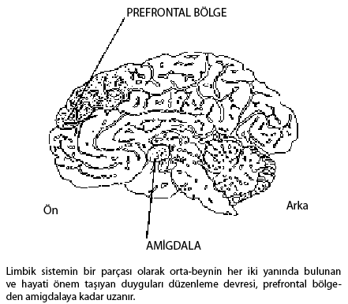

Önsöz
Bu kitabı yazmamızın en büyük nedenlerinden biri, Harvard Business Review’daki “Lideri Lider Yapan Nedir?” ve “Sonuç Alan Liderlik” başlıklı makalelere gelen, son derece coşkulu, eşi benzeri görülmemiş bir okuyucu tepkisiydi. Ancak bu kitap o makalelerin çok ötesine geçerek yeni bir kavram öneriyor: Başat liderlik. Biz, liderin başlıca görevinin, önderlik ettiği kişilerde iyi duygular uyandırmak olduğunu ileri sürüyoruz. Bu ise, lider ahenk –insanların en iyi yanlarını ortaya çıkaran olumlu duygular– yarattığında gerçekleşir. O halde, liderlerin temel görevi duygularla ilintilidir.
Liderliğin bu yeni boyutu, gözle görülemese ya da tamamen göz ardı edilse bile, liderin yaptığı diğer şeylerin olabildiğince yolunda gidip gitmeyeceğini belirler. Duygusal zekânın –duygulara ilişkin zekânın– liderlik başarısında çok önemli olmasının nedeni de budur: Başat liderlik modeli, duygusal zekâya sahip olmamızı gerektirir. Bu kitapta yalnızca duygusal zekâlı liderlerin neden ahenk, dolayısıyla da performans yarattığını değil, ayrıca gücünün –ekiplerde ve örgütlerin tamamında, lider tarafından– nasıl hayata geçirileceğini de gösteriyoruz.
Başat liderlik modeli belki de, nörolojiyle bağlantısı olan tek yönetim kuramıdır. Beyin araştırmalarında çığır açan yenilikler, liderlerin ruh halleriyle eylemlerinin önderlik ettikleri kişilerde neden müthiş bir etki yarattığını gösteriyor ve duygusal zekâlı liderliğin esinleme, tutku ve coşku uyandırma, insanlarda motivasyon ve bağlılık yaratma gücüne ışık tutuyor. Bizse, toksik liderliğin işyerindeki duygusal iklimi zehirleme gücü hakkında bir uyarıda bulunuyoruz.
Her birimiz bu işe değişik bir bakış açısı getiriyoruz. Daniel Goleman’ın kitaplarına ve Harvard Business Review’da çıkan makalelerine gelen coşkulu tepkiler, beraberinde dünyanın dört bir yanındaki liderlerle konuşma davetlerini de getirdi. Weatherhead Yönetim Okulu’nda profesör olan Richard Boyatzis de dünya çapındaki konferanslarına ek olarak, on beş yıldır binlerce MBA’lıya ve üst düzey yöneticiye duygusal zekâlı liderliğin temel yeterliklerini geliştirmek gibi zor bir süreçte yol göstermekten kaynaklanan derinlemesine araştırma üstünlüğüne sahip. Pennsylvania Üniversitesi’nin Lisans Üstü Eğitim Fakültesi’nde eğitim veren Annie McKee ise, dünya çapındaki şirket ve örgüt liderlerine danışmanlık yapıyor ve düzinelerce örgütün duygusal zekâlı liderler yetiştirerek dönüşüm yaşamasına yardımcı olmaktan edindiği pratik içgörüleri yansıtıyor. Kolektif uzmanlığımızı birleştirerek, farklı arka planlarımızı temel alan bir bakış açısı sunmak istedik.1
Dünyanın dört bir yanındaki şirket ve örgütlerden yüzlerce yönetici ve çalışanla konuşurken, başat liderlik modelinin pek çok yüzü bizim için açıklık kazandı. Her çeşit ve her düzeyden örgütlerde ahenk yaratan liderlerle karşılaştık. Kimisi, resmi bir liderlik konumu olmasa da, gerekli olduğunda önderlik yapmak üzere öne atılıyor, sonra da bir başka ihtiyaç ânına dek, geri çekiliyor. Kimisiyse bir ekibin ya da tüm şirketin başına geçiyor, yeni kurulan bir işe rehberlik ediyor, örgütünde değişim katalizörlüğü yapıyor ya da atik davranarak kendi serüvenine atılıyor.
Bu sayfalarda, böylesi liderlerin öykülerini sizlerle paylaşıyoruz (bazılarının adını verirken, gizlilik kaydıyla konuşanlarınkini saklı tuttuk). Ayrıca bu kişisel gözlemleri binlerce lider hakkındaki verilerle doğruladık.
Başka kaynaklardan da yararlanarak zengin bir veri harmanı oluşturabildik. Hay Group’un araştırma kolundaki meslektaşlar, küresel çaptaki müşterileri için yirmi yıldır yaptıkları etkili liderlik analizlerini bizimle paylaştı. Son yıllarda, gitgide büyüyen bir araştırmacı ağı, liderlikte anahtar niteliğindeki duygusal zekâ yeterliklerine ilişkin ölçütümüz olan ECI-360 ile veriler topladı. Duygusal zekâ ve liderlik hakkında daha pek çok araştırma merkezinden gelen bulgu ve kuramların kütlesi de gitgide büyüyor.
Bütün bu kaynaklardan, başat liderlik modeliyle ilgili şu anlamlı sorulara yanıtlar bulduk: Liderler kargaşa ve sarsıcı değişimin ortasında başarılı olabilmek için hangi duygusal kaynaklara gereksinim duyarlar? Lidere acıtıcı gerçekler konusunda bile dürüst olma iç gücünü veren nedir? Liderin, en iyi işi çıkaran ve değişik iş teklifleri aldıklarında bile işyerine sadık kalan insanlara esin kaynağı olmasını sağlayan nedir? Liderler yaratıcı yenilikleri, üstün performansı ya da sıcak ve kalıcı müşteri ilişkilerini pekiştirecek bir duygusal iklimi nasıl yaratırlar?
Yöneticiler çok uzun bir süre boyunca, işyerindeki duyguları örgütlerin rasyonel işleyişini aksatan bir uğultu olarak gördüler. Ancak duyguların iş yaşamıyla ilgisini yok sayma zamanı geçti artık. Günümüzde dünyanın her yerindeki örgütlerin, başat liderlik modelinin yararlarını kavraması ve insanların gelişmesini sağlayan duygusal ahengi yaratacak liderler yetiştirmesi gerekiyor.
Örneğin, 11 Eylül 2001’de New York, Washington D.C. ve Pennsylvania’da –bu kitabın yazılması bitmek üzereyken– meydana gelen korkunç felaketi ele alalım. Bu feci olay, duygusal zekânın özellikle de insani trajedi ve kriz dönemlerindeki temel rolünün altını çiziyor ve ahengin, duygular yelpazesini kapsayacak bir biçimde olumluluğun ötesine geçtiğini gösteriyor. Connecticut’ta teknoloji hisselerinin alım satımıyla uğraşan SoundView Technology’nin CEO’su* Mark Loehr’i ele alalım. Orada çalışanlar pek çok dostunu, meslektaşını ve aile üyesini, bu feci olayda yitirmişti. Loehr’in ilk tepkisi, tüm çalışanları ertesi gün işyerine çağırmak oldu – çalışmak değil, duygularını paylaşıp ne yapılacağından söz etmek için. Sonraki günlerde, insanlar birlikte gözyaşı dökerken Loehr de yanlarındaydı ve onları yaşadıkları deneyim hakkında konuşmaya teşvik etti. Her akşam saat 21.45’te tüm şirkete bir elektronik posta göndererek, süregelen olayların kişisel yanından söz etti.
Loehr bir adım daha atarak, hep birlikte katılabilecekleri yardım amaçlı bir eylem sayesinde kargaşadan nasıl anlam çıkarılacağına ilişkin bir tartışmayı teşvik edip yol gösterdi. Grup olarak yapacakları bağışla yetinmek yerine, mağdur kişilere şirketin bir günlük ticaret hasılatını bağışlamaya karar verdiler. Ortalama bir günde hasılat, yarım milyon doların üstündeydi; en yüksek günlük gelirleriyse 1 milyon dolar kadardı. Ama yapmak istedikleri şeyi müşterilerine de duyurduklarında, inanılmaz bir karşılık geldi: O gün 6 milyon dolardan fazla para topladılar.
İyileşme sürecini sürdürmek isteyen Loehr, çalışanlardan düşüncelerini, korkularını ve umutlarını kaydedecekleri, gelecek kuşaklarla paylaşılabilecek bir “günce” tutmalarını da istedi. Şiirler, dokunaklı öyküler, düşüncelerle dolu bir e-posta akışı oldu – herkes yüreğinden geçenleri dile getiriyordu.
Bu denli ciddi bir krizde, duygusal rehberlik için tüm gözler lidere çevrilir. Olaylara bakış biçimi özel bir ağırlık taşıdığı için, lider grup adına anlamı yönetir, verili bir durumu yorumlamanın ya da açıklamanın, dolayısıyla da ona duygusal bir tepki vermenin yolunu gösterir. Mark Loehr de, liderliğin en önemli duygusal görevlerinden birini cesurca yerine getirdi: Kargaşa ve çılgınlıktan bile anlam çıkarabilmek için kendisine ve çalışanlarına yardımcı oldu. Bunun için ilk önce ortak duygusal gerçekliğe uyum sağlayıp onu dışavurdu, böylece ifade ettiği yön insanları can evinden vurdu ve her birinin gönlünden geçenleri dile getirdi.
Çalışma günlerimizi geçirdiğimiz örgütler doğal olarak bizi esinlendiren liderlerin bulunduğu ahenkli ortamlar olsaydı, yaşamımız neye benzerdi? Gelişen dünyanın çoğu yerinde mükemmel iş ortamı henüz oluşmadı. Bu ahenkli liderlik kavramı, çok gelişmiş ortamlarda genellikle olduğu gibi, düzeltici değil kurucu bir ilke olsaydı, örgütler nasıl bir görünüme bürünürdü, bir düşünün. O zaman terfi ve geliştirmede olduğu kadar, daha en baştan işe insan alırken de liderliğin gerektirdiği duygusal zekâ yetilerine odaklanılırdı. Bu liderlik yetilerinin süregelen öğrenimi günlük etkinliklerin bir parçası olur ve örgüt tümüyle, insanların birlikte çalışarak geliştiği bir yere dönüşürdü.
Peki bu nitelikleri evliliğimize, ailemize, çocuklarımıza ve topluluğumuza taşısaydık ne olurdu? Duygusal zekâ yeterliklerinin düzeyini yükseltmelerine ya da derinleştirmelerine yardımcı olmak üzere birlikte çalıştığımız liderler bize sık sık, bunun yararını yalnızca işlerinde değil, kişisel ve aile yaşamlarında da gördüklerini söylüyorlar. Yüksek düzeyde özbilinç, empatili anlayış, kendine hâkim olma becerilerini ve uyumlu ilişkileri eve taşıdıklarını fark ediyorlar.
Bir adım daha atalım. Eğitim, ahengi artıran duygusal zekâ yetilerini de içerseydi, okullarımızda ve çocuklarımızda ne gibi değişiklikler olurdu? İlk olarak, bütün işverenler, bu anahtar niteliğindeki çalışma becerilerinde şimdiden ustalaşmış olan yeni kuşak lider adaylarını kadrolarına almanın keyfini yaşarlardı. Genç insanların bizzat elde edecekleri kişisel yararlar, güdüler ve sivri duygularla baş etmek gibi beceri eksikliklerinden kaynaklanan toplumsal hastalıklarda –şiddetten madde bağımlılığına kadar– düşüşe de neden olurdu. Bunun dışında hoşgörü, şefkat ve kişisel sorumluluk düzeylerindeki artıştan, yerel topluluklar da yararlanırdı.
İşverenlerin işe aldıkları kişilerde bu yetenekleri aradıkları düşünüldüğünde, üniversitelerle meslek okullarının –özellikle de işletme okullarının– sundukları beceri kümelerinin içine duygusal zekânın temellerini de eklemeleri gerekir. Büyük Rönesans düşünürü Erasmus’un bize anımsattığı gibi, “Gençlerin iyi eğitilmesi, bir ulusun en büyük umududur.”
Biz de en yenilikçi iş eğitmenlerinin, mezunlarının yalnızca yönetici değil, lider olmalarına da yardım edebilmek için yüksek eğitimde duygusal zekânın önemini fark edeceklerini umuyoruz. En ileri düşünceli işletmeciler, böylesi bir iş eğitimini yalnızca kendi örgütlerinde liderlik gücünün artması için değil, tüm ekonominin canlılığı açısından da teşvik edip destekleyeceklerdir. Bütün bunlardan yeni liderler kuşağı kadar, ailelerimiz, ait olduğumuz topluluklar ve bir bütün olarak ulusumuz da kazançlı çıkacaktır.
Son bir not: Bir değil, birçok lider vardır. Liderlik dolaşımlıdır. Yalnız tepedeki kişi değil, şu ya da bu şekilde bir gruba önderlik eden birisi –örgüt içinde ister atölye görevlisi, ister ekip şefi, ister CEO olsun– liderdir. Biz bu içgörüleri, konumları ne olursa olsun, tüm liderlere sunuyoruz.
Yazarlarla Temas Kurmak İçin
Bu kitap, liderlikte duygusal zekânın rolüyle ilgili süregelen bir araştırmayı temsil ediyor. Okurlarımızdan gelecek tepkilere –düşüncelere, öykülere, izlenimlere– açığız. Her zaman tüm e-postaları yanıtlayamasak da, okurlarımızın sesini duymak (ve onlardan her zaman bir şeyler öğrenmek) bizi hoşnut edecektir.
Bize e-posta yoluyla ulaşmak için, şu adresleri kullanın:
Daniel Goleman: daniel.goleman@verizon.net
Richard Boyatzis: richard.boyatzis@weatherhead.cwru.edu
Annie McKee: anniemckee1@aol.com
I. Kısım - DUYGUSAL ZEKÂNIN GÜCÜ
1. Bölüm - YENİ LİDERLER
Büyük liderler bizi harekete geçirir. İçimizde tutku uyandırır ve elimizden geleni yapmamızı sağlayan bir esin kaynağı olurlar. Neden bu denli etkili olduklarını açıklamaya çalışırken, strateji, vizyon ya da güçlü fikirlerden söz ederiz. Oysa çok daha temel bir gerçek var ortada: Büyük lider duygulara hitap eder.
Liderin girişimi –ister strateji oluşturmak, ister ekipleri seferber etmek– ne olursa olsun, başarısı, bunu nasıl yaptığına bağlıdır. Geride kalan her şeyi doğru yapsa bile, bu temel işte, yani duygulara doğru bir yön vermekte başarısızsa, hiçbir şey olabileceği ya da olması gerektiği gibi yolunda gitmeyecektir.
Örneğin, İngilizlerin medya devi BBC’nin bir haber bölümünde son derece önemli bir ânı ele alalım. Bölüm denenmek üzere kurulmuş, 200 kadar gazeteci ve editör elinden geleni yaptığını hissetse de, yönetim kapatılması gerektiğine karar vermişti.1
Bir araya gelen çalışanlara kararı bildirmek üzere gönderilen üst düzey yöneticinin parlak bir ifadeyle, rakip faaliyetlerin çok iyi gittiğini ve Cannes’a yaptığı harika bir geziden henüz dönmüş olduğunu açıklayarak konuşmaya başlaması hiç işe yaramadı. Haberin kendisi yeterince kötüydü, yöneticinin kaba, hatta aşağılayıcı üslubu ise, beklenen hüsranın bile ötesinde bir şeyler uyandırdı. İnsanlar yalnızca yönetimin kararına değil, bizzat haberi getiren kişiye karşı da öfkeye kapıldı. Ortam öyle tehlikeli bir hal aldı ki, yönetici salondan sağ salim çıkabilmek için neredeyse güvenliği çağırmak zorunda kalacaktı.
Ertesi gün, bir başka üst düzey yönetici aynı personeli ziyarete gitti. Onun yaklaşımı çok farklıydı. Büyük bir içtenlikle, toplumun canlılığı açısından gazeteciliğin hayati öneminden ve daha en başından onları bu alana iten dürtüden söz etti. Kimsenin gazeteciliğe zengin olmak için girmediğini anımsattı; bir meslek olarak geliri her zaman marjinal olmuştu, iş güvenliği ise ekonominin gidişatına göre inişli çıkışlıydı. Ayrıca gazetecilerin tutkuyla, hatta kendini adayarak verdikleri hizmete de değindi. Son olarak, hepsine kariyerlerinde şans diledi.
Bu lider konuşmasını bitirdiğinde, personelden alkış aldı.
İki lider arasındaki fark, mesajlarını hangi ruh hali ve hava içinde ilettiklerinde yatıyor: Birisi grubu muhalifliğe ve düşmanlığa yöneltirken, öteki zorluklar karşısında iyimserliğe, hatta esinlenmeye teşvik etmişti. Bu iki olay, liderliğin gizli, ama çok önemli bir boyutuna işaret ediyor: Liderin söylediği ya da yaptığı şeylerin duygusal etkisi.
Liderin ruh halinin –ve başkalarının ruh hali üzerindeki etkisinin– her örgütte önemli bir rol oynadığını çoğu kişi kabul etse de, duyguların genellikle çok kişisel, ya da hakkında anlamlı bir şey söylenemeyecek kadar yoğun olduğu düşünülür. Ancak duygu alanında yapılan araştırmalar, yalnızca liderin duygularının yarattığı etkinin nasıl ölçüleceği hakkında değil, ayrıca en iyi liderlerin kendilerinin ve başkalarının duygularıyla baş etme biçimlerini anlayıp geliştirmenin etkili yollarını nasıl buldukları konusunda da keskin içgörüler getirmiştir. Duyguların işyerindeki güçlü rolünün anlaşılması, en iyi liderleri –yalnızca işten daha iyi sonuç alınması ve yetenekli kişilerin elden kaçırılmaması gibi somut değil, ayrıca daha yüksek moral, motivasyon ve bağlılık gibi son derece önemli soyut alanda da– ötekilerden ayırır.
Başat Boyut
Liderin bu duygusal görevi, iki bakımdan başat, yani birincildir: Liderliğin hem ilk, hem de en önemli edimidir.
Liderler her zaman çok önemli bir duygusal rol oynamışlardır. Hiç kuşkusuz insan türünün ilk liderleri –kabile reisleri ya da şamanlar– konumlarını büyük ölçüde insanların duygularına hitap eden liderlikleri sayesinde edinmişlerdi. Tarih boyunca ve her kültürde, herhangi bir insan grubunun lideri, belirsizlik ya da tehlikeyle karşılaşıldığında ya da yapılması gereken bir iş olduğunda, ötekilerin güven ve düzen için başvurdukları kişi olmuştur. Lider, grubun duygusal rehberidir.
Modern örgütte, bu başat duygusal görev –şimdiye dek pek fark edilememiş olsa da– liderin birçok işi arasında en başta gelir: Kolektif duygulara olumlu bir yön vermek ve zehirli duyguların yarattığı isi yok etmek. Bu görev, yönetim kurulu odasından atölye katına kadar her yerdeki liderler için geçerlidir.
Çok basit bir biçimde, her türlü insan grubunda lider, kişilerin duygularını etkilemekte en yüksek güce sahiptir. İnsanların duyguları coşku düzeyine itilirse, performans coşabilir; insanlar kin ve kaygıya yönlendirildiğinde ise, dengeleri bozulabilir. Bu, liderliğin bir başka önemli yönüne işaret eder: Yarattığı etki, bir işin iyi yapılmasını sağlamanın ötesindedir. Takipçileri, lidere destekleyici duygusal bağlantı –empati– için de başvururlar. Her türlü liderlik, bu temel boyutu iyi kötü içerir. Liderler duygulara olumlu bir yön verdiklerinde, BBC’deki ikinci üst düzey yönetici örneğinde olduğu gibi, herkesin en iyi yanını ortaya çıkarırlar. Bu etkiye biz, ahenk (rezonans) diyoruz. Duygulara olumsuz bir yön verdiklerinde ise, ilk yönetici örneğinde olduğu gibi, insanların kendilerini göstermelerini sağlayan duygusal temellerin altını oyarak ahenksizlik (disonans) yaratırlar. Bir örgütün zayıflaması ya da güçlenmesi, büyük ölçüde liderlerin bu yeni duygusal boyuttaki etkililiğine bağlıdır.
Başat liderlik modelinin herkese yarar sağlamasının anahtarı, elbette ki, duygusal zekânın liderlik becerilerinde; liderlerin kendilerini ve ilişkilerini nasıl yönettiklerinde yatar. Bunun yararlarını azamiye çıkaran liderler, önderlik ettikleri kişilerin duygularına doğru bir yön verirler.
Bütün bunlar nasıl mı olur? Beyinle ilgili son çalışmalar, başat liderlik modelinin nörolojik mekanizmalarını ortaya koymakta ve duygusal zekâ yetilerinin neden bu denli önemli olduğuna açıklık kazandırmaktadır.
Açık Çevrim
Liderin tarzının –yalnızca ne yaptığının değil, nasıl yaptığının da– bu denli önemli olmasının nedeni, insan beyninin tasarımında; bilimcilerin, duygusal merkezimiz olan limbik sistemimizin açık çevrimli doğası diye nitelendirdikleri şeyde yatar. Dolaşım sistemi gibi kapalı çevrimli bir sistem, kendi kendini düzenler; başkalarının dolaşım sistemlerinde olup bitenler bizim sistemimizi etkilemez. Açık çevrimli bir sistemse, kendi kendini yönetmekte büyük ölçüde dış kaynaklara bağlıdır.
Bir başka deyişle biz, kendi duygusal dengemiz açısından başka insanlarla kuracağımız bağlantılara bel bağlarız. Açık çevrimli limbik sistem, evrimde hiç kuşkusuz kazançlı bir tasarımdı; çünkü bu sistem insanlara bir başkasının imdadına koşma olanağını tanır – örneğin, bir annenin ağlayan bebeğini yatıştırmasını, ya da bir primat topluluğundaki gözcünün tehlike algıladığında hemen bir uyarı işareti vermesini sağlar.
Gelişmiş uygarlığımızın gösterişli cilasına karşın, açık çevrim ilkesi hâlâ geçerlidir. Yoğun bakım birimlerinde yapılan araştırmalar, bir başka kişinin rahatlatıcı varlığının hastanın kan basıncını düşürmekle kalmayıp, damarları tıkayan yağ asitlerlerinin salgılanmasını da yavaşlattığını göstermiştir.2 Daha da etkileyicisi, bir yıl içinde (ciddi parasal sorun, işten atılma ya da boşanma gibi) üç ya da daha fazla şiddetli stres yaratan olay, toplumsal açıdan yalıtılmış orta yaşlı erkeklerin ölüm oranını üç kat artırırken, birçok yakın ilişkisi olan erkeklerin ölüm oranı üzerinde hiç etkisi yoktur.3
Bilimciler açık çevrimi, kişinin bir başkasının bedenindeki hormon düzeylerini, kardiyovasküler işlevi, uyku ritimlerini, hatta bağışıklık işlevini değişikliğe uğratmasını sağlayan “kişilerarası limbik düzenleme” olarak tanımlıyorlar.4 Sevdalı bir çift de, birbirinin beyninde hoş ve sevecen bir his yaratan oksitosin dalgalarını bu şekilde tetikler. Ancak yalnızca aşk ilişkilerinde değil, toplumsal yaşamın her yönünde, fizyolojilerimiz iç içe geçer ve duygularımız otomatik olarak birlikte olduğumuz kişi tarafından kayda alınır. Limbik sistemin açık çevrimli tasarımı, başkalarının bizim kendi fizyolojimizi, dolayısıyla da duygularımızı değiştirebileceği anlamına gelir.
Açık çevrimin yaşamımızda böylesi bir yeri olsa da, sürecin kendisini genellikle fark etmeyiz. Bilimciler duyguların bu uyumunu, laboratuvarda sohbet eden iki kişinin fizyolojisini –örneğin kalp atışlarını– ölçerek saptamışlardır. Konuşma başlarken, beden ritimleri farklıdır. Ancak basit bir on beş dakikalık konuşmanın sonunda, fizyolojik profilleri kayda değer bir benzerlik gösterir; bu olguya verilen ad, aynalamadır. Bir çatışma sarmalının alçalması sırasında, öfke ve incinme gibi duygular geri yansırken güçlü bir biçimde gerçekleşen bu durum, keyifli etkileşimlerde daha belirsiz olarak görülür.5 Duygusal bakımdan nötr bir tartışmada ise hiç meydana gelmez. Araştırmacılar, insanlar ne zaman bir araya gelse, tamamen sözsüz bir ilişki söz konusu olduğunda bile, duyguların kaçınılmaz bir biçimde yayılışını defalarca görmüşlerdir. Örneğin, üç yabancı iki ya da üç dakika sessizce karşı karşıya oturduklarında, duygularını en kolay dışa vuran kişi –tek kelime söylemeden– ruh halini ötekilere aktarır.6 Aynı etki işyerinde, yönetim kurulu odasında ya da atölye katında da geçerlidir; gruplar halinde çalışan insanlar, kaçınılmaz olarak birbirinin hislerini “kapar”, kıskançlık ve imrenmeden, hiddet ya da sevince kadar her şeyi paylaşırlar. Grup ne denli bütünleşirse, ruh halleri, duygusal geçmiş, hatta hassas noktalar o denli güçlü bir biçimde paylaşılır.7
Örneğin, farklı sektörlerden gelen yetmiş çalışma ekibinde, toplantılarda birlikte oturan üyelerin iki saat içinde –iyi ya da kötü– ortak ruh hallerine büründükleri görülmüştü.8 Birlikte çalışırken ruh hallerini haftalar boyu ya da birkaç saatte bir izleyen hemşirelerde, hatta muhasebecilerde, birbirine uyan ruh halleri görülüyordu ve gruptaki ortak ruh halleri, paylaştıkları zorluklardan büyük ölçüde bağımsızdı.9 Profesyonel spor takımlarıyla ilgili incelemelerden de benzer sonuçlar çıkmaktadır: Takımın konumundaki iniş ve çıkışlardan ayrı olarak, oyuncular günler ve haftalar boyunca ruh hallerini birbirine göre ayarlamaya eğilimlidir.10
Bulaşma ve Liderlik
Bir grubun üyeleri arasındaki limbik açık çevrimlerin sürekli etkileşimi, herkesin karışıma kendi lezzetini kattığı bir çeşit duygusal çorba yaratır. Ancak en güçlü baharatı katan, liderdir. Neden mi? İş yaşamının o değişmez gerçekliği yüzünden: Herkes patronu seyreder. İnsanlar duygusal ipuçlarını tepeden alırlar. Patron pek görünür olmasa bile –örneğin, üst katta kapalı kapılar ardında çalışan CEO gibi– tutumu kendisine doğrudan bağlı olanların ruh halini etkiler ve şirketin duygusal ikliminde bir domino etkisi yaratır.11
Eylem halindeki çalışma grupları üzerinde yapılan dikkatli gözlemler, liderin ortak duyguları belirlemekte oynadığı böylesi eksen niteliğindeki bir rolü açığa çıkardı.12 Liderler genellikle herkesten çok konuşuyorlardı ve söyledikleri şeyler daha dikkatlice dinleniyordu. Liderler ayrıca bir konuda söz alan ilk kişi oluyor ve başkaları yorum yaparken, saptamalarında çoğunlukla öteki kişilerin yorumundan çok, liderin söylediklerine değiniyorlardı. Olaylara bakış biçimi özel bir ağırlık taşıdığı için, lider bir gruba verili bir durumu yorumlamanın yolunu göstererek “anlamı yönetir” ve böylece o duruma duygusal açıdan tepki verir.13
Ancak duygular üzerinde yaratılan etki, liderin söylediklerinin ötesindedir. Bu incelemelerde liderler, konuşmadıklarında bile, grup içinde herkesten daha büyük bir dikkatle izleniyorlardı. İnsanlar bir bütün olarak grup adına bir soru yönelttiklerinde, tepkisini görmek için gözlerini lidere dikiyorlardı. Gerçekten de, grup üyeleri genellikle liderin duygusal tepkisini en geçerli yanıt olarak görür ve özellikle de farklı üyelerin değişik bir biçimde tepki verdiği belirsiz bir durumda, kendi tepkilerine onu model alırlar. Lider, bir anlamda, duygusal standartı oluşturur.
Liderler övgüde bulunur ya da övgüsünü sakınır, yapıcı ya da yıkıcı bir biçimde eleştirir, destek verir ya da insanların gereksinimlerine kör gözle bakarlar. Grubun misyonunu, herkesin katkısına daha fazla anlam katacak –ya da katmayacak– bir biçimde tanımlayabilirler. İşin nasıl yapılacağı konusunda sezgilerini kullanmakta insanları serbest bırakarak, onlara çalışmalarında bir açıklık ve yön duygusu verecek, esnekliği teşvik edecek bir biçimde yol gösterebilirler. Bütün bu eylemler, liderin temel duygusal etkisini belirler.
Yine de, bir gruptaki “resmi” liderlerin tümü, mutlaka birer duygusal lider değildir. Atanan lider bir nedenle inanılırlıktan yoksunsa, insanlar duygusal rehberlik için güvendikleri ve saygı duydukları başka birine başvurabilirler. Bu durumda fiili lider, başkalarının duygusal tepkilerini yoğuran kişi olur. Örneğin, resmi liderinin ve kurucusunun adını taşıyan tanınmış bir caz grubu, duygusal ipuçlarını aslında farklı bir müzisyenden alıyordu. Kurucu, konser anlaşmaları ve lojistikle uğraşmaya devam ediyordu, ama grubun daha sonra hangi besteyi çalacağı ya da ses sisteminin nasıl ayarlanacağına karar verme zamanı geldiğinde, tüm gözler baskın üyeye –duygusal lidere– çevriliyordu.14
Mıknatıslı İnsanlar
Duygusal lider kim olursa olsun, muhtemelen çevresindeki insanların duygusal beyni üzerinde hissedilir biçimde limbik “çekim” gücüne sahip biri gibi davranma hünerine sahiptir. Örneğin, yetenekli bir aktörü işbaşında seyrederek, izleyicileri duygusal yörüngesine ne kadar kolay çektiğini gözlemleyebilirsiniz. İster bir ihanetin kederini, ister bir zaferin sevincini aktarıyor olsun, bunları izleyiciler de hisseder.
O halde, liderlerin duygusal hallerini ne denli kolay kaptığımız, yüzlerinin, seslerinin ve hareketlerinin hislerini ne denli dışa vurduğuyla ilintili olmalıdır. Liderin duyguları aktarma becerisi ne kadar fazlaysa, duygular o kadar güçlü bir biçimde yayılır. Bu tür bir aktarım, sahte heyecan gösterisine bağlı değildir elbet; insanlar lidere yakın ilgi gösterdiklerinden, duygunun belli belirsiz dışavurumları bile büyük bir etki yaratabilir. Yine de, liderler ne denli açık olurlarsa –örneğin kendi coşkularını ne denli iyi ifade ederlerse– ötekiler de aynı bulaşıcı tutkuyu o denli kolay hissederler.
KAHKAHA VE AÇIK ÇEVRİM
Duygular virüs gibi yayılabilir, ama tüm duyguların yayılması aynı kolaylıkta olmaz. Yale Üniversitesi’nin Yönetim Okulu’nda yapılan bir incelemede, çalışma gruplarında neşe ve sıcaklığın çok kolay yayıldığı, kızgınlığın daha az bulaşıcı olduğu, depresyonun ise hiç yayılmadığı bulgulanmıştır.15 İyi ruh hallerinin daha hızlı yayılması, işten alınan sonuçlarla doğrudan ilintilidir. Yale’de yapılan incelemeye göre ruh halleri, insanların verimli çalışma düzeyini etkilemekte; iyimser ruh halleri işbirliğini, adil davranışları ve iş performansını artırmaktadır.
Özellikle de kahkaha, açık çevrimin gücünü –dolayısıyla da her türlü duygunun bulaşıcı doğasını– gözler önüne serer. Kahkaha duyduğumuzda, otomatik olarak gülümseyerek veya biz de gülerek, gruba yayılan doğaçlama bir tepki zinciri yaratırız. Neşe çok kolay yayılır, çünkü beynimizde, gülerek karşılık vermemizi sağlayan gülümsemenin ve kahkahanın saptanması için özel olarak tasarlanmış olan açık çevrimli devreler vardır. Bunun sonucu ise, olumlu bir duygusal korsanlıktır.
Benzer bir biçimde, tüm duygusal sinyaller arasında en bulaşıcı olanı gülümsemedir; gülümsemenin, başkalarını da gülümsetmekte neredeyse karşı konulmaz bir gücü vardır.16 Bu denli güçlü olmasının nedeni, evrimde oynadığı yararlı rol olabilir: Bilimcilerin tahminine göre, gülümseme ve kahkaha, ittifak oluşturmanın sözsüz bir yolu olarak evrilmiştir; kişinin siper almak ya da düşmanca davranmak yerine, rahatladığını ve dostça davrandığını gösterir.
Kahkaha, bu dostluğun son derece güvenilir bir işaretidir. Öteki duygusal sinyallerin –özellikle de taklit edilebilen bir gülümsemenin– aksine kahkaha, büyük ölçüde istem dışı olan son derece karmaşık sinir sistemlerini devreye sokar: Taklidi daha zordur.17 Bu nedenle sahte bir gülümseme duygusal radarımızdan kolayca kaçabilse de, zoraki bir gülüş kendini hemen ele verir.
Nörolojik anlamda, kahkaha iki insan arasındaki en kısa mesafeyi temsil eder, çünkü bir anda limbik sistemleri birbirine kilitler. Bu âni, istem dışı tepki, bir araştırmacının ifade ettiği gibi, “iki insan arasında mümkün olan en doğrudan –beyinden beyne– iletişime, aklımızın ‘limbik kilitlenme’ diye nitelendirilebilecek bir halde eşlik etmesiyle ilgilidir”.18 O halde, birbirinin yanında bulunmaktan keyif duyan insanların kolayca ve sık sık gülmesinde şaşılacak bir şey yoktur; birbirine güvenmeyen ya da birbirinden hoşlanmayan veya zıtlaşan insanlarsa, birlikteyken neredeyse hiç gülmezler.
Bu nedenle, herhangi bir iş ortamında duyulan kahkaha sesi gruptaki duygusal sıcaklığın habercisidir ve insanların zihinleri kadar yüreklerinin de birlikte olduğunu gösterir. Üstelik, işyerindeki kahkahanın, birisinin bayat bir fıkra anlatmasıyla pek ilgisi yoktur: Sosyal etkileşimler sırasında atılan 1200 kahkaha örneği üzerinde yapılan bir incelemede gülüş, neredeyse her seferinde, “tanıştığımıza sevindim” gibi sıradan bir söze verilen dostça bir karşılık şeklindeydi.19 Sıcak bir gülüş, şu rahatlatıcı mesajı gönderir: Aynı dalga boyundayız, anlaşıyoruz. Güvenin, huzurun ve ortak bir dünya anlayışının habercisidir; gülmek, konuşmada bir ritim olarak, şimdilik her şeyin yolunda gittiğini gösterir.
Bu türden bir yeteneği olan liderler, duygusal mıknatıs gibidirler; insanlar doğallıkla onlara doğru çekilir. Örgüt içinde insanların birlikte çalışmayı çok istedikleri bir lider, büyük olasılıkla bu iyi hisleri ortaya çıkarma yetisine sahiptir. Duygusal zekâlı liderlerin yetenekli insanları kendilerine çekmelerinin bir nedeni de budur. Olumsuz duyguları yayan –sinirli, huysuz, baskıcı, soğuk– bir liderse, insanları iter. Kimse suratsız biriyle çalışmak istemez. Araştırmalar şunu kanıtlamıştır: İyimser, coşkulu liderler, olumsuz ruh hallerine eğilimli olanlara kıyasla, çalışanlarının kalıcı olmasını daha kolay sağlarlar.20
Şimdi başat liderliğin etkisini bir adım öne taşıyıp, duyguların iş verimliliğini ne derece belirlediğini inceleyelim.
Ruh Halleri Sonuçları Nasıl Etkiler
Duygular son derece yoğun ve geçicidir, kimi zaman da işe zarar verir; ruh halleriyse genelde daha az yoğun, eldeki işi kesintiye uğratmayan, daha uzun süreli hislerdir. Ayrıca duygusal bir olay genellikle kendine denk olan kalıcı bir ruh hali –grubu saran alçak perdeli, sürekli bir his akışı– bırakır.
İşletme açısından bakıldığında duygular ve ruh halleri önemsiz görülebilir, ama işin yapılmasında asıl sonucu onlar yaratır. Liderin ılımlı kaygısı, bir şeyin daha fazla dikkat ve ilgi gerektirdiğini gösterebilir. Aslında temkinli bir ruh hali, riskli bir durum ele alınırken son derece yararlı olabilir; çok fazla iyimserlik ise tehlikelerin göz ardı edilmesine yol açabilir.21 Ani bir öfke patlaması, liderin dikkatini, kıdemli bir üst düzey yöneticinin cinsel tacize kalkıştığının ortaya çıkması gibi acil bir soruna çekebilir ve enerjisini normal ilgi alanından, örgütün tacizi yok etme çabalarını geliştirmek gibi bir çözüm bulmaya yönlendirebilir.22
Çok yakın bir teslim tarihi gibi bir nedenle duyulan ılımlı kaygı, dikkat ve enerjiyi yoğunlaştırabilir; süregelen sıkıntıysa liderin ilişkilerini baltalayabilir ve beynin bilgiyi işleyip etkili bir biçimde tepki verme yeteneğini azaltarak çalışma performansını engelleyebilir. Öte yandan, sıcak bir gülüş ya da iyimser bir ruh hali genellikle, iyi iş çıkarmakta çok önemli olan nöral yetileri artırır.
İyi ruh hali de, kötü ruh hali de, kendi kendini sürdürmeye eğilimlidir; bunun nedeni kısmen, ruh hallerinin algıları ve anıları çarpıtmasıdır. İnsanlar kendilerini iyi hissettiklerinde, bir durumun olumlu yanını görür ve onun hakkında iyi şeyler anımsarlar; kendilerini kötü hissettiklerindeyse, olumsuzluğa odaklanırlar.23 Bu algı çarpıklığının ötesinde, kişi sinirli olduğunda salgılanan stres hormonlarının bedende yeniden emilip yok olması saatler alır. Bu yüzden patronla tatsız bir ilişki, kişiyi o sıkıntının tutsağı haline getirip meşgul bir zihin ve kendini sakinleştiremeyen bir bedenle baş başa bırakabilir: O toplantıda beni öyle kızdırdı ki, dün gece saatlerce uyuyamadım. Sonuçta, kısmen kendimizi iyi hissettirdikleri için, doğal olarak duygusal bakımdan olumlu kişilerle birlikte olmayı yeğleriz.
Duygusal Korsanlık
Olumsuz duygular –özellikle de kronik öfke, kaygı, ya da yararsızlık hissi– dikkati yapılan işten kopararak çalışmayı engeller.24 Örneğin, ruh halleri ve salgın şeklinde bulaşmasıyla ilgili bir Yale çalışmasında, yıllık ikramiyelerin nasıl paylaştırılacağı konusunda yürütmeye yönelik kararlar alan grupların performansı, olumlu duygularla ölçülebilir derecede artmış, olumsuz duygularla da zayıflamıştı. Grup üyelerinin kendi ruh hallerinin etkisini fark edememiş olmaları da dikkat çekiciydi.
Örneğin, uluslararası bir otel zincirinde personeli kötü ruh hallerine sürükleyen etkileşimler arasında en yaygın olanı, bir yöneticiyle konuşmaktı. Şeflerle etkileşimlerin yaklaşık onda dokuzu, kötü hislere –hüsran, hayal kırıklığı, kızgınlık, üzüntü, tiksinme, ya da incinmeye– yol açıyordu. Bu etkileşimler çoğu kez; müşteriler, iş baskısı, şirket politikası ya da kişisel sorunlardan daha fazla sıkıntı yaratıyordu.26 Liderlerin aşırı “nazik” olmaları gereksizdir; liderlik denen duygusal sanat, iş gereksinimlerinin insanları gereksiz yere sinirlendirmeden öne sürülmesini de içerir. Psikolojinin en eski yasalarından biri, ılımlı düzey aşıldığında, kaygı ve endişedeki artışların zihinsel yetileri aşındırdığını savunur.
Sıkıntı, zihinsel yetileri aşındırmakla kalmayıp insanların duygusal zekâsını da azaltır. Sinirlenen kişi başkalarının duygularını doğru okumakta zorlanır; empati için gerekli olan en temel beceriyi zayıflatarak, sonuçta sosyal becerilerine zarar verir.27
Görev tatminiyle ilgili yeni bulgulara göre, insanların çalışırken hissettikleri duygular, iş yaşamının gerçek kalitesini doğrudan doğruya yansıtmaktadır.28 İşbaşında olumlu duygular hissetme süresinin oranı, tatminin, dolayısıyla da, sözgelimi çalışanların işten ayrılmaya ne denli yatkın olduklarının en güçlü belirleyicilerinden biridir.29 Bu anlamda, kötü ruh hallerini yayan liderler işletme açısından sakıncalıdır; iyi ruh hallerini aktaranlar ise, işletmenin başarıya ulaşmasına yardımcı olurlar.
İyi Ruh Halleri, İyi Çalışma
İnsanlar en iyi işi, kendilerini iyi hissettiklerinde çıkarırlar. Kendini iyi hissetmek, zihnin verimliliğini artırır; insanların bilgiyi daha kolay anlamalarını, karmaşık yargılarda karar alım kurallarına başvurmalarını ve daha esnek düşünmelerini mümkün kılar.30 Araştırmaların doğruladığı gibi, iyi ruh halleri, insanların başkalarına –ya da olaylara– daha olumlu bakmalarını sağlar. Bu ise, hedefe ulaşma yetenekleri konusunda daha iyimser olmalarına yarar, yaratıcılığı ve karar verme becerilerini artırır ve insanları başkalarına yardımcı olmaya hazırlar.31 Örneğin, “bardağın yarısı dolu” anlayışına sahip olan sigortacılar, kötümser akranlarına göre geri çevrilmeye çok daha iyi dayanabilir ve böylece daha fazla satış yaparlar.32 Ayrıca, işbaşında mizah duygusuyla ilgili araştırmalar, iyi zamanlanmış bir fıkra ya da cilveli bir kahkahanın yaratıcılığı uyarabildiğini, iletişim hatlarını açabildiğini, bağlılık ve güven duygusunu artırabildiğini ve tabii ki, çalışmayı daha eğlenceli hale getirebildiğini ortaya koymaktadır.33 Şakalaşma, bir pazarlık sırasında mali ödünler koparma olasılığını artırır. Duygusal zekâlı liderlerin araçları arasında şakacılığın önemli bir yer tutması boşuna değildir.
Keyifli ruh halleri, ekipler söz konusu olduğunda özellikle önemlidir: Liderin bir grubu coşkulu, işbirlikçi bir ruh haline sokma yeteneği, grubun başarısını belirleyebilir. Öte yandan, bir gruptaki duygusal çatışmalar dikkati ve enerjiyi ortak işlerinden uzaklaştırdığında, grubun performansı zarar görecektir.
Altmış iki CEO ile onlara bağlı üst düzey yönetim ekipleriyle ilgili bir incelemenin sonuçlarını ele alalım.34 CEO’lar, Fortune 500 listesindekilerin bir kısmıyla, önde gelen Amerikan hizmet şirketlerini (danışmanlık ve muhasebe firmaları gibi), kâr amacı gütmeyen örgütleri ve devlet kurumlarını temsil ediyorlardı. CEO’larla yönetim ekiplerinin üyeleri, ne derece keyifli –enerji dolu, coşkulu, azimli– olduklarına bakılarak değerlendirilmişlerdi. Kendilerine ayrıca, üst düzey ekibin toplantılarda çatışma ve kargaşa, yani kişilik çarpışmaları, öfke, sürtüşme ve (fikir uyuşmazlığının aksine) duygusal çatışmaları ne kadar sık yaşadıkları da sorulmuştu.
İncelemede elde edilen bulgulara göre, üst düzey yönetim ekibindeki insanların genel ruh hali ne denli olumluysa, o denli işbirliği yaparak çalışmışlar, işten alınan sonuçlar da o kadar iyi olmuştu. Bir başka deyişle, bir şirket iyi geçinemeyen bir yönetim ekibince ne kadar uzun süre yönetilirse, o şirketin pazar geliri de o kadar zayıf kalıyordu.
O halde “grup IQ’su” –herkesin tam kapasiteyle ortaya koyduğu hünerlerin toplamı– grubun duygusal zekâsına bağlıdır ve bunu gösteren de aralarındaki uyumdur. Birlikte çalışma becerisine sahip bir lider, işbirliği düzeyini artırarak grubun yerinde kararlar almasını sağlayabilir. Bu tür liderler, dostluğa dayalı ama herkesin ruhunu canlandıran verimli bir iklimi doğallıkla yaratırlar.
Bir Şirketteki “Hava”nın Ölçümü
Sağduyumuz bize, kendini iyi hisseden çalışanların müşterileri hoşnut etmek için ek çaba harcayarak kârı artırabileceklerini söyler. Aslında, o ilişkiyi öngören bir logaritma da vardır: Hizmet iklimindeki her yüzde 1’lik iyileşmeye karşılık, gelirde yüzde 2’lik bir artış olur.35
Maryland Üniversitesi profesörlerinden Benjamin Schneider, banka şubeleri, sigorta şirketlerinin bölge temsilcilikleri, kredi kartı çağrı merkezleri ve hastaneler gibi birbirinden farklı işlerde çalışanların hizmet iklimine verdikleri notun, işten alınacak sonuçları belirleyen müşteri hoşnutluğunun habercisi olduğunu bulgulamıştır. Benzer bir biçimde, ön cephedeki müşteri hizmeti temsilcilerinin belirli bir dönemde yaşadıkları yılgınlık, üç yıl sonrasına kadar çok fazla personel değişikliğinin –ve müşteri hoşnutluğundaki gerilemenin– habercisidir. Müşteri hoşnutluğundaki bu gerileme ise, gelirlerin azalmasına yol açar.36
Peki bunun ilacı nedir? İklimle çalışma koşulları ya da ücretler arasındaki belirgin ilişki bir yana, ahenk yaratan liderlerin rolü anahtar niteliğindedir. Genelde, görev duygusal bakımdan ne kadar zorlayıcıysa, lider de o denli empati göstermeli ve destek vermelidir. Hizmet iklimini yaratan, dolayısıyla da çalışanların müşterileri hoş-
GÜLÜMSEYEREK HİZMET ETMEK
Hizmet sektöründe her işletmenin kutsal kuralı olan müşterinin baş tacı edilmesi, işin tüm yönleri arasında belki de en çok bulaşıcı ruh hallerinden, dolayısıyla da beynin açık çevrim özelliğinden etkilenir. Müşteri hizmetleri, yalnızca müşterilerden ön cephede çalışanlara değil, çalışanlardan müşterilere doğru da serbestçe akan güçlü duygular nedeniyle oldukça streslidir. Müşterilere hizmet eden insanların kötü ruh halleri, işletme açısından hiç kuşkusuz sakıncalıdır. Birincisi, kabalık bulaşıcıdır –belirli bir hizmet konusunun iyi ele alınıp alınmadığından ayrı olarak– hoşnutsuz, hatta öfkeli müşteriler yaratır. İkincisi, hırçın bir eleman müşterilere kötü hizmet ederek kimi zaman yıkıcı sonuçlara yol açar: Hemşirelerin genel ruh halinin “depresif” olduğu kalp sağlığı birimlerinde hastaların ölüm oranı, karşılaştırılabilir birimlerdekinden dört kat yüksek çıkmıştı.37
Ön cephelerdeki iyi ruh halleriyse, işletme açısından yararlıdır. Müşteriler bir muhatapla etkileşimlerini zevkli bulurlarsa, dükkânın alışveriş yapmak için “iyi bir yer” olduğunu düşünmeye başlarlar. Bu yalnızca tekrar gelecekleri anlamına değil, kulaktan kulağa iyi reklam anlamına da gelir. Üstelik hizmet edenler kendilerini iyi hissettiklerinde müşterileri hoşnut etmek için daha çok şey yaparlar: Bir Amerikan perakende satış zincirindeki otuz iki mağazayla yapılan bir incelemede en iyi satış sonuçları, olumlu satış elemanlarını barındıran yerlerde görülmüştü.38
Bu bulgunun liderlikle ne ilgisi mi var? O perakende mağazalarının tümünde, satış elemanlarının ruh halini –sonuç olarak da satışları– doğru yöne çevirmiş olan duygusal iklimi yaratan kişi, mağaza yöneticisiydi. Yöneticiler bizzat canlı, güvenli ve iyimser olduklarında, ruh halleri onlardan personele bulaşıyordu.39
nut etmeye hazır olmalarını sağlayan, liderdir. Schneider’in bulgularına göre, örneğin bir sigorta şirketinde etkili liderliğin müşteri temsilcileri arasındaki hizmet iklimine katkısı, poliçe yenilemelerinde yüzde 3 ile 4 arası bir artış getirmişti; küçük görünen ama şirket açısından büyük fark yaratan bir artıştı bu.
Örgüt danışmanları uzun süredir, bir şirket biriminin insani iklimiyle performansı arasında bir çeşit olumlu bağ olduğunu varsayıyorlardı. Ancak bu ikisi arasında bağlantı kuran veriler çok azdı; bu nedenle de pratikte, liderler kişisel tarzlarını ve bunun önderlik ettikleri insanlar üzerindeki etkisini kolayca göz ardı ederek, “daha somut” şirket hedeflerine odaklanabiliyorlardı. Oysa şimdi, liderlikle şirketin iklimi ve performansı arasında bağlantı kurarak, bir şirketteki “hava” kadar soyut bir şeyin iş performansında yarattığı somut farkı ölçmeyi mümkün kılan, çeşitli sektörlerden alınmış sonuçlar var elimizde.
Örneğin, küresel bir yiyecek-içecek şirketinin iklimiyle ilgili olumlu göstergeler, belli başlı bölümlerde yıllık kazançların artacağını haber veriyordu. Doksan sigorta şirketini kapsayan bir incelemedeyse, CEO’ların kendilerine doğrudan bağlı kişiler arasında yarattıkları iklim, örgütün tamamındaki iş performansının habercisiydi: Örneklerin yüzde 75’inde, iklim tek etken olarak, yüksek kârlı büyüyen şirketlerle, düşük kârlı küçülen şirketleri birbirinden ayırmaya yetiyordu.40
İklim, performansı kendi başına belirlemez. Üç aylık bir dönemde hangi şirketlerin daha sağlam çıkacağını belirleyen etmenler hayli karmaşıktır. Ancak bizim analizlerimiz, iklimin –insanların bir şirkette çalışırken hissettikleri duyguların– iş performasında yüzde 20 ile 30 arası bir payı olabileceğini gösteriyor. İnsanların en iyi işi çıkarmalarını sağlamak, somut sonuçlar getirir.
İşten alınan sonuçları iklim yaratıyorsa, iklimi yaratan nedir? Çalışanların örgütlerindeki iklimle ilgili görüşlerinin yaklaşık yüzde 50 ila 70’i, bir kişinin eylemlerine bağlanabilir: Liderin. İnsanların iyi iş çıkarma yeteneğini doğrudan belirleyen koşulları, herkesten çok patron yaratır.41
Kısacası, liderin ruh hali ve eylemleri, önderlik ettiği insanların duygularını, dolayısıyla da performanslarını gerçekten etkiler. O halde, liderin ruh haline ne derece hâkim olduğu ve diğer herkesin ruh halini nasıl etkilediği yalnızca özel bir mesele değil, işletmenin göstereceği başarıda da bir etmen olmaktadır.42
Bu da bizi, beynin başat liderliği iyi ya da kötü, nasıl güdülediğine götürür.
2. Bölüm - AHENKLİ LİDERLİK
BBC’nin kapatılmakta olan bölümüne ilişkin örneğimize dönelim. Kötü haberi vermek üzere gönderilen –ve salondan çıkabilmek için neredeyse güvenliği çağırma gereğini duyacak kadar insanları kızdıran– ilk üst düzey yönetici, ahenksiz (disonant) liderlik diye nitelendirdiğimiz şeye örnek oluşturuyor: Salondaki insanların hislerine uyum sağlayamadığından, grubu hüsrandan kızgınlığa, kinden hiddete kadar aşağılara inen bir duygu sarmalına sokmuştu.
Bu tür liderler bir gruba empati göstermeyi, ya da grubun duygularını doğru okumayı başaramayınca, gereksiz yere sinirlendirici mesajlar göndererek ahenksizlik yaratırlar. Bunun üzerine grup, dikkatini liderin mesajına –ya da misyona– vermek yerine, ahenksizlikten kaynaklanan ortak sıkıntıyla uğraşır. Her türlü çalışma ortamında, ahenksiz bir liderin duygular ve iş üzerindeki etkisi kolayca görülebilir: İnsanlar dengeyi yitirdiklerini hisseder, dolayısıyla da kötü performans gösterirler.
İşine son verilen çalışanlardan alkış alan ikinci yöneticiyse, ahenkli (rezonant) liderliğe örnek oluşturuyor: İnsanların hislerine uyum sağlamış ve onları olumlu bir duygusal yönde harekete geçirmişti. Kendi değerlerinden içtenlikle söz ederek ve çevresindeki kişilerin duygularıyla ahenk kurarak, mesajıyla doğru tellere basmış, insanların zor bir dönemde bile kendilerini iyi, hatta hevesli hissetmelerini sağlamıştı. Lider ahenk kurduğunda, bunu insanların gözlerinden okuyabilirsiniz: İlgi dolu ve ışıl ışıldırlar.
Rezonans sözcüğünün kökeni, anlamını aydınlatıyor: Latince resonare, yankılamak anlamına gelir. Oxford sözlüğüne göre, rezonans, “sesin yansımayla”, ya da daha özgül bir biçimde “eşzamanlı titreşimle güçlenmesi ve uzaması” anlamına gelir. Eşzamanlı titreşim insanlarda, iki kişi duygusal bakımdan aynı dalga boyunda olduğunda –”ahenk içinde” olduklarını hissettiklerinde– ortaya çıkar. Rezonansın özgün anlamına uygun olarak da o eşzamanlılık, olumlu duygusal vurguyu uzatarak yankılanır.
Ahenkli liderliğin bir belirtisi de, liderin neşeli ve coşkulu enerjisiyle harekete geçen bir takipçiler grubudur. Başat liderliğin başlıca gereklerinden biri, ahengin liderliğin duygusal etkisini güçlendirip uzatmasıdır. İnsanlar birbiriyle ne denli ahenk içindeyse, etkileşimlerinin durağanlığı da o denli azalır; ahenk, sistemdeki cızırtıyı en aza indirir. “Ekip”, bir iş mantrasına göre, “çok sinyal, az cızırtı” anlamına gelir. Bir ekipte insanları bir arada tutan ve onları bir örgüte bağlayan tutkal, hissettikleri duygulardır.1
Grubun hedeflerine ulaşmasına yardımcı olmak için liderlerin o duyguları ne derece iyi yönetip yönlendirdikleri, duygusal zekâ düzeylerine bağlıdır. Ahenk, duygusal zekâlı liderlerde doğal bir niteliktir. Tutkuları ve coşkulu enerjileri, grubun içinde yankılanır. Yine de, bu tür liderler gerektiğinde daha ciddi bir ruh halini yansıtabilir, önderlik ettikleri kişilerin içinde bulunduğu duygusal hale uyum sağlamak için empati gösterebilirler. Örneğin, (bir bölümün kapanması gibi) herkesin kızdığı, ya da (çok sevilen bir çalışma arkadaşının ciddi bir hastalığa yakalanması gibi) üzüldüğü bir şey olduğunda, duygusal zekâlı lider o duygulara empati göstermekle kalmayıp, ayrıca grup adına onları dışa vurur. Bu tür bir yankılama, tıpkı coşku gibi ahengi güçlendirir, çünkü insanlar anlaşıldıklarını ve ilgi gördüklerini hissederler.
Duygusal zekâlı bir liderin rehberliği altındaki insanlar, karşılıklı bir huzur duyarlar. Fikirleri paylaşır, birbirinden ders alır, birlikte kararlara varır ve işlerin yapılmasını sağlarlar. Büyük bir değişimin ve belirsizliğin ortasında bile odaklı kalmalarına yardımcı olan bir duygusal bağ oluştururlar. Belki de en önemlisi, başkalarıyla duygusal bir düzeyde bağlantı kurmaları, işi daha anlamlı hale getirir. İyi yapılmış bir işi tamamlamanın kıvancını o ânın heyecanı içinde paylaşmanın nasıl bir şey olduğunu hepimiz biliriz. Bu hisler insanları, kimsenin tek başına yapamayacağı ya da yapmayacağı şeyleri birlikte yapmaya sevk eder. Böylesi bir bağın nasıl oluşturulacağını bilen kişi ise, duygusal zekâlı liderdir.
Öte yandan, lider ahenkten yoksunsa, insanlar kendilerini işin hareketliliğine kaptırabilir, ama ellerinden geleni yapmak yerine yalnızca “yeterli sayılabilecek” bir iş çıkarırlar. Yüreğini sağlıklı bir dozda işin içine katmayan bir sözde “lider”, yönetebilir ama önderlik edemez.
Ahenksiz Lider
Disonans, özgün müzikal anlamında, hoş olmayan, çatlak bir sesi tanımlar; hem müzikte hem de insani bağlamda disonans, ahenksizlik anlamına gelir. Ahenksiz liderlik, duygusal bakımdan uyumsuz olduğunu hisseden gruplar üretir ve o gruplardaki insanlar sürekli olarak akortsuz oldukları izlenimine kapılırlar.2
Kahkahanın işyerindeki ahengin barometresi olması gibi, tırmanan öfke, korku, kayıtsızlık, hatta somurtkan sessizlik de, tam tersinin habercisidir. Bu tür ahenksizlik, araştırmalara göre, iş dünyasında fazlasıyla yaygındır. Örneğin, bini aşkın Amerikalı çalışanla yapılan bir ankette, insanların yüzde 42’si işyerlerinde bağırıp çağırma ve başka türden sözlü saldırı olayları olduğunu bildirmiş, yüzde 30 kadarı ise, kendisinin de bir çalışma arkadaşına bağırdığını itiraf etmişti.3
Böylesi bir ahenksizliğin biyolojik bedellerini ele alalım. İçten yakınmaların yüzeye çıkarılması havayı temizleyebilir –ve ahenk yaratabilir– ama yakınan kişi bunu öfkeyle yaptığında, karşılaşma kolayca duygusal bakımdan zehirli bir sarmala dönüşebilir. Örneğin, yakınan kişi sakin bir biçimde “Toplantılara geç kaldığında, zamanımız boşa harcanıyor; zamanında gelirsen hepimiz daha verimli oluruz,” demek yerine, bir karakter saldırısı başlatır.
“Majestelerinin bizlere katılmaya tenezzül ettiğini görüyorum. Yoğun programınıza bizi de sıkıştırabildiğinizi görmek hepimizi pek sevindirdi. Zamanınızı çok fazla israf etmemeye çalışacağız,” diye hırlar.
Bu tür can sıkıcı karşılaşmalar, tartışma sırasında fizyolojik tepkilerin kayda alındığı gözlemlerde kanıtlandığı gibi, duygusal bakımdan çok zararlıdır.4 Tiksinme ya da aşağılama gibi acı verici duygusal mesajlar gönderen böylesi saldırılar, hedef alınan kişiyi duygusal korsanlığa sürükler; özellikle de saldırgan, düşünceleri fazlasıyla ağırlık taşıyan bir eş ya da patronsa.
Washington Üniversitesi’nden psikolog John Gottman, bu tür bir aşağılama mesajının tetikleyebileceği savaş ya da kaç tepkisinin şiddetini tanımlarken “dolup taşma” deyimini kullanıyor: Tek bir yürek atışında nabız, dakikada 20 ile 30 arası bir hızlanma gösterebilir ve buna bunaltıcı bir sıkıntı hissi eşlik eder. Kişi dolup taştığında, ne söylenenleri çarpıtmadan duyabilir, ne de açık bir yanıt verebilir; düşünme bulanıklaşır ve en hazır yanıtlar, karşılaşmaya çabucak son verecek ilkel tepkilerdir. Sonuç olarak, insanlar çoğunlukla aralarına duygusal ya da fiziksel bir mesafe koyarak karşı tarafı duymazlıktan gelir (ya da “duvar örerler”).
Bu incelemeler evli çiftler üzerinde yapılmış olsa dahi, patronla çalışan arasındaki ahenksiz bir karşılaşma da aynı duygusal zarara yol açar. Bir incelemede, çalışanlardan yöneticilerin kendilerine ateş püskürüp kişisel saldırıya giriştiği zamanları hatırlamaları istendiğinde, tipik bir biçimde savunmaya geçtikleri, sorumluluktan kaçtıkları, ya da yöneticiyle temas kurmaktan kaçınarak araya duvar ördükleri ortaya çıkmıştı. 108 yönetici ve beyaz yakalı çalışanın işyerindeki çatışma nedenleri hakkında verdiği bilgideyse, bir numaralı gerekçe, patrondan gelen beceriksiz eleştiri olmuştu.5
Kısacası, ahenksizlik insanları ruhsuzlaştırır, tüketir ya da eşyalarını toplayıp kaçmaya sevk eder. Ahenksizliğin bir kişisel bedeli daha vardır: Zehirli ortamlarda çalışan insanlar, zehri eve de taşırlar. Zehirli bir iş gününde serbest bırakılan stres hormonları, saatler sonra bedende dönüp dolaşmayı sürdürür.6
Ahenksizliğin Çeşitleri
Empatiden yoksun (ve grupla eşgüdümsüz) olmakla kalmayıp, ayrıca çoğunlukla olumsuz bir yankılama yapan duygusal tonları ileten çeşit çeşit ahenksiz lider vardır. Bunların çoğu ahenksiz olmayı amaçlamaz; yalnızca ahenk içinde önderlik etmelerine yardımcı olacak çok önemli duygusal zekâ yetilerinden yoksundurlar.
Uç noktada, ahenksiz liderler, avaz avaz bağırıp insanları azarlayarak aşağılayan kötü niyetli zorbadan düzenbaz sosyopata kadar çeşitlilik gösterir. Bu tür liderlerin duygular üzerindeki etkisi, Harry Potter dizisindeki “havada huzur, umut ve mutluluktan eser bırakmayan bozguncu tipler”in yarattığı duygusal etki gibidir.7 Sefil işyerleri yaratırlar, ama ne denli yıkıcı olduklarından ya habersizdirler; ya da umursamayıp geçerler.
Kimi ahenksiz liderlerse saman altından su yürüterek, yanlış yönlendirmek ya da manipüle etmek için yüzeysel cazibe ya da sosyal mevkilerini, hatta karizmalarını kullanırlar. Bu liderler savundukları değerleri tam anlamıyla benimsemezler, ya da empatiden yoksundurlar, kendi ilerlemeleri dışındaki şeylerle pek ilgilenmezler. Takipçiler –manipülatif liderin dostluk taslaması gibi– bu tür bir samimiyetsizliği sezdiklerinde, ilişki kuşku ve güvensizliğe dönüşerek eriyip gider.
Ahenksiz liderler kimi zaman kısa erimde etkili görünebilirler –örneğin, üstlerini hoşnut etmeye odaklanarak göz diktikleri konuma yükselebilirler– ancak arkada bıraktıkları zehirli hava, görünürdeki başarılarını yalanlar. Örgüt içinde nereye giderlerse gitsinler, mevkilerinin kalıtı hevessizlik ve kayıtsızlığın, öfke ve kırgınlığın anlamlı bir izini taşır. Kısacası, ahenksiz liderler, insanların yanında çalışmaktan ürktükleri kişilerdir.
Örgütte böylesi olumsuz yankılar yaratarak önderlik eden birini gördüğümüzde, sorun çıkacağını biliriz. Performansta kısa süreli bir yükselmeye karşın, lider yalnızca olumsuz duyguları yankılıyorsa, bunun sonucu eninde sonunda insanları tüketmek olacaktır. Bu tür bir lider –çoğunlukla yıpratıcı– duyguları iletir, ama almaz; insanları ne dinler ne de umursar. Duygusal lider ise tam tersine, olumlu duyguları yankılayarak –insanları değerli bir hedefin etrafında toplayarak– daha kalıcı olan motivasyon yolunu izler.
DEMAGOG
Usta liderlerin takipçilerini kendi duygusal ritimlerine geçiriyor olmaları, bizi şu rahatsız edici gerçekle yüz yüze bırakır: Tarih boyunca, demagoglar ve diktatörler bu yeteneği içler acısı amaçlar uğruna kullanmışlardır. Dünyadaki Hitler’lerin ve Pol Pot’ların hepsi de, öfkeli kalabalıkları heyecan verici –ama yıkıcı– bir mesajın çevresinde toplamışlardır. Ahenk yaratmakla demagogluk arasındaki çok önemli fark da burada yatar.
Ahenkli liderlerle karşılaştırıldığında, demagogların yaydığı duygusal mesajlar çok farklıdır ve olumsuz duyguların, özellikle de korku ve öfkenin bir karışımıdır: “Bize” karşı “onlardan” gelen tehdit ve “onların” elimizdekileri “bizden” alacakları korkusu. Demagogların mesajları, insanları ortak bir davada birleştirmek yerine kutuplara ayırır. Bu tür liderler eylem platformlarını olumsuz bir yankılamanın –insanlar tehdit edildiklerini ya da hiddetlendiklerini hissettiklerinde beynin içinde yayılan rahatsız edici ve sağkalımı gözeten savaş ya da kaç duygularının– üzerine kurarlar. Örneğin, Sırp lideri Slobodan Miloseviç, etnik düşmanlığı körüklemekte tam bir ustaydı; taraftarlarını bir kin, korku ve hiddet sancağının arkasında birleştirerek hem kendisine hem de ülkesine zarar verdi.
Demagogluk, gerçek yenilikçilik ve (zalimce kurnazlığın karşıtı olan) yaratıcı hayal gücü kadar, umut ve iyimserliği de bastıran bir dizi yıkıcı duygu aracılığıyla hüküm sürer. Ortak bir yapıcı değerler dizisine dayanan ahenkli liderlikse, tam tersine duyguların olumlu yönde yankılanmasını sürdürür. Kolektif bir arzu yaratarak, mümkün olanı betimleyen bir söylem aracılığıyla insanları inançlı bir adım atmaya davet eder.
Neyse ki demagog, iş yaşamında ender rastlanan bir tiptir; anlaşılan o ki siyaset, demagogun daha doğal ekolojik yuvasıdır. Yine de, iş dünyasındaki kimi liderler alçakça taktiklere başvurmaktadırlar. Olumsuz yankılamaya –örneğin, korku ya da düşmanlık ya da bir “düşman” yaratmaya– dayalı liderlik, ucuz bir hileden, grubu ortak bir hedefe doğru seferber etmenin hızlı ve kirli yolundan ibarettir. İnsanların bir şeye karşı ortak nefret ya da korku beslemelerini sağlamak görece kolay olabilir; tehlike söz konusu olduğunda, bu duygular kendiliğinden doğar. Ancak biyolojik açıdan bakıldığında, bu duygular bizi savaşmaya ya da kaçmaya hazırlaması gereken kısa süreli şiddetli patlamalar için tasarlanmıştır. Çok uzun sürer ya da sürekli olarak teşvik edilirse, bizi bitkin düşürür ya da yavaş yavaş tüketirler. O halde öfke ya da korku, lideri günlük bunalımdan kurtarabilir, ama bu duygular kısa ömürlü motivasyon araçlarıdır.
Bir de “her şeyden habersiz” diye nitelendirdiğimiz, olumlu duyguları yankılamaya çalışan, ama kendilerine bağlı kişilerin tatsız bir biçimde olumsuz duyguların tutsağı olduğunu hiç fark etmeyen liderler vardır. Bir başka deyişle, kurumsal gerçeklik insanları öfkeli ya da kaygılı yapar veya bir şekilde mutsuz eder, ama liderin bundan haberi bile olmaz ve yankı bulmayan neşeli bir mesaj gönderir.
Tanıdığımız bir üst düzey yönetici, kurumsal vizyonunu şöyle tanımlıyor: “Hızlı adımlarla karmaşık bir geleceğe doğru ilerliyor, yeni zirvelere erişirken sektörümüze önderlik ediyoruz. Liderlerimiz her dönemeçte fırsat arıyor, yöneticilerimizse rekabeti yakıp yıkıyorlar. Müşterilerimizin hoşnutluğundan büyük bir zevk duyuyoruz.”
İlk bakışta bu sözler kulağa hoş gelebilir; ama bir kez daha düşünüldüğünde, boş ve yavan oldukları anlaşılır. Yöneticinin ne demek istediğini biz bilmiyoruz (ya siz?), ama kültüre ve liderlik uygulamalarına bakmaya başladığımızda, ne büyük bir esneklik; ne belirsizliğe, risk almaya ya da yenilikçiliğe karşı hoşgörü; ne de müşterilerle uyum bulabildik. Eski rutine odaklanan ve liderlerinin tanımladığı vizyondan kuşku duyan insan gruplarına rastladık. Üzücü gerçek şu ki, o iş söylemi bir filtre işlevi görebilir; böylelikle de lider, insanların örgütte fiilen ne yaptıkları hakkında gerçek bir sohbete girmez ve hiçbir zaman değişmek zorunda kalmaz.
Kendine dönük bir lider çoğu kez çevresinden habersiz kalabilir. Örneğin, bir tüketim ürünleri şirketindeki bir grup yönetici, şirkette olup bitenlerden derin bir sıkıntı duydukları için CEO’larıyla bir toplantı talep etmişlerdi. Şirket, sektördeki diğer firmalarla karşılaştırıldığında hâlâ zirvedeki on kuruluş arasında yer alsa da, trend aşağıya dönüktü. İşin içinde olan bu yöneticiler, CEO’nun gidişatı düzeltmesine yardım etmek istiyorlardı.
Ancak CEO yöneticilerle buluştuğunda, onları duymuyor gibiydi. Endişelerini şöyle yanıtladı: “İnsanlar bir kahraman istiyorlar –bir kahramana gereksinim duyuyorlar– çalışanımızın gözünde ben böyle biriyim. Bir film yıldızı gibiyim; insanlar beni görmek istiyor, bana özeniyorlar. Buraya gelmenizin iyi bir fikir olduğunu da bu yüzden düşündüm, böylece söyleyeceklerimi duyabilir ve aslında nasıl biri olduğumu herkese anlatabilirsiniz.”
O konuşurken, salonda şaşkın bir sessizlik oldu; CEO’nun hiç kuşkusuz fikir birliği olarak kabul ettiği bir sessizlik. Ona göre, konu “biz” değil, “ben”di. Hırsın kötü yanı, liderin tüm dikkatini kendisine yönelterek, başarıya ulaşmak için gereksinim duyduğu insanların endişelerini duymazlıktan gelmesine –ve ahenksizlik yaratmasına– yol açabilmesidir.8
Duygusal zekâlı liderse, dikkatini insanların –kendisinin ve başkalarının– hislerine vererek ve onlara doğru yönü göstererek ahenk yaratır. Duygusal zekâlı liderliği teşvik eden ve ahenk yaratan mekanizmaları anlayabilmek için, beyin araştırmalarından elde edilen yeni bulgulara bakıyoruz.
Liderlik ve Beynin Tasarımı
Hiçbir canlı tek kanatla uçamaz. Tanrı vergisi liderlik, yürekle kafanın –duyguyla düşüncenin– buluştuğu yerde kendini belli eder. Duyguyla düşünce, liderin süzülerek yükselmesine olanak veren iki kanattır.
İşin girdisini çıktısını ve mevcut zorlukları kavrayabilmek için, her liderin yeterli bir zekâya gereksinimi vardır. Analitik ve kavramsal düşüncenin sağladığı zihin açıklığına sahip bir lider, örgütüne kesinlikle ek değer katar. Biz zekâ ve zihin açıklığını büyük ölçüde, kişiyi liderlik kapısına götüren nitelikler olarak görüyoruz. Bu temel yeteneklerden yoksunsa, girmesine izin verilmez. Bununla birlikte, zekâ tek başına lider yaratmaz; liderler bir vizyonu şevk vererek, yol göstererek, esinleyerek, dinleyerek, ikna ederek –ve en önemlisi, ahenk yaratarak– gerçekleştirirler. Albert Einstein’ın da uyardığı gibi, “Zekâya tapmamaya özen göstermeliyiz. Zekânın kasları güçlüdür elbet, ama kişiliksizdir. Önderlik yapamaz, yalnızca hizmet edebilir.”
Zekâdan ve duygulardan sorumlu sinir sistemleri birbirinden ayrıdır, ama iç içe geçmiş bağlantıları vardır.9 Düşünceyle hissi birbirine kenetleyen beyin devresi, başat liderliğin sinirsel temellerini oluşturur. İş kültürünün duygudan yoksun bir zekâya verdiği büyük değere karşın, duygularımız gerçek anlamda, zekâmızdan daha güçlüdür. Acil durumlarda, duygu merkezlerimiz –limbik beyin– beynin diğer kısımlarına komut verir.
Duyguların bu özel güce sahip olmasının bir nedeni vardır. Sağkalım açısından büyük önem taşırlar, beyin acil bir şey olduğunda bizi onlar aracılığıyla uyarır ve hemen bir eylem planı sunar: Savaş, kaç, dur. Düşünen beyin, limbik beyinden doğmuştur ve bir tehlike algıladığımızda ya da stresli olduğumuzda hâlâ ondan emir alırız. Bu zorlayıcı duyguların tetiklediği nokta, başımıza gelenleri anbean tarayan, acil duruma karşı daima uyarı halinde bulunan amigdaladır.10 Acil duygusal durumlarda radar işlevi gören bir limbik beyin yapısı olan amigdala, bir tehlike algılarsa hemen harekete geçmek için, neokorteksteki akıl merkezleri de dahil olmak üzere, beynin diğer bölümlerine komut verebilir.

Bu düzenleme yaklaşık son 100 milyon yıllık evrim boyunca işe yaradı. Korku, yırtıcı hayvanların yarattığı gerçek tehlikeye karşı ilk memelilere yol gösterdi; öfke, anneyi yavrusunu korumak için savaşmaya seferber etti. Kıskançlık, gurur, küçümseme ve şefkat gibi sosyal duyguların hepsinin de, primat gruplarının aile politikasında –günümüzün örgütsel yeraltı dünyasındaki gibi– bir rolü oldu.
Evrim boyunca duygular insana sağkalım savaşımında rehberlik etmiş olsa da, yaklaşık son 10.000 yıl içinde liderlik konusunda sinirsel bir ikilem doğdu. Günümüzün gelişmiş uygarlığında, acil fiziksel durumları atlatmak için tasarlanmış bir beyne karşın, karmaşık gerçekliklerle (sözgelimi, birisinin bize adil davranmadığı duygusu) yüz yüzeyiz. Dolayısıyla da kendimizi korsanlığa maruz kalmış (işyeri politikasının inceliklerinden çok, bedensel tehlikelerle baş etmeye uygun olan kaygı ya da öfkeyle sürüklenip gitmiş) durumda buluyoruz. (Bu adam kendini ne sanıyor tanrı aşkına! Öyle kızgınım ki onu pataklayabilirim!)
Neyse ki bu tür duygusal dürtüler, alnın hemen arkasındaki, beynin icra merkezi olan ve amigdaladan prefrontal bölgeye kadar giden yaygın devrelerden geçmektedir. Prefrontal bölge beynin tüm bölümlerinden bilgi alıp analiz eder, sonra da ne yapılacağına karar verir. Prefrontal bölge duygusal bir dürtüyü veto ederek tepkimizin daha etkili olmasını sağlayabilir. (Unutma ki bu yıl terfi etmen onun elinde – gevşe ve pişman olabileceğin bir şey yapmadan önce başka ne söyleyeceğini gör.) Bu veto olmasaydı, olay amigdalanın dürtüsünün devreye girdiği duygusal bir korsanlıkla sonuçlanırdı. Bu durum, prefrontal bölgedeki devreler o dürtüleri kontrol altında tutma görevini yerine getiremediğinde gerçekleşir.
Duygusal merkezlerdeki nöronlarla prefrontal bölgeler arasındaki diyalog, düşünceyle duygunun düzenlenmesine yardımcı olan, nörolojik otoyol denebilecek bir şey sayesinde kurulur. Liderlikte çok önemli olan duygusal zekâ yetileri, bu prefrontal-limbik devrenin pürüzsüz işleyişine bağlıdır. Prefrontal-limbik devresi zarar görmüş olan nöroloji hastalarıyla ilgili çalışmalar, bu insanların bilişsel yetenekleri olduğu gibi kalsa bile, duygusal zekâ becerilerinin bozulduğunu doğrulamaktadır.11 Söz konusu nörolojik olgu, bu yeterlikleri zekâ, teknik bilgi ya da iş uzmanlığı gibi, yalnız neokortekste barınan katıksız bilişsel yetilerden açıkça ayırır.
O halde, biyolojik anlamda, ahenkli liderlik sanatı zekâmızla duygularımızı birbirine kenetlemektedir. Elbette ki liderler karar verebilmek için önkoşul olan kavrayış ve düşünme becerilerine gereksinim duyarlar. Ancak sırf entelektüel zekâyla önderlik etmeye kalkışırlarsa, denklemin çok önemli bir parçasını atlamış olurlar.
Örneğin, stratejik hedeflerini değiştirmeye çalışan küresel bir şirketin yeni CEO’sunu ele alalım. Başarısız olmuş ve görevde yalnızca bir yıl kaldıktan sonra işine son verilmişti. “Şirketi yalnızca entelektüel zekâyla, insanları duygusal bakımdan harekete geçirmeden değiştirebileceğini sanıyordu,” dedi şirketteki kıdemli bir başkan yardımcısı. “Köklü stratejik değişiklikler yaptı ve bu değişiklikleri uygulayacak kişilerin fikrini almak zahmetine bile katlanmadı. Çalışanlardan yönetim kuruluna sel gibi akan e-postalar, bu uyumsuz liderlikten şikâyetçiydi ve sonuçta, CEO işten atıldı.”
Dört Temel Duygusal Zekâ Alanının Etkileşimi
Liderin ana görevlerinin heyecan, iyimserlik ve görev tutkusunun yanı sıra, bir işbirliği ve güven atmosferi yaratmak olduğunu ileri süren ilk kişiler biz değiliz.12 Ancak o bilgeliği bir adım ileri götürüp, liderin bu temel görevleri yerine getirmesini duygusal zekânın nasıl mümkün kıldığını göstermek istiyoruz.
Dört duygusal zekâ alanının her biri –özbilinç, özyönetim, sosyal bilinç ve ilişki yönetimi– ahenkli liderliğe çok önemli beceriler katar. Bu alanlar kuşkusuz, aralarındaki dinamik bir ilişkiyle iç içe geçmiş durumdadır. Örneğin, bir lider duygularının farkında değilse, onları iyi idare edemez. Duyguları kontrol dışına çıktığında ise, ilişkileri yönetme yeteneği zarar görür. Araştırmalarımız, bu dinamiğin altında bir sistem bulgulamıştır.13 Kısacası özbilinç, empatiyi ve özyönetimi kolaylaştırır; bu iki nitelikse, bir arada, etkili ilişki yönetimini mümkün kılar. O halde duygusal zekâlı liderlik, bir özbilinç temeli üzerinde gelişmektedir.
İş ortamlarında çoğunlukla göz ardı edilen özbilinç, ötekilerin temelidir: Kendi duygularımızın farkında olmadıkça, onları iyi yönetemez ve başkalarınkini pek anlayamayız. Özbilinçli liderler, içlerindeki sinyallere kulak verirler. Örneğin, duygularının kendilerini ve iş performanslarını nasıl etkilediğinin farkına varırlar. Öfkenin bir patlamaya dönüşmesine izin vermek yerine, yükselirken saptayarak hem nedenini görebilir, hem de o konuda yapıcı davranmanın bir yolunu bulabilirler. Bu duygusal özbilinçten yoksun olan liderler ise, hiddete kapılabilir, ama duygularının neden zorlandığını anlayamazlar. Özbilincin empatide, ya da bir başkasının durumu nasıl gördüğünü hissetmekte de çok önemli bir rolü vardır: Kişi sürekli olarak kendi hislerinden habersizse, başkalarının hissettiklerine de kulak asmaz.
Sosyal bilinç –özellikle de empati– liderin temel görevinde bir sonraki adım olan ahenk yaratmayı destekler. Başkalarının o anki hislerine uyum sağlayan bir lider, uygun olanı söyleyebilir ve yapabilir; korkuları dindirebilir, öfkeyi yatıştırabilir, ya da havayı neşelendirebilir. Bu uyum, liderin gruba rehberlik edebilecek ortak değerleri ve öncelikleri hissetmesini de sağlar.
Empatiden yoksun bir liderse ister istemez çevresinden habersizdir, dolayısıyla da olumsuz tepkiler uyandıracak biçimde konuşur ve davranır. Dinlemeyi ve başkalarının bakış açısını anlamayı içeren empati, liderin ahenk yaratan kişiler arasındaki duygusal kanallara uyum sağlamasına olanak tanır. Bu da, liderin uyumu korumak için mesajlarına ince ayar yapmasını sağlar.
Son olarak, liderler kendi vizyonlarını ve değerlerini anlayıp grubun duygularını algılayabildikleri anda, ilişki yönetimi becerileri ahenk kurulmasında katalizör işlevi görebilir. Bir grubun duygusal tonuna rehberlik etmek içinse, liderlerin kendi hedefleri ve öncelikleri konusunda keskin bir sezgileri olmalıdır; bu da bizi bir kez daha, özbilincin önemine götürür.
Dört duygusal zekâ alanı arasındaki bu dinamik ilişkilerin yalnızca kuramsal değil, pratik bir önemi de vardır. Bunlar, etkili liderliğin –ahengin– temel öğeleridir. Bir sonraki bölümde, liderlerin önderlik ettikleri insanlarda ahengi teşvik etmelerini sağlayan duygusal zekâ yetilerinin temelindeki nöral anatomiyi araştıracağız.
3. Bölüm - LİDERLİĞİN NÖROANATOMİSİ
Ahenk, beyin işlevi açısından, insanların duygusal merkezlerinin olumlu bir eşgüdüm halinde olduğu anlamına gelir. Bu beyinden beyne ahenkli bağlantıyı kurmanın en güçlü ve en doğrudan yollarından biri de, unutmayın ki gülmektir.
Büyük bir perakende mağazalar şirketinin üst düzey yönetim toplantısında yaşanan zor bir ânın, liderliğin nöroanatomisi açısından içerimlerini ele alalım. Herkesin elinde tuttuğu piyasa araştırma verilerinden yola çıkan pazarlamadan sorumlu başkan yardımcısı, büyük bir reklam kampanyası konusunda kötü bir karara varmıştı. Grup veriler üzerinde derin derin düşünürken, dile getirilmeyen görüş birliği çok açıktı: Pazarlama şefi çuvallamıştı.
Uzun, gergin bir sürenin ardından, salondaki bir başka üst düzey yöneticinin sessizliği bozarak, “Sanırım gözlüğünü takmadan baktın,” diye şaka yapması, herkesi güldürdü.
Bu küçük şaka iki amaca hizmet etmişti: Pazarlama şefinin gerçekten yanılgıya düştüğünü herkes adına üstü örtülü bir biçimde doğrularken, karşı çıkma ya da tartışmayla zaman harcama gereğini es geçerek o eleştirel mesajı yumuşatmıştı. Grup, hiç ara vermeden bir sonraki karara, durumun nasıl telafi edileceğine geçti.
Mizah duygusunun nörofizyolojisi ve (1. bölümde gördüğümüz) açık çevrim hakkında bilinen her şey, yöneticinin yaptığı şakanın, yönetim ekibinin duygusal merkezlerini olumlu bir etkinlik alanına yönelttiğini gösteriyor. Bu da muhtemelen, grubun soruna –pazarlama şefinin yanılgısına– sabitlenerek duygusal korsanlığa maruz kalmaktan kaçınmasına ve çabucak çözüme geçmesine yardımcı olmuştu. Yöneticiyse bütün bunları, olumlu bir hava yaratıp konudan sapmamalarını nasıl sağladığına ilişkin açıkça bir şey söylemek zorunda kalmadan yapmıştı.
Daha önce de belirttiğimiz gibi, mizahın ustaca kullanımı, etkili liderliğin göstergesidir. Bu, anlaşmazlık ve çatışmalardan her zaman kaçınmanız gerektiği anlamına gelmez. Ancak iyi liderlerin, şikâyetleri dışavurarak zaman harcamanın yararlı olup olmadığına ilişkin bir sezgileri vardır.
İnsanların bir komedyende bulunan zamanlama anlayışına, ya da mizahı etkili bir biçimde kullanmak için muazzam bir komiklik repertuarına gereksinimleri yoktur. Sonradan soğuk görünebilecek bir şaka, gülmeye ya da gülümsemeye yol açıyorsa, gergin anda güçlü bir duygusal dürtü olabilir. Etkili liderlikle gülmek arasında bağlantı kuran veriler, pazarlama şefiyle ilgili gerginliği hafifleten şaka gibi yüzlerce gerçek olaydan kaynaklanmaktadır.1 Örneğin, liderlik konumları için mülakata alınan üst düzey yöneticilerle ilgili olarak, mülakat sırasında her bir adayın karşısındaki kişiyi ne kadar sık güldürdüğüne bakan, sonra da hangilerinin yıldız olduğunu görmek için adayların kariyerini iki yıl boyunca izleyen bir incelemeyi ele alalım. Bulgular, sıradışı liderlerin mülakatçıyı sıradan yöneticilere göre iki kat fazla güldürdüklerini gösteriyordu. (Liderlerin başarısını gösteren iki öğe vardı: Mali performansı yansıtan ikramiyeler sıralamasında ilk üç arasında girmiş ve iş arkadaşları ile üstlerinin yüzde 90’ından “mükemmel” puan almışlardı.)
Araştırmacılar, ABD ve yurtdışından, yarıya yakını CEO ya da genel müdür olan üst düzey liderlerle de, kariyerlerindeki yüksek ve düşük derecelerle ilgili olarak mülakat yapmışlardı. Mülakat sırasında, sıradışı liderler, ortalama liderlerden üç kat fazla –yaklaşık dört dakikada bir– mizah içeren yorumlarda bulunmuşlardı.
Etkili liderler, mizaha daha serbestçe, durum gergin olduğunda bile başvurarak, etkileşimin ardındaki duygusal havayı değiştiren olumlu mesajlar gönderirler. Liderlerin söyledikleri sözler kuru ayrıntılarla –bir anlaşmanın maddeleriyle, bir iş planındaki rakamlarla– ilgili olsa da, gülmenin yol açtığı iyi hisler, ilişkilerindeki cana yakınlığı korur.
Duygusal Zekâ Yeterlikleri:
Yeni Liderlerin Araçları
Bu başarılı liderlerin güçlü mizah duygusunun, liderlikte üstün performansın anahtarı olduğunu bulguladığımız duygusal zekâ yeterlikleriyle ilintisi özellikle etkileyiciydi.2 Bu duygusal zekâ yeterlikleri, yeni liderlerin araçlarıdır.
Önceki çalışmalarımızı gözden geçirmek gerekirse, temel aldığımız yeterlik araştırmaları tabanının önemli bir bölümü, Harvardlı merhum profesör David McClelland’ın 1973 yılında yaptığı, o sırada radikal sayılan bir önermeden kaynaklanır.3 Önemli bir psikoloji dergisinde yazan McClelland, liderlik konumu gibi belirli bir göreve en iyi kişiyi atamak ya da yükseltmek isteyen bir örgütün, standart ölçütleri bir kenara atması gerektiğini söylemişti. İnsanların IQ’sunu, teknik becerilerini, ya da kişiliğini sınamak –ya da yalnızca özgeçmişlerine bakmak– yerine, ilk önce o görevde sıradışı performans gösterenleri inceleyerek, sistematik bir biçimde aynı işte ortalama performans gösterenlerle karşılaştırmayı önermişti.
O analiz, yalnızca konum açısından eşik niteliğindeki yetenekleri (işi yapabilmek için herkeste bulunması gereken temel becerileri) değil, daha da önemlisi, ayırt edici yeterlikleri; yıldızların sergileyip ortalama performans gösterenlerin sergilemediği yetenekleri de gözler önüne sermektedir. Daha sonra, diyordu McClelland, bu yeterliklerin aynısına sahip olanları seçin, ya da çalışanlarınızın bu güçlü yanları geliştirmelerine yardımcı olun. Bu öneri, günümüzde dünya çapındaki örgütlerde standart uygulama olan şeyi doğurdu: Olası yıldızları belirlemek, eğitmek ve yükseltmek için, liderlikte bir “yeterlik modeli”nin geliştirilmesi.
Örneğin, McClelland’ın uzun süreli ortağı olan Lyle Spencer’ın, bir sınai denetim firması için (Siemens’e bağlı, elli altı ülkede 400 şubesi bulunan 2 milyar dolarlık bir küresel şirket) geliştirdiği liderlik yeterliği modelini ele alalım.4 İlk adım, gelirlerle satış kârlarındaki artışa göre, performansları ilk yüzde 10 ile 15 arasına giren yıldız liderler grubunu belirlemekti.5
Daha sonra liderler, yalnızca ortalama performans gösteren yöneticilerle karşılaştırılıyor ve her iki grup, yeterliklerin değerlendirilmesi için tasarlanmış olan kapsamlı mülakatlara alınıyordu. Dört duygusal zekâ yeterliği –tek bir teknik ya da katıksız bilişsel yeterlik değil– yıldızların benzersiz güçlü yanları olarak öne çıktı: Sonuca ulaşma dürtüsü, inisiyatif üstlenme yeteneği, imece ve ekip çalışması becerileri ve ekiplere önderlik etme yeteneği.
Ardından, hangi duygusal zekâ yeterliklerinin hedef alınacağı açıkça bilinerek, şube yöneticilerinden oluşan bir başka grup aynı güçlü yanları geliştirecek şekilde eğitildi. Yeterlikleri tanıyıp her biri açısından değerlendirildiler ve bu yeterlikleri –dolayısıyla da iş performanslarını– ilerletmek için hedefler belirlediler.
Sonuç olarak, liderler etkililiklerini artırıp yükselen kârlardan önemli bir pay aldılar. Şubelerindeki gelir artışı o yıl, fazladan 1,5 milyon dolar tutarında –hiç eğitim almayan bir karşılaştırma grubunkinin iki katı– bir kâr katmıştı.
Liderler: Gelecek Kuşak
Duygusal zekâlı bir liderin değerinden söz ederken, bir örgütün –ya da ülkenin– başarısının tek bir karizmatik liderle yükseldiği ya da düştüğü yolundaki itibarını yitirmiş iddiayı yeniden canlandırmayı amaçlamıyoruz. Sosyolog Max Weber’in bir yüzyıl önce savunduğu gibi, ayakta kalan kurumlar bir liderin karizması nedeniyle değil, sistem içinde liderliği geliştirdikleri için başarılı olurlar.
“Kalıcı” şirketlerin yaratılması söz konusu olduğunda, bu özellikle doğrudur: Başarısını onyıllarca sürdürenler, etkili lider kuşaklarının nasıl yetiştirileceğini bilir.6 Örneğin, küresel çapta bir ecza şirketi olan Johnson & Johnson’da (J&J) yapılan, liderliğin geleceğiyle ilgili etkileyici bir çalışmayı ele alalım.
Şirketin büyüme tahminlerine bakan Ralph Larsen adlı CEO, J&J’nin başarılı olmak için giderek daha fazla lider geliştirmesi gerektiğini fark etti; aslında, bu tür bir liderlik gelişimini örgütün en önemli iş sorunu olarak görüyordu. Araştırma ekibi, J&J’deki 358 orta kariyerli üst düzey yöneticiye bakarak işe başladı. Bunların yarısı “yüksek potansiyelli”, yani başarıya erken ulaşan yöneticiler olarak teşhis edildi; geride kalanlar, daha düşük performanslı bir karşılaştırma grubunu kapsıyordu.7 Yüzde 45’i kadın, yüzde 55’i de erkek olan 358 üst düzey yönetici, Kuzey ve Güney Amerika, Avrupa, Ortadoğu, Afrika, Asya ve Avustralya’nın temsil edildiği küresel bir dağılımı yansıtacak şekilde, dikkatlice seçilmişti. Her biri, işini bilen üç üst düzey yönetici tarafından, hem şirketin liderlik modeli, hem de duygusal zekâ yeterlikleri kullanılarak gizli bir biçimde değerlendirildi. Araştırmacılar bu yetenek grubunu, liderlikte duygusal zekânın 360 derecelik bir ölçütü olan ECI’de (Emotional Competence Inventory / Duygusal Yeterlik Envanteri) dikkate alınan liderlik becerileri merceğinden geçirerek değerlendirdi.8
Yüksel potansiyel grubundaki yöneticilerin neredeyse her yeterliği sergiledikleri, karşılaştırma grubundaki yöneticilerinse yalnızca birkaçına sahip oldukları bulgulandı.9 Bir başka deyişle, ahenk yaratan liderlik becerileri olan duygusal zekâ yeterlikleri, bu seçkin grubun ayırt edici yeteneklerini öne çıkarıyordu. Ayrıca, kültürler arasındaki farklılıkların önemsiz olduğu anlaşıldı; duygusal zekâ yeterlikleri dünyanın her yerinde aynı isabetle tespit edilebiliyordu ve bu da, söz konusu yeteneklerin önemli olduğunu ve şirket nerede faaliyet gösterirse göstersin, değerlendirilebileceğini gösteriyordu.
Duygusal Zekânın Dört Boyutu
Duygusal zekânın boyutları ve onlara eşlik eden yeterlikler hakkındaki düşüncemiz, yeni verileri çözümledikçe gelişti ve yalınlaştı. Duygusal zekâ modelinin önceki biçimlerine aşina olan okurlar, burada bazı değişiklikler olduğunu fark edeceklerdir. Daha önce duygusal zekânın beş alanını sıralamışken, şimdi bu modeli dört alan –özbilinç, özyönetim, sosyal bilinç ve ilişki yönetimi– ve ilk yirmi beş yeterlik yerine on sekiz yeterlikle sınırlayarak basitleştirdik (bkz. tablo).10 Sözgelimi, duygusal zekâ alanlarından biri sosyal bilinç; bu alandaki yeterliklerden biri ise empati ya da hizmet olacaktır. Bunun sonucu, belirli yeterlik kümelerini, onları yönlendiren arka plandaki beyin dinamiklerine bağlayan bir duygusal zekâ modelidir.
Duygusal Zekâ Alanları ve İlintili Yeterlikler
(Ayrıntılar için bkz. Ek B)
KİŞİSEL YETERLİK: Bu yetiler kendimizi nasıl idare ettiğimizi belirler.
ÖZBİLİNÇ
• Duygusal özbilinç: Kendi duygularını okuyup etkilerini fark etmek; kararlara rehberlik etmesi için “altıncı hissini” kullanmak.
• İsabetli özdeğerlendirme: Güçlü yanlarını ve sınırlarını bilmek
• Özgüven: Özdeğer ve yetenekleri konusunda sağlam bir anlayışa sahip olmak
ÖZYÖNETİM
• Duygusal özdenetim: Rahatsız edici duygu ve dürtülerini denetim altında tutmak
• Saydamlık: Dürüstlük ve karakter bütünlüğü; güvenilirlik
• Uyumluluk: Değişen durumlara uyum sağlama ya da engellerin üstesinden gelme esnekliği
• Başarma dürtüsü: Mükemmelliğin iç standartlarını karşılamak için performansı artırma arzusu
• İnisiyatif: Eyleme geçip fırsatları yakalamaya hazır olmak
• İyimserlik: Olayların iyi yönlerini görmek
SOSYAL YETERLİK: Bu yetiler ilişkileri nasıl idare ettiğimizi belirler
SOSYAL BİLİNÇ
• Empati: Başkalarının duygularını sezmek, bakış açılarını anlamak ve endişeleriyle etkin bir biçimde ilgilenmek
• Örgütsel bilinç: Gündemleri, karar ağlarını ve örgütsel düzeydeki siyaseti okumak
• Hizmet: Takipçi, müşteri ya da tedarikçilerin gereksinimlerini fark etmek ve karşılamak
İLİŞKİ YÖNETİMİ
• Esinleyici liderlik: Cazip bir vizyonla yol göstermek ve şevk vermek
• Etkileme: Çok çeşitli ikna taktiklerini kullanmak
• Başkalarını geliştirmek: Geribildirim ve rehberlikle başkalarının yeteneklerini pekiştirmek
• Değişim katalizörlüğü: Yeni bir doğrultuda başlangıç yapmak, yönetmek ve önderlik etmek
• Çatışma yönetimi: Anlaşmazlıkları çözmek
• Ekip çalışması ve imece: Bir ilişkiler ağı kurmak ve sürdürmek, işbirliği yapmak ve takım oluşturmak
Duygular ve beyinle ilgili son bulgular, bu yeterliklerin nörolojik temeline daha fazla açıklık getiriyor.11 Bu açıklık da, onların dinamiğini daha iyi kavramımızı sağlarken, bir yandan da liderlik becerilerinin inşası için pratik kurallar sunuyor.
Kitabın ilerleyen bölümlerinde geliştireceğimiz önemli bir husus: Bu duygusal zekâ yeterlikleri doğuştan gelen değil, öğrenilmiş yeteneklerdir; liderlerin daha ahenkli, dolayısıyla da daha etkili olmalarını sağlamakta her birinin benzersiz katkısı vardır.
Bu olgu, mali sonuçlar üzerinde büyük etkisi olan acil bir iş gereksinimine işaret ediyor: Liderlerin daha etkili bir biçimde önderlik yapmalarına yardımcı olmak. Artık, duygusal zekâ çerçevesinin temelindeki nörolojinin rehberliğiyle, kitabın ikinci kısmında işleyeceğimiz liderlik sanatının öğrenilmesi söz konusu olduğunda işe yarayanla yaramayan arasında keskin bir ayrım yapabiliyoruz.
Temel savımız, kısa ve öz olarak, başat liderliğin ahenk yaratan duygusal zekâlı liderler aracılığıyla mükemmel işlediği yolunda. Bu önermenin altında, dört duygusal zekâ temelinin nörolojisi ile o temelleri oluşturan duygusal zekâ yeterlikleri arasındaki bağlantıları yüzeye çıkaran bir performans kuramı yatıyor. Bu duygusal zekâ yeterlikleriyse, bir grupta ahengi teşvik eden liderlik tarzlarının yapı taşlarını oluşturuyor.12
İlginçtir ki, şimdiye dek karşılaştığımız liderlerin hiçbiri, ne denli sıradışı olursa olsun, duygusal yeterliklerin her birinde eşit ölçüde bir güce sahip değil. Etkili liderler tipik bir biçimde, yarım düzine kadar duygusal zekâ yeterliğinde asgari düzeyde bir güç sergiliyorlar.13 Ayrıca, büyük liderliğin sabit bir formülü de yok: Mükemmeliyete giden birçok yol var ve üstün liderlerin kişisel tarzları çok farklı olabiliyor. Yine de bulgularımıza göre, etkili liderler genellikle temel duygusal zekâ alanlarının dördünde de, en azından bir yeterlikte güçlü oluyorlar.
Özbilinç
Basit bir ifadeyle, özbilinç; kişinin duyguları, güçlü yanları ve sınırları ile değerleri ve dürtüleri hakkında derin bir anlayışa sahip olması demektir. Özbilinci güçlü olan insanlar gerçekçidir; ne kendilerini aşırı eleştirir, ne de safça umuda kapılırlar. Daha çok, kendileri hakkında kendilerine karşı dürüsttürler. Kendileri hakkında başkalarına karşı da dürüsttürler, hatta kendi kusurlarına gülebilecek kadar.
Özbilinçli liderler ayrıca değerlerini, hedeflerini ve hayallerini de anlarlar. Hangi yönde ilerlediklerini ve nedenini bilirler. Kendilerini “doğru görünen”e ayarlarlar. Örneğin, parasal açıdan cazip olan ama ilkelerine ya da uzun vadeli hedeflerine uymayan bir iş teklifini geri çevirmekte kararlı davranabilirler. Özbilinçten yoksun kişiyse tam tersine, saklı değerlerini çiğneyerek iç kargaşayı başlatacak kararlar almaya yatkındır. Bir işte iki yılını doldurmuş birisi, “Parası cazip göründü, ben de imzayı bastım, ama bu görev benim için öyle anlamsız ki, sürekli canım sıkılıyor,” diyebilir. Özbilinçli insanlarsa, kararları değerleriyle örtüştüğü için işlerinden genellikle enerji alırlar.
Özbilincin belki de en etkileyici (ama en az görülebilir) belirtisi, kendini ölçüp biçme ve düşünceli olma eğilimidir. Özbilinçli insanlar olayları genellikle sakin bir biçimde, çoğu kez kendi başlarına ölçüp biçmeye olanak bulurlar; bu da dürtüleriyle tepki vermek yerine olaylar hakkında düşünmelerini sağlar. Birçok sıradışı lider, gerçekten de, tinsel yaşamında geliştirdiği kendini ölçüp biçme tarzını iş yaşamına taşır. Kimisi için bu, dua ya da meditasyon demektir; kimisi için de daha felsefi nitelikte bir kendini anlama arayışıdır.
Özbilinçli liderlerin bütün bu özellikleri, ahengin gerektirdiği inanç ve içtenlikle hareket etmelerine olanak tanır.
Öncelik Duygusu
Teknik anlamda, bize rehberlik eden değerler beyinde, en üstte “beğendiğimiz” ve cazip bulduğumuz, en altta ise tiksindiğimiz şeyler olmak üzere, duygusal vurguları olan bir düşünceler hiyerarşisi şeklinde temsil edilir. Bu duyguların gücü ve yönü, bir hedefin bize çekici mi yoksa itici mi geldiğini belirler. Örneğin, özürlü çocuklara yardım etme, ya da zirvedeki kişilerle çalışma düşüncesi bizi heyecanlandırıyorsa, bu bir motivasyon olacaktır.
Bütün bunlar, beynin tercihlerle ilgili hisleri izleyen prefrontal bölgelerinde –dikkatin, dolayısıyla da özbilincin merkezinde– gerçekleşir. Beynin o bölümündeki devreler, olumlu hislerimizi barındırır ve biz bir hedef için mücadele ederken onları sessizce tekrar tekrar aklımıza getirir. Bu nedenle hoş düşünceler, uzun bir süre boyunca bizi dürtükleyen bir çeşit yüreklendirme işlevini görür. Nörolojik açıdan bakıldığında, hayattaki hedeflerimize doğru ilerlememizi sağlayan şey, zihnimizin, bunları gerçekleştirdiğimizde ne denli hoşnut olacağımızı bize anımsatma yeteneğinden –amigdala ile sol prefrontal lob arasındaki devrede barınan bir yetiden– ibarettir.14
Yapabileceğimizin en iyisi yapma tutkusunu uyandıran, ister getirdiği katıksız heyecan, ister bir şeyi daha iyi yapmayı öğrenme hoşnutluğu, ister çok yetenekli meslektaşlarla birlikte çalışma keyfi (ya da yalnızca kazandığımız para) olsun, bütün şevk vericiler aynı sinir yolunu paylaşırlar. İş tutkusu, beyin düzeyinde, sol prefrontal kortekse bağlı devrelerin biz işimizi yaparken oldukça istikrarlı bir iyi his akımı yaydığı anlamına gelir.
Aynı zamanda, sol prefrontal bölgedeki beyin devrelerinin, motivasyon konusunda bir yararı daha vardır: Bizi devam etmekten caydırabilecek hüsran ya da endişe duygularını bastırırlar. Bu, değerli bir hedefin bize verdiği kaçınılmaz sıkıntıları, hüsranları ve başarısızlıkları yenebileceğimiz anlamına gelir. Terslikteki gizli fırsatı ya da yararlı dersi görebilir ve yolumuza devam edebiliriz.
Bu prefrontal devrelerin şevk veren hisleri teşvik edip cesaret kırıcı olanları kontrol altına almakta ne denli başarılı olduğu, yanlış giden şeyler üzerinde çok fazla durarak umudunu yitiren kötümser biriyle, zorluklara karşın hedefe ulaşmanın getireceği hoşnutluğu aklında tutarak yola devam eden iyimser biri arasındaki farkı oluşturur.
Gelelim bütün bunların liderler ve örgütlerle ilişkisine... Görev şevki çoğu zaman olağan sayılır; insanların yaptıkları işi umursadıklarını varsayarız. Oysa gerçek daha nüanslıdır: İnsanların çalışma hayatındaki rollerde hangi yöne çekildikleri, gerçek zevklerinin nerede yattığını gösterir; bu zevk ise kendi başına şevk verir. İkramiyeler ya da takdir gibi geleneksel teşvikler insanları daha iyi performans göstermeleri için tahrik edebilse de, hiçbir dış şevklendirici yapabileceklerinin en iyisini yapmalarını sağlayamaz.
Akıllı Tahmin
İşle ilgili kararlar verirken yalnızca teknik uzmanlığı değil, yaşam bilgeliğini de devreye sokmaya dayanan temel bir liderlik yeteneği olan sezgi, özbilinçli liderde kendiliğinden vardır. Liderlerin ulaşabileceği somut verilerin bol olduğu günümüzde, sezgisel bir duygunun iş yaşamında neden bir yeri olsun ki? Çünkü nörolojik araştırmalara göre hislerimize uymamız, verilerdeki anlamı bulmamıza yardımcı olarak daha iyi kararlara yol açar. Yani duygusal bellek bankamız, bilgiyi verimli bir biçimde yargılamamızı sağlar.15 Günümüz bilimine göre, duygular ussallığın karşıtı değil, bir parçasıdır.
Liderler müthiş bir veri akışıyla karşı karşıya olduklarından, akıllı tahmin artık onlar için her zamankinden daha önemlidir; ellerinde bu verilerin gelecekte neye işaret ettiğine ilişkin açık bir harita da bulunmamaktadır. Capital One’ın CEO’su Richard Fairbank şöyle diyor: “Lider olarak inandığın bir gelecek stratejisi bulmak, çok sezgisel bir şey. Liderin verileri kullanarak önceden kestiremeyeceği pek çok şey var. Üç yıl sonra neye gereksinim duyacağını nasıl bilebilirsin? Yine de gelişimi hemen başlatmazsan, gerekli olduğunda ne yapacağını şaşırırsın. Şirketimizde parlak veri analizcileri var; dünyadaki en büyük Oracle veri tabanlarından birine sahibiz. Ancak sonuçta, verilerin yaptığı tek şeyin, bizi tamamen belirsiz bir sınırın biraz daha ötesine itmek olduğunu görüyorum.”
Liderlerin geçmişe yatırım yapmaktansa geleceği yaratarak şirketlerini geliştirmelerinin şart olduğu günümüzde, vizyon eskiye göre çok daha önemlidir. Vizyon, başkalarına kendini inançla boşluğa bırakmak gibi görünen bir şeyi; verilerin ötesine geçip akıllı bir tahminde bulunma yeteneğini gerektirir.
Öte yandan, tek başına sezgi kimi zaman insanların kötü kararlar vermelerine yol açabilir. Anlaşıldığı kadarıyla sezgi en çok, altıncı his başka veri türlerine dayalı olarak kullanılabildiğinde işe yaramaktadır. Örneğin, California’da çok başarılı şirketler kuran –ve yöneten– altmış girişimcinin incelendiği bir çalışmada, neredeyse tümü, işe yönelik kararlar alırken eldeki bilgiyi içgüdüleriyle tarttığını söylemişti.16 Sözgelimi, bir iş planı verilere göre iyi görünüyor ama “doğru gelmiyorsa”, büyük bir ihtiyatla devam ediyor, ya da vazgeçiyorlardı. Altıncı hissi de veri olarak kabul ediyorlardı.
Günümüzde kendi alanında zirvede olan şirketler bile, liderleri yanlış tahminlerde bulunursa gelecekte başarısız olabilir. Yapılması gereken, hava durumunu tahmin etmeye çalışmaktan çok farklı değildir. Gerçekten, tam da bu denli karmaşık bir karar verme simülasyonunda bilimciler, gönüllü kişilerden metereolojik verilerden gelen ipuçlarına dayalı olarak hava durumunu tahmin etmelerini istediler.17 O ipuçları ile hava durumu üzerindeki etkileri arasındaki ilişki öylesine karmaşık bir olasılık işlevinde gizliydi ki, analitik akıl yürütme bile yararsızdı. Her denek bu ipuçlarına dayalı tahminlerde bulundukça, kendilerine kestirimlerin doğru olup olmadığı söyleniyordu. Bir başka deyişle, neyin işe yarayıp yaramadığını öğrenmeleri için onlara bir şans veriliyordu; tıpkı doğal olarak kariyeri boyunca herhangi bir lidere de verildiği gibi.
Şaşırtıcı bir biçimde, deneklerin hiçbiri ipuçlarıyla hava durumu arasındaki özgül bağıntıları anlayamadığı halde, elli denemeden sonra yaklaşık yüzde 70 oranında doğru tahminde bulunuyorlardı. Yavaş yavaş neler olup bittiğine dair bir “his” ediniyorlardı; beyinleri biriken dersleri sessizce devşiriyordu. Mantıksal zekâları hâlâ ne yapacağını bilemese de, çözümün esasını sezgileriyle kavrıyorlardı. Sadece tahminlerinin doğru olduğunu hissediyorlardı; öğrenilen derslere dayalı olarak, ne yapacaklarını sezgileri söylüyordu.
Bu inceleme bize, her liderin süregelen deneme ve yanılmalar deneyimiyle ulaştığı, birikime dayalı öğrenmenin zarif bir mikrokozmosunu sunmaktadır. Beyin sürekli olarak, neyin işe yarayıp yaramadığıyla ilgili karar kurallarını kayda alır: Şu ya da bu liderlik yaklaşımına insanların nasıl tepki verdiğini, verili bir durumda hangi taktiğin başarılı olduğunu, vb. Beyin, sürekli öğrenen birinin sahip olduğu hevesle, gelecek sefer karşılaşacağımız benzer bir zorluğa, belirsizliğe, ya da karar noktasına bizi daha iyi hazırlamak için yaşam derslerini yalayıp yutar.
Böylesi bir öğrenme büyük ölçüde beynin, sözcüklerin erişemediği derin bir bölgesinde (omuriliğin üstündeki ilkel bir bölümü olan bazal gangliumlarda) gerçekleştiğinden, liderlerin yaşam bilgeliğine erişmek için sezgilerine güvenmeyi öğrenmeleri gerekir.18 Kafa karıştırıcı kararlarla ilgili devre, aslında yalnızca bazal gangliumları değil, beynin anılarla bağlantılı duyguları sakladığı yer olan amigdalayı da içerir.19 Karar anlarıyla tekrar tekrar karşılaşırken bir yaşam boyu sessizce öğrendiklerimizden yararlanmamız söz konusu olduğunda, en iyi eylem rotasını veren beynin sözel bölümü değil, hislerimizi kullanan bölümüdür.
Bir liderin belirli bir işte ya da kariyerde geçirdiği her gün, beyni otomatik olarak olayların şöyle ya da böyle gidişinin, ya da işleyen neden-sonuç ilişkilerinin altında yatan karar kurallarının özetini çıkarır. Beyin sürekli olarak böyle sessizce öğrenirken, lider de yaşam boyu işbaşı deneyimlerinden edindiği bilgeliği biriktirir. Bu bilgelik, liderin kariyeri boyunca artar; hatta yeni teknik beceriler edinme yeteneği azalsa bile.
Bu karar kurallarının geçerli olduğu bir durumla ne zaman karşılaşsak, beyin en akıllıca sonuca vararak onları sessizce uygular. Beyin bu kararlar hakkında bize sözlü bilgi vermez; bunun yerine duygusal beyin limbik merkezlerden içimizden gelen duyguya kadar uzanan devreyi harekete geçirerek, bu kararın kendisine doğru geldiği hissini verir. Bunun üzerine amigdala, kelimenin tam anlamıyla içten gelen duyguyu yaratacak mide-bağırsak bölgesine kadar uzanan devre aracılığıyla, vardığı sonuçlardan bizi haberdar eder.20 Eldeki verileri aşan karmaşık bir kararla karşılaşıldığında, içten gelen duygu yol gösterir. İçimizden gelen duygu, gerçekten de, örtük öğrenmeyle –yani öğrendiğimizin farkında olmaksızın aldığımız yaşam dersleriyle– ilgili son keşifler nedeniyle yeni bir bilimsel saygınlığa kavuşmuştur.
Kısacası sezgi, duygusal zekâlı liderlere, bir konuda birikmiş yaşam bilgeliklerine uzanan doğrudan bir kanal açar. O mesajı duymak içinse, özbilincin iç dünyayla uyumlu olması gereklidir.
Liderin Yapması Gereken İlk Şey: Özyönetim
Özbilinçten, yani kişinin kendi duygularını anlaması ve amacını açıkça bilmesinden, tüm liderlerin hedeflerine ulaşmak için gereksindikleri odaklı güdü olan özyönetim doğar. Ne hissettiğimizi bilmezsek, o hisleri idare edemeyiz. Bunun yerine, duygularımızın denetimine gireriz. Coşku ve bir zorluğu yenme keyfi gibi olumlu duygular söz konusu olduğunda, genellikle bunun bir sakıncası yoktur. Ancak hiçbir lider, hüsran ve hiddet ya da kaygı ve panik gibi olumsuz duyguların denetimine girmenin yükünü kaldıramaz.
Sorun şu ki, böylesi olumsuz duygusal taşkınlıklar bunaltıcı olabilir; bunlar, beynin algılanan bir tehlikeye dikkatimizi çekme biçimidir. Sonuç olarak o duygular, düşünen beynin yapılması gereken stratejik planlama ya da pazar payındaki düşüş haberiyle ilgilenmek gibi çözüm bekleyen bir işe odaklanma yeteneğini yok eder.
Sıkıntılı ya da kaygılı birinin beyin taraması, diğer bölgeler arasından özellikle amigdala ve prefrontal bölgenin sağ tarafında yoğun bir etkinlik olduğunu gösterir. Bu tablo, bir amigdala korsanlığını betimler: Duygusal merkezler, dikkatimizi sıkıntımızın nedenine çekip üzerinde ısrarla durmamıza neden olan prefrontal bölgedeki yoğun etkinliği yönetmekte ya da yankılamaktadır. Tarama iyimser ruh hali içindeki birini gösterdiğinde ise, anahtar devre sol prefrontral korteksten aşağıya doğru, amigdalaya uzanır. İyi ruh hallerini yaratan beyin devresi sol prefrontal bölgede yoğunlaşır ve sıkıntıya neden olan amigdala ile onunla bağlantılı bölgelerin harekete geçmesini engeller.
Prefrontal bölgenin sol tarafı, araştırmacılara göre, amigdaladaki nöronları engelleyen anahtar devrenin bir parçası olduğu için kişiyi sıkıntıların tutsağı olmaktan korumaktadır.21 Bu devre, liderin çalkantılı duygularını sakinleştirip güvenli, coşkulu bir havayı sürdürmesine yardımcı olur.
O halde, hiç bitmeyen bir iç konuşmayı andıran özyönetim, duygusal zekânın bizi hislerimizin tutsağı olmaktan kurtaran bir öğesidir. Liderliğin gerektirdiği zihin açıklığı ile yoğunlaştırılmış enerjiyi sağlayan ve zararlı duyguların bizi rotadan çıkarmasını engelleyen de odur. Kendine hâkim olan liderler, olumlu duygulara ahenk katan neşeli, iyimser coşkuyu temsil ederler.
Bütün bunlar duygusal zekâ açısından son derece önemlidir. Duygular –özellikle de liderden gruptaki diğer kişilere– çok kolay bulaştığından, liderlerin birincil görevi, sağlığını korumanın duygusal eşdeğeri olan şeyi yapmak, yani kendi duygularını ele almaktır. Basit bir ifadeyle, liderler ilk önce kendi duygularıyla başa çıkmadan, başkalarının duygularını etkili bir biçimde idare edemezler. Bu nedenle de liderin ne hissettiği, özel bir mesele olmanın ötesindedir; duyguların sızması gerçeği göz öne alındığında, liderin duygularının genel sonuçları vardır.
Elbette bu, liderin yaşamındaki zorluklardan asla etkilenmeyeceği anlamına gelmez. Bir boşanma, sorunlu bir çocuk, ya da sevilen birinin hastalığı, kaçınılmaz olarak herkesi üzer. Ancak önemli olan, liderin özel yaşamındaki olağanüstü durumların iş ilişkilerine karışıp karışmadığıdır.
Öfkesini serbestçe dışa vuran, kasıp kavuran, ya da can sıkıcı duygularının cinnete dönüşmesine izin veren liderler, grubu işin mükemmel yapılması için gerekli olan olumlu havaya sokamazlar. Burada da beyin önemli bir rol oynar: İki kişi biraraya geldiğinde, bir anlamda, ahenk ya da ahenksizlik yaratan bir amigdalalar dansı başlar. Bu sinirsel halat çekme oyununda genellikle, kendi duygularını idare etme yeteneği daha güçlü olan kişi kazanır. Sol prefrontal eğilimi bariz –yani, hep iyimser– olan bir kişi, anlaşamadığı konularda kafa tutmasıyla bilinen birisiyle konuştuğunda, çığrından çıkmayan kişi sonuçta sinirli olanı yatıştırır.
Peki bunun sırrı nedir? Huysuz insanlar genellikle karşılarındaki kişiyi rahatsız eder, sonra da öfkeye kapılmasına neden olurlar. Bir başka deyişle, açık çevrimde, rahatsız olan amigdala öteki amigdalayı huzursuz eder. Ancak karşı taraf saldırganca tepki vermeyip kararlı bir biçimde olumlu duyguların etkisinde kalırsa, amigdalası rahatsız olan kişi de bir ihtimal sakinleşebilir, ya da en azından daha fazla huzursuzluk duymayabilir. Gerçekten de, incelemelerden birinde sinirli kişi sonradan, karşı taraf sürekli olarak olumlu tepki verdiği için karşı koyamadığını belirtmişti.
Benzer bir biçimde, yoğun baskı altında bile iyimser ve neşeli kalabilen liderler, ahenk yaratan olumlu duyguları yayarlar. Hislerini ve dürtülerini denetim altında tutarak, bir güven, huzur ve adalet ortamı yaratırlar. Bu özyönetim de liderden alt kademelere doğru süzülerek yayılan bir etki yaratır. Patron sürekli olarak sakin bir tavır sergiliyorsa, kimse huysuzun teki olarak bilinmek istemez.
Özyönetimin rekabet bakımından da önemli olması şaşırtıcı değildir. Şirketlerin sürekli olarak birleşip ayrıldığı ve teknolojinin iş dünyasını baş döndürücü bir hızla dönüştürdüğü şu belirsiz ortamda duygularına hâkim olan liderler, değişimlere daha iyi ayak uydurup örgütün de uyum sağlamasına yardımcı olabilirler.
Özyönetim, bir liderlik erdemi olduğu kadar örgütsel bir güç de olan saydamlığı mümkün kılar.22 Saydamlık –kişinin duyguları, inançları ve eylemleri konusunda başkalarına karşı gerçekten açık olması– karakter bütünlüğüne, ya da lidere güvenilebileceği duygusuna yol açar. Temelde, karakter bütünlüğü dürtü kontrolüne dayanır ve pişman olabileceğimiz şeyler yapmamızı engeller. Karakter bütünlüğü ayrıca, liderin değerlerini gözetmesi anlamına da gelir. Böylesi liderler içtenlikli görünür, çünkü olduğundan başka biriymiş gibi davranmazlar. Karakter bütünlüğü bu yüzden, tek bir soruya indirgenir: Yaptığınız şey, kendi değerlerinize uyuyor mu? Duygusal zekâlı liderler, bulgularımıza göre, saydamlığın ortaya çıkardığı soruları rahatça yanıtlamalarını sağlayan bir karakter bütünlüğüne sahiptirler.
Son olarak, liderlerin en anlamlı sorumluluk edimi, kendi zihinsel durumlarını denetlemektir. Sık kullanılan cool teriminin özgün anlamı, Afrika kökenli Amerikalı caz müzisyenlerinin o dönemde ırkçılığa karşı duydukları öfkeyi, derin hislerin olağandışı ifadesine kanalize ederken bile kontrol etme yeteneğine gönderme yapıyordu.23 Etkili liderlik de aynı şekilde, kişinin kendi çalkantılı hislerini idare ederken, bir yandan da olumlu duyguların tam ifadesine olanak tanıyabilmesini gerektirir.
Sosyal Bilinç ve Limbik Tango
Ahenk yaratan liderlik, özbilinç ve duygusal özyönetimden sonra sosyal bilinç, ya da bir başka deyişle, empati gerektirir. Empati gösterme yeteneği, en temel şeklinde, başka birinin yüzünden ve sesinden duyguları okuyan ve konuştuğumuz kişilerin hislerine sürekli olarak uyum sağlamamızı mümkün kılan amigdalanın içindeki ve onunla bağlantılı uzatılmış devredeki nöronlardan kaynaklanır. Bu devre, dışarıya aralıksız bildiriler gönderir –bu son söz onu biraz sinirlendirdi ... şimdi de biraz sıkılmış görünüyor ... bunu duymak hoşuna gitti– prefrontal bölge ve onunla ilintili alanlar da bu bildirileri, daha sonra söyleyeceğimiz ya da yapacağımız şeyin ince ayarında kullanır.24
Karşı tarafın az önce nasıl tepki verdiğinden bizi haberdar eden amigdala ve ona bağlı devreler, duyguların kişilerarası açık çevriminde bir ana istasyon gibi eşgüdümlü olmamızı sağlar. Bu devre ayrıca duygusal hallerimizin birbirine yakınlaşması için, kendi biyolojimizi birlikte olduğumuz kişinin baskın hislerine uyarlar. Bilimcilerin bu sinirsel uyum için kullandıkları terimlerden biri de, iki kişinin duygusal halleri arasında ahenk kurmasını sağlayan “bir etkileşim ve içsel uyarlanma senfonisi” olan limbik rezonanstır.25 Birisiyle “aynı dalga boyunda” olduğumuzu hissederek –ister hoşça vakit geçirerek, ister birlikte ağlayarak olsun– içtenlikli bir bağlantı kurmamız, böylesi bir beyinler arası kilitlenme yaşadığımızı gösterir. Bu sessiz uyum, iyi giden her insani ilişkide –anneyle çocuğu arasında, beraber kahve içtiğimiz arkadaşlarla, çalışırken hep birlikte gülen ekip üyeleri arasında– gerçekleşir. Bir grupta ya da kalabalık içinde duygu selini başlatabilen, bu duygusal ahenktir; söz konusu duygu ister bir cenazede duyulan üzüntü, ister borsada başarılı bir halka arzın getirdiği heyecan olsun.
Empati duygusal zekâlı liderliğin gerekli bir öğesi olmakla birlikte, bir başka öğe de, liderin mesajını başkalarını harekete geçirecek bir biçimde ifade etme yeteneğidir. Hislerini inanarak ifade eden bir liderden ahenk doğar, çünkü o duyguların içtenlikli, sıkı sıkıya savunulan değerlere bağlı olduğu çok açıktır.
Duygusal zekâlı liderler, olumlu dalga boyundaki duyguları yayarlar: İyimserlik, şefkat, ya da bir bağlantı hissini, umutlu bir geleceğe yönelik arzular uyandıran hayallerini dile getirerek insanları harekete geçirirler. Beyin düzeyinde, bu tür mesajlar sol prefrontal bölgeye giren ve çıkan bir devrenin merkezindeki bir his grubu olan neşeli duyguları yayar. Motivasyonun anahtarı da beynin bu bölgesindedir; bu olumlu görüşler yayılırken, grup o ortak hedefin etrafında ateşli bir heyecana kapılır.26 Örneğin, “Bir hayalim var” nakaratıyla Amerikan sivil hakları hareketini seferber eden Martin Luther King Jr.’ı düşünün; onun hayali, tüm insanların eşit fırsatlara sahip olacağı bir dünyaydı.
Sosyal bilinç –özellikle de empati– liderin temel görevi olan ahenk yaratmakta çok önemlidir. Başkalarının duygularına uyum sağlayan bir lider korkuları dindirebilir, öfkeyi yatıştırabilir ya da havayı neşelendirebilir. Bu uyum, liderin gruba rehberlik edebilecek ortak değerleri ve öncelikleri hissetmesini de sağlar. Empatiden yoksun bir liderse çevresinden habersiz olduğu için, olumsuz tepkiler uyandıracak biçimde konuşur ve davranır.
Empati: İş Yaşamındaki Yeri
Duygusal zekânın tüm boyutları arasından, sosyal bilinç anlaşılması en kolay olanıdır. Duyarlı bir öğretmen ya da arkadaşın empatisini hepimiz hissetmiş; duyarsız bir eğitmen ya da şefin empatiden yoksunluğuyla da sarsılmışızdır. Ama iş yaşamı söz konusu olduğunda, insanların gösterdikleri empati için ödüllendirilmek bir yana, övüldüğünü bile ender duyarız. Sözcüğün kendisi iş yaşamına aykırı, piyasanın katı gerçekleri içinde yersiz gibi görünür.
Oysa sosyal bilincin temel yeterliği olan empati, “Ben iyiyim, sen iyisin” türünden bir yavanlık değildir. Liderlerin öteki kişilerin duygularını kendi duyguları gibi benimseyip herkesi hoşnut etmeye çalışmaları anlamına gelmez. Bu bir karabasan olurdu; harekete geçmeyi olanaksızlaştırırdı. Empati daha çok, çalışanların duygularını düşünceli bir biçimde dikkate alıp o duyguları tepkiye dönüştürecek zekice kararlar almak anlamına gelir. En önemlisi de, empatinin ahengi mümkün kılmasıdır; empatiden yoksun liderler, ahenksizlik yaratacak biçimde davranırlar.
Empati özyönetime dayalıdır, ama bunun anlamı duyguları uygun bir biçimde, bastırmadan ifade etmektir. Duygusal zekâlı liderin empati gösterme yeteneği kimi zaman, kişisel bir felaket ya da bir azarlama ya da işten atma dolayısıyla elemanları ağladığında, gözlerinin yaşarmasına yol açar. Öte yandan, üzerinde düşünülmüş bir tepki mutlaka tutku eksikliğini göstermese de, duygularını içine atan bir lider duygudan yoksun görünebilir.
Liderler başkalarının duygularını ve bakış açılarını kavrayabildiklerinde, söyledikleri ya da yaptıkları şeyleri denetim altında tutan güçlü bir duygusal rehberlik sistemine erişirler. Dolayısıyla da empati, iş yaşamında her türlü sosyal etkililiğin olmazsa olmaz şartıdır. Empati gösteren kişiler müşterilerin ve astların gereksinimlerini çok iyi anlar ve karşılarlar. İnsanların söyleyeceklerini duymak isteyen, yanına yaklaşılabilir bir görüntü verirler. Dikkatle dinler, insanları gerçekten kaygılandıran şeyleri sezer ve hemen karşılık verirler. Bu nedenle empati, yetenekli kişileri elden kaçırmamanın anahtarıdır. Liderlerin iyi elemanları geliştirmek ve ellerinde tutmak için hep empatiye gereksinimleri olmuştur, ama yetenekli insanlara yönelik bir rekabet söz konusunda olduğunda, risk de büyür. Bir şirketin denetimindeki tüm etkenler arasında, uyumsuz, ahenksizlik yaratan liderler, yetenekli insanların ayrılıp şirketin bilgisini de yanlarında götürmelerinin başlıca nedenlerinden biridir.
Son olarak, giderek büyüyen küresel ekonomide empati, hem çeşitli iş arkadaşlarıyla geçinmek hem de başka kültürlerden gelen insanlarla iş yapmak açısından çok önemli bir beceridir. Kültürler arası diyalog, kolayca yanlışlıklara ve yanlış anlamalara yol açabilir. Empati, insanları beden dilinin inceliklerine ayarlayan, ya da sözcüklerin altındaki duygusal mesajı duymalarını sağlayan bir panzehirdir.
İlişki Yönetimi
Özbilinç, özyönetim ve empati üçlüsü, sonuncu duygusal zekâ yetisinde bir araya gelir: İlişki yönetimi. Burada liderliğin en gözle görülür araçları olan ikna gücü, çatışma yönetimi ve işbirliğini buluruz. İlişkileri beceriyle yönetmek, başkalarının duygularıyla baş etmek anlamına gelir. Bu ise, liderlerin kendi duygularının farkında olup önderlik ettikleri insanlara empatiyle uyum sağlamalarını gerektirir.
Örneğin, lider manipülasyon amaçlı biçimsiz davranışlarda bulunursa, takipçilerin duygusal radarı bir sahtelik havası sezecek ve insanlar içgüdüsel olarak ona güvensizlik gösterecektir. O halde, ilişkileri iyi yönetme sanatı içtenlikle; yani gerçek hislerinden yola çıkarak davranmakla başlar. Lider kendi vizyonuna ve değerlerine uyduğunda, olumlu duygulardan şaşmadığında ve kendini grubun duygularına ayarladığında, ilişki yönetimi becerileri ahenk yaratacak bir etkileşim kurmasını sağlar.
Ancak ilişkilerle baş etmek, göründüğü kadar basit değildir. Sosyal becerileri güçlü kişiler nadiren kötü ruhlu olsalar da, ilişki yönetimi dostluktan ibaret değildir. Daha çok, amaca yönelik bir dostluktur: İster bir pazarlama stratejisi üzerinde görüş birliği, ister bir projeyle ilgili heves söz konusu olsun, insanları doğru yöne çevirmektir.
Sosyal becerilere sahip liderlerin geniş bir insan çevresiyle ahenk içinde olmalarının, ayrıca ortak zemini bulma ve ilişki kurma konusunda ustaca davranmalarının nedeni de budur. Bu, topluluk içinde sürekli etkin oldukları anlamına gelmez. Önem taşıyan hiçbir şeyin tek başına yapılmadığı varsayımıyla hareket ettikleri anlamına gelir. Eylem zamanı geldiğinde, bu tür liderlerin yerli yerinde duran bir iş ilişkileri ağı vardır. Ve giderek daha fazla işin uzak mesafeden –e-posta ya da telefonla– yapıldığı bir çağda ilişki kurmak, paradoksal olarak, her zamankinden daha önemli bir hal almaktadır.
Liderliğin başat işlevi göz önüne alındığında, esinleme ve insanları çekici bir vizyonla harekete geçirme yeteneği büyük bir önem kazanır. Esinleyici lider, insanların ortak bir misyon için heyecan duymalarını sağlar. Gündelik işlerin ya da çeyrek yıllık hedeflerin ötesinde onlara, anlamlı bir vizyonun yerine geçen bir amaç duygusu verir. Bu tür liderler, en derin değerlerin insanları işlerinde en güçlü biçimde harekete geçirdiğini bilirler. Kendilerine yol gösteren değerlerin farkında oldukları için, önderlik ettikleri kişilere doğru görünen bir vizyonu dile getirebilirler. Ortak misyon hakkındaki bu güçlü duygu, esinleyici liderleri kararlı bir biçimde yönlendirme ve yol göstermekte serbest bırakır. Bir ürün yöneticisinin ifadesiyle, “Ben tek kişilik bir şirketim... ekibim de yok, gücüm de; insanları başka projelerle paylaşırım. Onlara ne yapacaklarını söyleyemem, ama kendi gündemlerine hitap ederek onları ikna edebilirim.”27
Son olarak, liderlik işleri giderek karmaşık ve işbirliğine dayalı hale gelirken, ilişki becerileri de gitgide daha fazla önem kazanıyor. Örneğin, büyük örgütlerin her biri, liderliği bölüm başkanları arasında paylaştırmalıdır; böylece fiili bir ekip yaratılır. Ayrıca, örgütler eski işlevsel siloların –pazarlama burada, strateji şurada, ücretlendirme orada– yıkılması gerektiğini fark ederken, işlevleri kesişen ekiplerin bir parçası olarak rutin bir biçimde meslektaşlarıyla birlikte çalışan liderlerin sayısı da artmaktadır. Bir grup etkililiğini azamiye çıkarmak istiyorsa, en tepedeki ekip odur. Bunun anlamı ise, herkesin bilgiyi kolayca paylaşıp etkili bir işbirliğine girebilmesi için yakın ve pürüzsüz ilişkiler kurmak gerektiğidir.
İlişki becerileri, liderlerin duygusal zekâlarını çalıştırmalarını sağlar. Ama hepsi bundan ibaret değildir. Sonuç almak söz konusu olduğunda, en iyi liderleri öne çıkaran yeterlikler –bir sonraki bölümde göreceğimiz gibi– ayırt edici liderlik tarzları haline gelerek, mükemmel bir ahenk oluşturur.
4. Bölüm - LİDERLİK REPERTUARI
Ahenk yalnızca liderin iyi ruh hallerinden ya da doğru olanı söyleyebilmesinden değil, belirli liderlik tarzlarını kapsayan tüm eşgüdümlü etkinliklerden de doğar. En iyi, en etkili liderler genellikle, altı ayrı liderlik yaklaşımından bir ya da birkaçına uygun davranıp, duruma bağlı olarak farklı tarzlar arasında gidip gelebilirler.
Bu tarzlardan dördü –vizyoner, eğitici, ilişkisel ve demokratik– performansı artıracak ahengi yaratırken, diğer ikisi –hız belirleyici ve kumandacı– bazı özgül durumlarda yararlı olmakla birlikte, ileride göreceğimiz gibi, ihtiyatla uygulanmalıdır.
Belirli liderlik tarzlarının bir örgütü ve duygusal iklimini nasıl etkilediğini anlayabilmek için, çalışma ortamına tesir eden pek çok ana etmenin saptandığı, 3.871 üst düzey yöneticiden oluşan küresel bir veri tabanı üzerinde yapılmış araştırmalardan yararlandık.1
Analizin bir sonraki adımı, değişik liderlik tarzlarından doğan iklimin; satış kazancı, gelir artışı, verimlilik ve kârlılık gibi mali sonuçları nasıl etkilediğine bakmaktı. Sonuçlar şunu gösteriyordu: Diğer her şey eşit olsa da, olumlu bir duygusal etki yaratan tarzlara başvuran liderler, başvurmayanlardan kesinlikle daha iyi mali getiri sağlıyorlardı. Belki de en önemlisi, en iyi sonuçları alan liderler tek bir tarzla yetinmiyorlardı. Belirli bir günde ya da haftada, altı ayrı tarzdan birçoğunu, işin durumuna bağlı olarak –iz bırakmadan birleştirerek ve değişik ölçülerde– kullanıyorlardı. Liderlik tarzlarını, profesyonel bir golfçünün çantasındaki sopalar olarak düşünün. Bir maç sırasında, oyuncu vuruşun gerektirdiği sopayı çantasından seçip çıkarır. Kimi zaman seçim üzerinde düşünmesi gerekir, ama genellikle bu otomatiktir. Profesyonel oyuncu ilerideki zorluğu “sezer”, hızla doğru sopayı çeker ve zarifçe kullanır. Etkili bir lider de bu şekilde hareket eder.
Bu liderlik tarzları (tabloya bakınız) daha önce farklı adlarla tanımlanmış olsa da, bizim liderlik modelimizde yeni olan, her yaklaşımın gerektirdiği temel duygusal yeteneklere ilişkin bir anlayış ve –en cazibi– her tarzın sonuçlarla olan nedensel ilişkisidir. Bu araştırma, bir başka deyişle, her bir tarzın iklimi, dolayısıyla da performansı nasıl etkilediğini anlamamızı sağlamaktadır. Her gün sonuç alma savaşına giren üst düzey yöneticiler için böylesi bir bağlantı, büyük önem taşıyan liderlik sanatına çok gerekli bir bilim dozu katar.
İlk önce ahengi güçlendiren bu dört liderlik tarzını, sonra da etkili bir biçimde kullanılmazsa çabucak ahenksizlik yaratan diğer ikisini ele alacağız.
Vizyoner Lider
Shawana Leroy, büyük bir kentte yaşayan yoksul ailelere hizmet veren sosyal çalışma kurumunun yönetimini devraldığında, bariz sorunlar vardı; bunların çoğu da uzun süre kamu hizmetinde çalışmış, kurallara ve yönetmeliklere çok meraklı olan selefinden kalmaydı. Kurumun misyonu yetenekli elemanlara çekici geliyor ve –en azından ilk başlarda– müthiş bir bağlılık yaratıyordu. Ancak çalışanlar tipik bir biçimde görevlerini yaparken uymak zorunda oldukları kurallar içinde boğulurken, o coşku da uçup gidiyordu. Yönetmeliklerin arasında misyonu bulmak zor oluyordu. Kurumun hizmetlerine gitgide daha fazla gereksinim duyulmasına –ve kurucuların yakınmalarına– karşın, çalışma hızı yavaş ve etkililiği çok azdı.
Leroy, ilk adım olarak kurumda neyin yolunda gittiğini ve insanların kurumun hangi yönleriyle gurur duyduğunu keşfetmek için çalışanlarla teker teker konuştu. İnsanlar işlerinin ne denli anlamlı göründüğü ve görevlerini yapmaya çalışırken duydukları hüsran hakkında konuşma fırsatını buldukları için rahatlamış görünüyorlardı. Leroy, yoksul ailelere yardım misyonuna bağlılık duyan tek kişi olmadığını keşfederek, bu vizyonun kurumda yapılacak değişiklikler süresince insanlara destek vereceğini tahmin etti.
Liderlik Tarzları Hakkında Kısa Bilgi
VİZYONER
AHENK KURMA BİÇİMİ: İnsanları ortak hayallere çekerek
İKLİM ÜZERİNDEKİ ETKİSİ: Son derece olumlu
UYGUN OLDUĞU ZAMAN: Değişimler yeni bir vizyon
gerektirdiğinde, ya da açık bir yön çizmek için
EĞİTİCİ
AHENK KURMA BİÇİMİ: Bir kişinin istekleriyle örgütün hedefleri
arasında bağlantı kurarak
İKLİM ÜZERİNDEKİ ETKİSİ: Çok olumlu
UYGUN OLDUĞU ZAMAN: Bir elemanın uzun erimli yetenekler
geliştirerek performansını artırmasına yardım etmek için
İLİŞKİSEL
AHENK KURMA BİÇİMİ: İnsanlar arasında kurulan bağlantıyla
uyum yaratarak
İKLİM ÜZERİNDEKİ ETKİSİ: Olumlu
UYGUN OLDUĞU ZAMAN: Ekipteki çatlakları onarmak, gergin
dönemlerde şevk vermek ya da bağlantıları güçlendirmek için
DEMOKRATİK
AHENK KURMA BİÇİMİ: İnsan girdisine değer vererek ve katılım
yoluyla bağlılık sağlayarak
İKLİM ÜZERİNDEKİ ETKİSİ: Olumlu
UYGUN OLDUĞU ZAMAN: Ortaklık ya da fikir birliği oluşturmak,
ya da çalışanlardan değerli girdi almak için
HIZ BELİRLEYİCİ
AHENK KURMA BİÇİMİ: Zorlu ve heyecan verici hedeflere ulaşarak
İKLİM ÜZERİNDEKİ ETKİSİ: Sık sık kötüye kullanıldığından,
çoğunlukla son derece olumsuz
UYGUN OLDUĞU ZAMAN: Şevkli ve işini bilen bir ekipten çok
nitelikli sonuçlar almak için
KUMANDACI
AHENK KURMA BİÇİMİ: Acil durumlarda açık bir yön gösterip
korkuları yatıştırarak
İKLİM ÜZERİNDEKİ ETKİSİ: Sık sık kötüye kullanıldığından, çok
olumsuz
UYGUN OLDUĞU ZAMAN: Bir kriz döneminde, gidişat değişikliğini başlatmak için, ya da çalışanlarla sorun çıktığında
Konuşmayı bu olumlu nokta üzerinden başlatan Leroy, insanların ulaşmak istedikleri hayali ve nedenini anlamalarını sağladı. Onları geleceğe dair umutları hakkında konuşturdu ve hissettikleri şefkat ve bağlılığa değindi. Sonra da bu vizyonu her fırsatta tekrarlayarak, herkesi oraya getiren ortak değerleri dile getirdi.
Leroy, ikinci adım olarak insanları, yoksullara yardım misyonunu gerçekten benimseyip benimsemediklerini sorgulamaya davet edip, günbegün yaptıkları işlerin, kurumun o hedefe ulaşma yeteneğini nasıl etkilediğine bakmaları için onlara yol gösterdi. Bu soruşturma sürecinin bir başka getirisi de oldu: Çalışanlarda bir inisiyatif duygusu ve yanıtların kendi içlerinde olduğuna dair bir inanç yarattı.
Kurumun sorunlarının incelenmesi, gereğince, özgül konulara indirgendi: Yönetimde hangi uygulamalar yolu tıkıyordu, hangi kurallar anlamsızdı ve hangi çağdışı sistemlerden kurtulunması gerekiyordu. Bu arada Leroy, yaratmak istediği yeni örgütün ilkelerini belirledi: Saydam ve dürüst; titizliğe ve sonuçlara odaklanan bir örgüt olacaktı. Sonra da, konuşmadan eylem sürecine geçildiğinde, Leroy ve ekibi en katı bürokratik uygulamalardan birkaçını ele alıp, neredeyse tüm personelin desteğiyle değiştirdi. Dümeni eline aldığında, kurumun duygusal ikilimi de onun tutkusunu ve bağlılığını yansıtacak şekilde değişti; tüm örgüt adına havayı Leroy belirledi.
Vizyoner Lider Ahenk Yayar
Shawana Leroy hiç kuşkusuz, duygusal iklimi iyileştiren ve örgütün zihniyetini pek çok düzeyde dönüşüme uğratan vizyoner tarza örnek oluşturuyor. Sözgelimi, vizyoner lider grubun nereye gitmekte olduğunu dile getirir, ama oraya nasıl varılacağını belirtmez; insanları yenilik ve deney yapmakta, hesaplı risklere girmekte serbest bırakır. Genel tabloyu ve belirli bir görevin oradaki yerini bilmek, insanların önlerini görmelerini sağlar; kendilerinden ne beklendiğini anlarlar. Ve herkesin ortak hedefler için çalıştığı hissi, ekibe bağlılığı geliştirir: İnsanlar örgütlerinden gurur duyarlar.
Vizyoner liderin elde ettiği bir başka yarar da, en değerli elemanlarını elinde tutmasıdır. İnsanlar bir örgütün değerlerine, hedeflerine ve misyonuna uyum sağladıkça, o örgüt en beğendikleri işveren olur. Uyanık bir örgüt, vizyon ve misyonunun çalışanlarına, kendisini aynı sektördeki diğer örgütlerden ayırt eden benzersiz bir “marka” sunduğunun farkındadır.
Ayrıca, kolektif görevi daha büyük bir vizyonun bağlamına oturtan bu yaklaşım, o vizyonla ilgili performans geribildirimi için bir standart belirler. Vizyoner lider, çalışmalarının genel tablodaki yerini görmeleri için insanlara yardımcı olarak, yalnızca yaptıkları şeyin önemi değil, nedeni hakkında da açık bir fikir edinmelerini sağlar. Bu tür liderlik, örgütün uzun erimli hedeflerine ve stratejisine katılımı azamiye çıkarır. İşletme okulu derslerinde en sık anlatılan, klasik liderlik modelidir bu.
Bir zamanlar Six Flags Entertainment’ın CEO’su olan Bob Pittman’ı ele alalım. Eğlence parklarında çalışan temizlik işçilerinin müşterilere kaba davrandığını duyan Pittman, sorunu yakından incelemeye karar vermiş ve bir temizlik işçisi kılığına bürünmüştü.2 Sokakları süpürürken, sorunu anlamaya başlamıştı. Yöneticiler temizlik işçilerine parkları tertemiz tutmalarını emrettiği halde, müşteriler sürekli çöplerini yere atarak işçilerin o görevi tamamlamalarını engelliyor, dolayısıyla da başlarını ağrıtıyordu.
Pittman’ın vizyoner stratejisi, yöneticilere temizlik işçilerinin ana görevini yeniden tanımlatmaktı: Bundan böyle görev, müşterileri mutlu etmek olacaktı. Kirli bir park müşterilerin pek hoşuna gitmeyeceği için de, temizlikçilerin işi etrafı temiz tutmaktı; ama dostça bir tavırla. Çizdiği bu yeni çerçeveyle Pittman, işçilerin oynadığı küçük rolü daha büyük bir vizyona bağlamış oldu.
Araştırmalarımıza göre altı liderlik tarzından en etkilisi, bu vizyoner yaklaşımdır. İnsanlara sürekli olarak görevlerinin daha büyük amacını hatırlatan vizyoner lider, her gün yapılan sıradan işlere büyük bir anlam katar. Çalışanlar ortak hedeflerin kendi çıkarlarına uyduğunu anlarlar. Bunun sonucu ise, hevesle çalışmaktır.
Vizyonerin Özellikleri
Esinleyici liderlik, kuşkusuz, vizyoner tarzı en güçlü biçimde destekleyen duygusal zekâ yeterliğidir. (Duygusal zekâ yeterliklerinin daha ayrıntılı bir tanımı için, bkz. Ek B.) Esinlemeyi özgüven, özbilinç ve empatiden oluşan duygusal zekâ üçlüsüyle birlikte kullanan vizyoner lider, kendisine doğru gelen bir amaç belirler ve onu önderlik ettiği insanların ortak değerlerine uydurur. O vizyona içtenlikle inandığı için de, insanlara kararlı bir biçimde yol gösterir. Yön değiştirmenin zamanı geldiğinde, özgüven ve değişim katalizörlüğü yeterlikleri geçişi yumuşatır.
Bir başka duygusal zekâ yeterliği olan saydamlık da çok önemlidir; güvenilir olmak için, liderlerin kendi vizyonlarına gerçekten inanmaları gerekir. Liderin vizyonu içtenlikten yoksunsa, insanlar bunu sezer. Saydamlık ayrıca, şirketin içindeki engellerin ya da duman filtrelerinin kaldırılması anlamına gelir; şirketteki düzeyleri ne olursa olsun, insanların işin içinde olduklarını ve mümkün olan en iyi kararları alabileceklerini hissetmeleri için, dürüstlüğe ve enformasyonla bilgi paylaşımına yönelik bir harekettir. Kimi yöneticiler enformasyonu saklı tutmanın kendilerine güç kazandırdığı yolunda yanlış bir izlenime sahip olsalar da, başarının sırrının bilgiyi dağıtmak olduğunu anlayan vizyoner liderler, enformasyonu açık bir biçimde ve büyük miktarda paylaşırlar.
Ancak vizyoner liderlikte tüm duygusal zekâ yeterlikleri arasından en önemlisi empatidir. Başkalarının ne hissettiğini sezme ve bakış açılarını anlama yeteneği, liderin gerçekten esinleyici bir vizyon belirleyebileceği anlamına gelir. İnsanları yanlış okuyan bir liderse, kesinlikle esin kaynağı olamaz.
Vizyoner tarz, olumlu etkisi nedeniyle pek çok durumda işe yarar. İşler başıboş kaldığında –bir gidişat değişikliği sırasında ya da taze bir vizyona şiddetle ihtiyaç duyulduğunda– ise özellikle etkili olabilir. Vizyoner tarzın “dönüşümsel” liderlere –örgütü kökünden değiştirmeyi amaçlayanlara– doğal gelmesi şaşırtıcı değildir.3
Ancak ne denli güçlü olursa olsun, vizyoner tarz her zaman işe yaramaz. Örneğin lider, kendisinden daha deneyimli olan –ve büyük bir vizyon açıklayan bir lideri tantana meraklısı ya da sadece mevcut gündemden uzak biri olarak gören– uzmanlardan ya da gözlemcilerden oluşan bir ekiple çalıştığında, yetersiz kalır. Bu tür bir yanlış adım, kötü performansı doğuran bir zemin olan sinisizme yol açabilir. Bir başka kısıtlama: Vizyoner olmaya çalışan bir yönetici tam tersine zorbalık taslarsa, ekibe dayalı yönetimin eşitlikçi ruhuna zarar verebilir.
Bu çekinceler bir yana, liderin vizyoner “golf sopası”na dört elle sarılması genelde akıllıca olacaktır. Topun bir vuruşta deliğe girmesini sağlayamayabilir ama, uzun erimde kesinlikle işe yarar.
Teke Tek Sanatı: Eğitici Tarz*
Kadın firmaya yeni girmişti ve sekiz aylık hamileydi. Fazla mesai yaptığı bir akşam, başını işten kaldırdığında kapının dışında duran şefini görünce çok şaşırdı. Adam hatırını sordu, oturdu ve onunla konuşmaya başladı. Hayatındaki her şeyi öğrenmek istiyordu. İşinden hoşnut muydu? Kariyerinde nereye varmak istiyordu? Bebeği doğurduktan sonra tekrar çalışacak mıydı?
Bu sohbetler ertesi ay boyunca, kadın çocuğunu doğuruncaya dek her gün devam etti. Şef, efsanevi reklamcılık yöneticisi David Ogilvy’di. İşe yeni giren hamile kadınsa, Ogilvy’in kurduğu dev reklam ajansı Ogilvy & Mather’ın şu anki CEO’su Shelly Lazarus’tu. Lazarus, yıllar sonra hâlâ orada bulunmasının ana nedenlerinden birinin, bu mesai sonrası sohbetlerinde akıl hocası Ogilvy’yle kurduğu bağlar olduğunu söylüyor.4
Ogilvy’in liderliği büyük ölçüde eğitici tarzı; yani bir elemanla kısa erimli konuların ötesine geçip hayalleri, hayattaki hedefleri ve kariyer umutları da dahil, yaşamını araştıran derin bir sohbete girmeyi içeriyor. Her liderin iyi bir eğitmen olması gerektiği yolundaki yaygın inanca karşın, liderler genellikle bu tarza çok ender başvuruyorlar. Günümüzün yüksek basınçlı gergin ortamında, liderler eğitmenliğe “zamanları olmadığını” söylüyorlar. Ancak bu tarzı göz ardı ederek, güçlü bir araçtan yoksun kalıyorlar.
Eğitmenlik işlerin yapılmasından çok, kişisel gelişim üzerinde odaklansa da, genelde bu tarz dikkat çekecek kadar olumlu bir duygusal tepkinin ve liderin kullandığı diğer tarzlardan neredeyse bağımsız olarak, daha iyi sonuçların habercisidir. Çalışanlarla kişisel sohbetlere girmeyi ihmal etmeyen liderler, akıl vererek ilişki kurar ve güven oluştururlar. Dolayısıyla da eğitmenlik, çalışanların performans geribildirimini daha açık bir biçimde dinlemelerini, bunun yalnız patronun çıkarlarına değil kendi arzularına da hizmet ettiğini görmelerini sağlayacak sürekli bir sohbet yaratır.
Johnson Outdoors’un başkanı Patrick O’Brien’ın da söylediği gibi, “Kişileri bireysel olarak tanımak, artık her zamankinden daha önemli. Başlangıçtan itibaren bu bir saatlik kişisel sohbeti yaptığın kişi, altı ay sonra bir cuma günü saat 16.00 da, seninle her yere gider.”
Eğitmen İşbaşında
Liderin yetenekli bir eğitmen olması nasıl bir sonuç verir? Eğitmenler, insanların kendilerine özgü güçlü ve zayıf yanlarını, kişisel arzularıyla kariyer özlemlerine bağlayarak saptamalarına yardım ederler. Çalışanları uzun erimli gelişim hedefleri oluşturmaya teşvik edip o amaçlara ulaşmak için bir plan yapmalarına yardımcı olurken, bir yandan da liderin nelerden sorumlu olduğu ve elemanın rolünün ne olacağı konusuna açıklık getirirler. Daha önce açıkladığımız gibi, insanlar işlerinin en beğendikleri yönlerine, yani hayalleri, kimlikleri ve özlemleriyle bağlantılı özelliklerine doğru çekilmeye eğilimlidirler. Eğitmenler, gündelik işleriyle bu uzun erimli hedefler arasında bağlantı kurarak, insanların şevkli olmasını sağlarlar. Liderler o bağlantıyı ancak, elemanları daha derin, kişisel bir düzeyde tanıyarak kurabilirler.
Eğitici liderler yetki devretmeyi, elemanlara yalnızca işin yapılmasını sağlayacak görevler yerine onları zorlayacak görevler vermeyi de iyi bilirler. (Bu tür zorlanma, kişinin ruh hali üzerinde olumlu bir etki yaratır; insanı kapasitesini aşmaya zorlayan başarının özel bir tadı vardır.5) Ayrıca, bu tür liderler genellikle kısa süreli başarısızlıklara hoşgörü gösterirler, çünkü bunun çalışanların hayallerine katkıda bulunabileceğini anlamışlardır.
Eğitmenliğin, inisiyatif gösteren ve mesleki gelişimini artırmak isteyen elemanlarda işe yaraması doğaldır. Öte yandan, eleman şevksiz olduğunda ya da gereğinden fazla kişisel yönlendirme ve geribildirim istediğinde –ya da lider elemana yardımcı olacak uzmanlık ya da duyarlılıktan yoksun olduğunda– işe yaramayacaktır. Kötü uygulandığında, eğitici yaklaşım çalışanda mikroyönetim ya da aşırı denetleme izlenimi yaratır. Böylesi bir yanlış adım, çalışanın özgüvenini sarsabilir ve sonuçta kötü bir performans yaratabilir. Ne yazık ki pek çok yöneticinin, özellikle de korku ve kayıtsızlık yerine şevk yaratan sürekli performans geribildiriminde bulunmak söz konusu olduğunda, eğitmenlikten uzak durduğunu –ya da sadece bu tarzda beceriksiz olduğunu– bulguladık.
Örneğin, yalnızca yüksek performansa odaklanan hız belirleyici liderler çoğu kez, aslında mikroyönetim uyguladıkları ya da sadece insanlara işlerini nasıl yapacaklarını söyledikleri halde, eğitmenlik yaptıklarını düşünürler. Çoğunlukla bu tür liderler yalnızca satış rakamları gibi kısa erimli hedefler üzerinde yoğunlaşırlar. Çözüme yönelik eğilimleri, çalışanların uzun erimli arzularını keşfetmelerini engeller; buna karşılık çalışanlar da, liderin kendilerini yalnızca işin yapılması için bir araç olarak gördüğüne inanır ve şevk duymak yerine takdir edilmediklerini hissederler.
Eğitici tarz, iyi uygulandığında, çalışanların yalnızca yeteneklerini değil özgüvenini de güçlendirir ve hem daha özerk bir biçimde, hem de daha yüksek bir performansla çalışmalarına yardımcı olur.
Eğitmenin Özellikleri
Eğitici tarz, başkalarını geliştirme yeterliğine örnek oluşturur. Bu duygusal zekâ yeterliği, liderin danışmanlık yaparak, çalışanların hedeflerini ve değerlerini araştırıp yetenek dağarcıklarını geliştirmelerine yardımcı olmasını sağlar. Araştırmalara göre bu tarz, en iyi danışmanları öne çıkaran diğer iki yeterlikle el eledir: Duygusal özbilinç ve empati.
Duygusal özbilinç; kişiyi manipüle edilmiş hatta saldırıya maruz kalmış gibi hissettiren tavsiyelerden çok, gerçekten çalışanın çıkarını gözeten, içtenlikli öğütler verebilecek liderler yaratır. Empatiyse, liderin tepki vermeden, ya da geribildirimde bulunmadan önce dinlemesi demektir ki, bu da etkileşimin hedeften sapmamasını sağlar. Bu nedenle, iyi eğitmenler çoğunlukla kendilerine şu soruyu sorarlar: Bu benim meselem ya da hedefimle mi ilgili, yoksa onlarınkiyle mi?
Eğitici tarzın şaşırtacak kadar olumlu duygusal etkisi, büyük ölçüde liderin çalışanlara gösterdiği empatiden ve aralarındaki yakın ilişkiden kaynaklanır. İyi bir eğitmen, insanların potansiyeline duyduğu inancı ve ellerinden gelenin en iyisini yapabileceklerine dair beklentisini belli eder. Sözsüz mesaj şudur: “Size inanıyorum, size yatırım yapıyorum ve elinizden geldiğince çaba harcamanızı bekliyorum.” Sonuç olarak, insanlar liderin ilgisini hisseder ve kendi yüksek performans standartlarını karşılama şevkiyle birlikte, sorumluluk da duyarlar.
Eğitici tarz kimi zaman, etkin bir akıl hocalığı programına dönüşür. Onyıllardır başarılı olan “kalıcı” şirketlerde, liderlik geliştirme süreci hem kültürel bir gücün, hem de süregelen bir iş başarısının anahtarıdır.6 Şirketlerin en yetenekli ve umut vaat eden elemanlarını ellerinde tutmakta giderek daha fazla zorlandığı bir dönemde, çalışanlarına besleyici gelişim deneyimi kazandıran şirketler, sadık elemanlar yaratmakta daha başarılı olmaktadır. Kısacası, eğitici tarz iyi bir bilanço çıkarmakla ilgilenmiyor gibi görünse de, şaşırtacak kadar dolaylı bir biçimde, o sonucu getirir.
İlişkisel Tarz
Joe Torre, New York Yankees’in hem kalbi hem de ruhu olarak nitelendirilebilir. 1999’da bir kez daha Dünya Kupası’nı kazanan ünlü beysbol takımının menajeri olarak Torre’nin, şampiyonluk dürtüsünü besleyen duygusal baskı altındaki oyuncularının ruh hallerini ustalıkla idare ettiği bilinir. Zaptedilmez huysuzluk ve duyarsızlığın ünlü timsalleriyle dolu bir meslekte Torre, ekip çalışması ve işbirliği yeterliğine istisnai bir örnek oluşturmaktadır.
1999 finalinden hemen sonra sahada yapılan kutlamayı ele alalım. Torre belirli oyuncuları, özellikle de 79 yaşındaki babasını henüz kaybetmiş olan Paul O’Neill’i kucaklamayı amaçlıyordu. Babasının ölüm haberini yeni almış olan O’Neill, o akşam son maçta oynamayı seçmiş ve maç bittiği anda gözyaşlarına boğulmuştu. Daha sonra Torre, kulüpteki zafer partisinde yaptığı konuşmada, O’Neill’in kişisel mücadelesini ve savaşçılığını özellikle övdü.
Torre, o sezonda ailesinden birini yitirmiş olan iki oyuncuya daha kucak açtı. Bunlardan biri olan Scott Brosius, babasının ölümcül hastalığı konusunda endişeliyken bile takımla çalışırken moralini yüksek tutma istencini gösterdiği için, önceki aylarda Torre’den üst üste övgü almıştı. Torre son olarak, zafer kutlamasının spot ışığından yararlanarak, sözleşme konusundaki ihtilaf nedeniyle ertesi yıl oynamaları tehlikeye düşen iki oyuncunun daha yardımına koştu. Kaybedilemeyecek kadar değerli olduklarını kendi patronuna, yani kulübün sahibine kanıtlamak için, her ikisine de övgülerinde yer ayırdı.
Torre, aslında yumuşak bir insan değildir. Gerektiğinde ceza vermekte duraksamaz. Ama kendi duyguları konusunda, önderlik ettiği kişilere karşı açık tavırlıdır. Kalp naklini bekleyen erkek kardeşinin ölümle burun buruna geldiği yıl, Torre endişesini saklamaya pek çalışmamış, kaygılarını oyuncularıyla paylaşmıştı; aynı şeyi, takımının şampiyonluğu kazanmasından önceki bahar aylarında kendi prostat kanseri tedavisinde de yapmıştı.
Duyguların böyle açıkça paylaşılması, ilişkisel liderlik tarzının belirtilerinden biridir ve Torre buna örnek olarak gösterilebilir. Bu liderler genelde insanlara ve duygularına değer verir; görev ve hedeflerden çok, çalışanların duygusal gereksinimleri üzerinde dururlar. İnsanları mutlu etmeye, uyum yaratmaya ve –Torre’nin çok iyi başardığı gibi– takımda ahenk kurmaya uğraşırlar.
Performansı doğrudan artırma gücü kısıtlı olsa da, ilişkisel tarz grubun iklimi üzerinde şaşırtacak kadar olumlu bir etki yaratır; tüm başarı ölçümlerini yükseltmekte, yalnızca vizyoner ve eğitici tarzların gerisinde kalır. Çalışanları insan yerine koyan –örneğin, özel yaşamlarındaki zor dönemlerde onlara duygusal destek veren– bu tür liderler, müthiş bir sadakat oluşturur ve bağlılığı güçlendirirler.
İlişkisel tarz ne zaman kullanılmalıdır? Genel olarak olumlu etkisi sayesinde, her koşulda iyi bir ahenk kurucusudur, ancak liderler bu tarza özellikle ekip içinde ahengi güçlendirmeye, morali yükseltmeye, iletişimi iyileştirmeye, ya da örgüt içinde sarsılan güveni onarmaya çalışırken başvurmalıdırlar.
Birçok kültür sağlam kişisel bağlara büyük bir değer verir ve ilişki kurmayı iş yapmanın olmazsa olmaz bir koşulu olarak görür. Çoğu Asya kültüründe –ayrıca Latin Amerika ve kimi Avrupa ülkelerinde– sağlam ilişkiler kurmak, iş yapmanın önkoşuludur. İlişkisel tarza başvuran liderler bu adımı kendiliğinden atarlar.
İlişkiye Önem Veren Liderin Özellikleri
İlişkisel tarz, işbirliği yeterliğini temsil eder. İlişkiye önem veren liderler en çok, ahengi teşvik etmek ve dostça etkileşimleri güçlendirmek, önderlik ettikleri insanlarla bağlantı dokusunu genişleten kişisel ilişkileri geliştirmekle ilgilenirler. Bu nedenle de, baskı altındayken yararlanılabilecek duygusal sermayenin oluşturulmasına daha fazla zaman tanıyan durağan dönemlere değer verirler.
Liderler ilişki kurarken, çalışanların duygusal gereksinimleri üzerinde, iş hedeflerinden bile daha fazla dururlar. Bu odaklanma empatiyi –başkalarının duygularını, gereksinimleri ve bakış açılarını sezme yeteneğini– burada bir diğer temel yeterlik haline getirir. Empati, liderin kişiyle bir bütün olarak –yalnızca sorumlu olduğu işler nedeniyle değil– ilgilenerek, insanları mutlu etmesini sağlar. Liderin gösterdiği empati, ilişkisel yaklaşımı mükemmel bir moral yükseltici haline getirir, sıkıcı ya da tekrara dayalı işlerle uğraşırken bile çalışanların gönlünü ferahlatır. Son olarak, birbirinden farklı, hatta çatışma halindeki bireyleri uyumlu bir çalışma grubunda bir araya getirmek söz konusu olduğunda, ilişkisel tarz çatışma yönetimiyle ilgili duygusal zekâ yeterliğine de dayanır.
Yararlarına karşın, ilişkisel tarz tek başına kullanılmamalıdır. Bu tarzın yalnızca övgü üzerinde odaklanması, kötü performansın düzeltilmemesine yol açabilir ve çalışanlar vasatlığın hoş görüldüğü izlenimine kapılabilirler. Ayrıca, ilişkisel liderler çalışanların kendilerini geliştirebilmeleri için ender olarak yapıcı tavsiyelerde bulunduklarından, insanlar bunu kendi sezgileriyle yapmak durumunda kalırlar.
NAZİK DAVRANMAK YETERLİ OLMADIĞINDA
Altı milyar dolarlık bir küresel tüketim ürünleri şirketinin kıdemli başkan yardımcısı, “Biz burada hem nazik hem de açık yürekli olmayı beceremiyoruz,” dedi bize. “İlişkiye dayalı bir aile şirketiyiz. Liderlerimiz insanlara değer vermeye ve saygı göstermeye odaklı. Hatalı olduğumuz bir şey var varsa, o da ahengin korunmasıyla çok fazla ilgilenmemiz. Aşırı nazik davranıyoruz. Çatışmadan kaçınmaya eğilimli olduğumuz için de, insanların gelişmesine yardımcı olacak türden geribildirimde bulunmuyoruz.”
Liderin yalnızca ilişkisel yaklaşıma bel bağlaması bariz bir hatadır: İş, duygulardan sonra ikinci sıraya itilir. Bu yaklaşıma gereğinden fazla başvuran liderler, çalışanların gelişmesine yardımcı olabilecek düzeltici performans geribildirimini ihmal ederler. İnsanlarla iyi geçinmek konusunda, çoğu kez eldeki işe zarar verme pahasına aşırı endişelenmeye eğilimlidirler. İlişkiselliğin bu “kaygılı” türü, bulgulara göre, iklimde düzelmeye değil, kötüleşmeye neden olmaktadır.7 Beğenilip beğenilmedikleri konusunda endişelenip duran bu tür liderlerin yüzleşmeden kaçınmaları, bir grubu yoldan çıkarıp başarısızlığa sürükleyebilir.
Bu tür liderler kolayca olup bitenlerden habersiz kalabilir; aşırı ilişkisel tutumları, kötü haberi duyan en son kişi oldukları bir durum yaratabilir. Krizlerde, ya da insanların karmaşık zorluklar karşısında yönlerini belirlemek için açık komutlara ihtiyaç duydukları dönemlerde, olup bitenlerden habersiz bir lider –ne kadar dost canlısı olursa olsun– takipçilerini dümensiz bırakır.
İlişkisel yaklaşımı benimseyen birçok liderin –Joe Torre de dahil– bu tarzı vizyoner yaklaşımla birlikte kullanmalarının nedeni de bu olabilir. Vizyoner liderler bir misyon belirler, standartları oluşturur ve yaptıkları işin grup hedeflerine katkıda bulunup bulunmadığı bildirirler. Bunu ilişkisel tarzı benimseyen liderin gösterdiği ilgiyle birleştirirseniz, güçlü bir bileşim elde edersiniz.
Şunu bir Konuşalım: Demokratik Tarz
Büyük bir metropolitan bölgenin yoksul bir mahallesinde kurulmuş olan özel Katolik okulu, yıllardır para kaybediyordu. Okulu ayakta tutmaya artık gücü yetmeyen başpiskoposluk, bölgedeki Katolik eğitim sisteminin başında bulunan Rahibe Mary’ye, okulu kapatma emrini verdi.
Ancak Rahibe Mary kapılara hemen kilit vurmak yerine, öğretmenlerle personeli toplantıya çağırarak, okulu tehdit eden mali krizin ayrıntılarını açıkladı. Okulun açık tutulmasına yardımcı olmanın yolları ve o noktaya varılırsa kapatmanın nasıl yapılacağı hakkında onlardan fikir istedi. Sonra da yalnızca dinledi. Ebeveynlerle, cemaatle, ardından öğretmenler ve personelle birbirinin peşi sıra girdiği toplantılarda da aynı şeyi yaptı.
Birkaç ay süren bir dizi toplantının sonunda açık bir görüş birliğine varıldı: Okul kapatılacaktı. Katolik sistemde eğitim görmek isteyen öğrenciler başka okullara aktarılacaktı.
Varılan sonuç, Rahibe Mary’nin okulu hemen kapatmasından pek farklı olmasa da, başvurduğu süreç büyük bir fark yarattı. Okulu oluşturan kişilere o karara topluca varma olanağını tanıyan Rahibe Mary, böylesi bir harekete karşı doğabilecek tepkilerin hiçbirine maruz kalmadı. İnsanlar okulu kaybettikleri için üzülmekle birlikte, kaçınılmazlığını anladılar. Neredeyse hiçbiri buna karşı çıkmadı.
Rahibe Mary’nin yaklaşımını, bir başka Katolik okulunun başında bulunan ve yine kapatma emri alan rahibinkiyle karşılaştıralım. Rahip, okulu hemen –emri alır almaz– kapattı. Sonuç: Anne-babalar dava açtı, öğretmenlerle veliler birbirine girdi ve yerel gazeteler bu kararı eleştiren makaleler yayımladı. Kavgalar yüzünden de, okulun kapatılması tam bir yıl gecikti.
Rahibe Mary’nin kendi çevresindeki unsurlardan onay almaya dayalı demokratik tarzıysa, güven, saygı –ve tek kelimeyle, bağlılık– yaratmıştı. Teke tek görüşmelere zaman harcayan ve toplantılarda çalışanların (ya da Rahibe Mary’nin yaptığı gibi, anne-babalar gibi çıkar ortaklarının) kaygılarını dinleyen demokratik lider, morali yüksek tutar. Bunun iklim üzerindeki etkisi, her bakımdan olumludur.
Ne Zaman Demokratik Olmalı
Demokratik yaklaşım en çok, Rahibe Mary’nin durumunda olduğu gibi, lider hangi yöne gideceğinden emin değilse ve yetenekli çalışanlardan fikir alması gerekiyorsa işe yarar.
1993 yılında, şirket batmak üzereyken IBM’in başkanı olan Louis Gerstner Jr.’ın durumu da anlaşıldığı kadarıyla böyleydi. Bilgisayar sektörünün yabancısı olan Gerstner’in, demokratik tarza bel bağlayarak, tavsiye almak için daha deneyimli meslektaşlara başvurması gerekmişti. Sonuçta, yıllık giderlerden 9 milyarlık bir kesinti yapmak ve binlerce çalışanı işten çıkarmak zorunda kalmakla birlikte, son derece başarılı bir gidişat değişikliğine önderlik ederek, şirkete yeni bir stratejik rota çizmişti. Gerstner geçmişe bakarken, bu günü gününe kararların, IBM ve bu sanayi hakkında kendi bildiklerinden kat kat fazlasını bilen meslektaşlardan aldığı bazı yerinde tavsiyelere dayalı olduğunu söylemişti.8
Liderin güçlü bir vizyonu varsa, demokratik tarz o vizyonun nasıl gerçekleştirileceğine ilişkin görüşlerin yüzeye çıkarılmasına ya da bunu yapmak için taze fikirlerin üretilmesine yardımcı olur. Örneğin, Avustralya’daki Westpac Bank’in CEO’su David Morgan her yıl yirmi gününü, 800 kişilik üst düzey personelinden çeşitli gruplarla, kimi zaman aynı gün içinde 40 ayrı grupla yaptığı toplantılarla geçiriyor. Morgan bize, “Bu oturumlarda onlardan geribildirim alıyorum. Gerçek durumu bilmek istiyorum. Yalıtılmış bir ofiste oturan birinin bu işi yürütebilmesi bir zamanlar mümkündü belki, ama bugün hiç değil. En büyük risk, olup bitenlerden habersiz kalmaktır,” dedi.
Bu tür geribildirim oturumlarından yararlanmak için, liderin her şeye –iyi haber kadar kötü habere de– açık olması gerekir. “İnsan çok zor şeyler dinlemek durumunda kalıyor,” diye ekledi Morgan. “Ama birisinin kellesini ancak, benimle konuşmayı kestiklerinde uçururum. Konuşmanın herkes için güvenli olmasını sağlamak zorundayım. Konuya açık olabilirsek, çözemeyeceğimiz sorun yoktur.”
Demokratik tarzın da sakıncaları olabilir elbet. Lider bu yaklaşıma aşırı bel bağladığında elde edilecek sonuçlardan biri, fikirlerin arapsaçına döndüğü, görüş birliğine bir türlü varılamadığı ve tek görünebilir sonucun bir kez daha biraraya gelmek olduğu, yorucu ve bitmek tükenmek bilmeyen toplantılardır. Görüş birliğine dayalı bir strateji oluşturma umuduyla çok önemli kararları erteleyen bir lider, sendeleme riskiyle karşılaşır. Bunun bedeli, karmaşa ve yönsüzlükten kaynaklanan ertelemeler, ya da çatışmaların tırmanması olabilir.
Bilgisiz ya da beceriksiz insanlardan tavsiye istemenin felakete yol açabileceğini söylemeye bile gerek yoktur. Benzer biçimde, görüş birliğinin oluşturulması, acil olayların ânında karar almayı gerektirdiği kriz dönemlerinde yanlış durumlara yol açabilir. Değişen piyasa koşulları yüzünden bilgisayar şirketi tehlike altında olduğu halde ne yapılacağı konusunda görüş birliği aradığını gözlemlediğimiz bir CEO’nun durumunu ele alalım. Rakipler müşterileri çalarken –ve müşteri gereksinimleri değişirken– bu CEO alternatif yanıtları ele almak üzere komitelerle toplantı yapmayı sürdürdü. Sonra da, yeni bir teknoloji nedeniyle piyasada âni bir kayma olduğunda, CEO donup kaldı. Durumu ele almak üzere yeni bir görev grubunu daha toplantıya çağıramadan, yönetim kurulu yerine başka birini getirdi.
Demokratik Liderin Özellikleri
Demokratik tarz, bir üçlü oluşturan duygusal zekâ yetilerine dayalıdır: Ekip çalışması ve işbirliği, çatışma yönetimi ve etkileme. En iyi iletişimci üstün bir dinleyicidir; dinlemekse, demokratik liderin ana gücüdür. Bu tür liderler, çalışanların düşünce ve kaygılarını dinlemeyi gerçekten istedikleri ve dinlemeye müsait oldukları izlenimi yaratırlar. Ayrıca işbirlikçidirler, tepeden inme bir liderden çok, ekip üyesi gibi çalışırlar. Çatışmayı yatıştırmayı ve bir ahenk duygusu yaratmayı –örneğin, grup içindeki gedikleri onarmayı– da bilirler.
Duygusal zekâ yeterliklerinden biri olan empati de demokratik liderlikte rol oynar, özellikle de grup çok farklı üyelerden oluştuğunda. Çok değişik insanlara uyum sağlama yeteneğinden yoksun olan bir lider, yanlış fikirler edinmeye daha fazla maruz kalacaktır.
İlk dört liderlik tarzı –vizyoner, eğitici, ilişkisel ve demokratik– kesinlikle ahenk yaratır. Örgütün duygusal iklimi üzerinde her birinin kendine özgü güçlü bir etkisi vardır. Son iki tarzın da –hız belirleme ve kumanda– liderin alet çantasında bir yeri bulunur. Ancak hız belirleyici ya da kumandacı liderler bu tarzlara çok sık bel bağlayarak, ya da onlara pervasızca başvurarak çok ileri gittiklerinde –bir sonraki bölümde göreceğimiz gibi– ahenk değil, ahenksizlik yaratırlar.
5. Bölüm - AHENKSİZLİK YARATAN TARZLAR İHTİYATLA UYGULAYIN
Veri saklama sistemleri şirketi EMC’nin hiçlikten dünya liderliğine görkemli yükselişi, girişimciliğin klasik örneği olarak gösterilebilir. Şirketin üst düzey yönetimi yıllarca, rekabeti yenmek amacıyla satış gücünü bilinçli olarak baş döndürücü bir hızla çalıştırdı. Gerçekten de, CEO Michael Ruettgers, satış yöneticilerini o kazanma dürtüsüne dayalı olarak seçtiğini ve EMC’nin başarısını pazarlama gücünün saldırganlığına bağladığını söyledi. EMC’nin bir pazarlama yöneticisiyse bize şöyle dedi: “Bizler azgın boğalar gibiyiz; tek fark şu ki, azgın boğalardan kurtulabilinir.”
Bu gayret müthiş bir kâr getirdi: EMC’nin açık veri depolama sistemlerini piyasaya ilk kez çıkardığı 1995 yılında, satışlar 200 milyon dolara ulaştı. Kimsenin dikkatini çekmemiş bir şirket olan EMC, 1999’da hisse getirisi, satış büyümesi, kâr artışı, net kâr marjı ve temettü açısından en yüksek dereceleri alan dört Amerikan şirketinden biriydi.1
Ruettgers ve yönetim ekibi, hız belirleyici tarzı; kusursuzluk beklentisi içinde olan ve buna örnek oluşturan liderleri temsil ediyor. Bu tarz teknik alanlarda, çok becerikli profesyonellerde, ya da –EMC’deki gibi– sıkı dürtüleri olan bir satış ekibinde çok işe yarayabilir. Hız belirleme özellikle, bir şirketin yaşam döngüsünün girişim evresinde, büyümenin her şeyden önemli olduğu sırada anlamlıdır. Grup üyelerinin çok yeterlikli, şevkli olduğu ve yönlendirilme gereksinimini pek duymadığı zamanlarda, bu tarz parlak sonuçlar getirebilir. Yetenekli bir ekibi olan hız belirleyici liderler, işlerin vaktinde hatta teslim tarihinden önce tamamlanmasını sağlarlar.
Hız Belirleme: İhtiyatlı Kullanın
Hız belirleyici yaklaşımın liderin araç gereçleri arasında bir yeri olsa da, gerçekten işe yaradığı ortamlarda sınırlı, ihtiyatlı bir biçimde kullanılmalıdır. Bu öğüt sağduyuya ters gelir. Ne de olsa, hız belirlemenin göstergeleri etkileyici görünür: Lider yüksek performans standartlarına sahiptir ve bunlara örnek oluşturur. İşleri daha iyi ve daha hızlı yapma takıntısı vardır ve herkesten aynısını ister. Kötü performans gösterenleri hemen fark eder, onlardan daha fazlasını ister ve gereğini yapmazlarsa durumu kendisi kurtarır.
Ancak kötü, aşırıya kaçarak, ya da yanlış ortamda kullanıldığında, hız belirleyici yaklaşım çalışanları, liderin amansız istekleriyle çok fazla zorlandıkları hissiyle baş başa bırakır. Ayrıca hız belirleyiciler –insanların ne yapılacağını kendiliğinden anlamalarını bekleyerek– rehberlik konusunda açık davranmadıklarından, takipçiler çoğunlukla liderin ne istediğini sezgileriyle tahmin etmek durumunda kalırlar. Bunun sonucuysa, çalışanların liderleri tarafından çok zorlandıklarını görmelerinden –daha da kötüsü, liderin işi kendi başlarına yapabileceklerine güvenmediğini hissetmelerinden– kaynaklanan yılgınlıktır. Üstelik, hız belirleyiciler hedeflerine fazlasıyla odaklandıklarından, bu hedeflere ulaşmak için bel bağladıkları insanları umursamıyormuş gibi görünebilirler. Bunun açık sonucu, ahenksizliktir.
Verilerimiz, hız belirlemenin –özellikle de lider bu yaklaşıma çok fazla bel bağladığında ortaya çıkan duygusal bedelleri nedeniyle– çoğu kez ortamı zehirlediğini gösteriyor. Hız belirleyicilerin ikilemi temelde şudur: Sonuç almak için insanlara ne denli baskı uygulanırsa, o denli kaygı uyandırılır. Her ne kadar ılımlı baskı insanlara enerji verse de –teslim tarihine uyma heyecanı gibi– süregelen yüksek baskı takat kesici olabilir. İnsanlar esinleyici bir vizyonun peşinden gitmekten cayarken, salt sağkalım kaygıları dizgini ele geçirir. Baskı, yenilikçi düşünme yeteneklerini kısıtlar. Hız belirleyiciler itaat –dolayısıyla da sonuçlarda kısa erimli bir yükselme görebilirler, ama insanların sürdürebileceği gerçek performansı alamazlar.
Örneğin, Sam diye adlandıracağımız bir üst düzey yöneticiyi ele alalım. Sam’in akademik kariyeri parlak bir biçimde başladı; sınıf birincisi olarak mezun oldu. Ardından, büyük bir ilaç şirketinde Ar-Ge biyokimyacısı olarak, üstün teknik uzmanlığı sayesinde erkenden yıldız oldu: Herkesin teknik tavsiye için başvurduğu tek kişiydi. Mükemmellik ve başarının yüksek standartlarıyla güdülendiğinden, görevini yapmanın daha iyi yollarını araştırmayı neredeyse bir saplantı haline getirmişti.
Sam, yeni ürünler geliştiren bir ekibin başkanlığına getirildiğinde, etrafa ışık saçmayı sürdürdü; ayrıca ekip arkadaşları da genelde yeni başkanları kadar yetenekli ve şevkliydi. Ekip lideri olarak Sam’in mesleği, hız belirlemek, geç saatlere dek çalışmak ve ürkütücü teslim tarihi baskıları altında birinci sınıf bilimsel iş çıkarılmasını sağlamak haline geldi. Ekibi, görevini rekor sayılabilecek bir süre içinde tamamladı.
Ancak Sam, tüm bölümün Ar-Ge başkanlığına atandığında aksamaya başladı. Daha geniş bir liderlik misyonu –bir vizyon oluşturmak, sorumluluğu devretmek ve insanların gelişmesine yardım etmek– üstlendiği halde, astlarının kendisi kadar yetenekli olduklarından kuşku duyuyordu. Çoğunlukla gerçek yetki devrine karşı çıkıyor, ayrıntıları saplantı haline getiren bir mikroyöneticiye dönüşüyor, başkaları düşük performans gösterdiğinde rehberlikle düzelebileceklerine güvenmek yerine onların işini kendisi üstleniyordu. En sonunda, kendi patronunun önerisi üzerine ürün geliştirme ekibinin başkanı olarak eski görevine döndü ve kendisi de rahat etti.
Sam’in öyküsünde, bir hız belirleyicinin klasik belirtileri görülebilir: Mükemmelliğin sıradışı yüksek standartları, kötü performans karşısında sabırsızlık, işin yapılmasını sağlamak için kollarını sıvama hevesi ve zorlandıklarında insanların işini üstlenmeye hazır olmak. Bu, hız belirleme yaklaşımının işe yaramayacağı anlamına gelmez. Yarayabilir; ama yalnızca uygun durumlarda, yani elemanların kendiliğinden şevkli, son derece yeterlikli olduğu ve yönlendirilmeye pek gereksinim duymadığı zamanlarda.
Etkili Hız Belirleyiciliğin Unsurları
Başarılı bir hız belirleyici lider olmak için ne gerekir? Bu tarzın duygusal zekâ temeli, sürekli olarak performansı artırmanın yollarını bularak başarma dürtüsünün yanı sıra, fırsatları yakalamak için yüksek dozda inisiyatif kullanımıdır. Başarma yeterliği, hız belirleyici liderlerin hem kendilerinin hem de önderlik ettikleri kişilerin performansını yükseltecek yeni yaklaşımları öğrenmeye can atmaları demektir. Bu liderlerin, para ya da unvan gibi dış ödüllerden çok, mükemmellik konusunda kendi yüksek standartlarını karşılama gereksinimiyle motive olmaları anlamına da gelir. Hız belirleyicilik ayrıca inisiyatif, yani daha iyisini yapma fırsatlarını yakalamaya ya da yaratmaya hazır olmayı gerektirir. Ancak bu başarma dürtüsü, diğer önemli duygusal zekâ yeterlikleri eksik olduğunda ortaya çıkarsa, kötü sonuçlar doğurabilir. Örneğin empati eksikliği, liderin keyif içinde görevini tamamlanmasına odaklanarak, işi yapanların giderek artan sıkıntısını göz ardı etmesine neden olur. Aynı şekilde özbilinç eksikliği de, hız belirleyicileri kendi başarısızlıklarına karşı kör eder.
Bu tür liderlerin çoğunlukla yoksun oldukları diğer yeterlikler arasında, etkili işbirliği yapma ya da iletişim kurma (özellikle de yerinde ve yararlı bir performans geribildiriminde bulunma) yetileri vardır. En çarpıcı olanı da, mikroyönetimi ya da sabırsızlığı –ya da daha kötüsünü– gösteren duygusal özyönetim eksikliğidir.
Hız belirleyicilik genel olarak, diğer liderlik tarzlarıyla koşut olarak işe yarayabilir; vizyoner tarzın tutkusu ve ilişkisel tarzın takım oluşturması gibi. Hız belirleyicilerde en yaygın sorun, araştırma bölümünün başkanı olarak başarısızlığa uğrayan yetenekli biyokimyacı Sam örneğinde olduğu gibi, yıldız teknik eleman yönetime terfi edildiğinde ortaya çıkar. Gerçekten de Sam, yeterliklerini aşan bir konuma terfi edildiğinde Peter ilkesinin klasik belirtilerini sergilemişti. Eski konumu için gerekli olan teknik becerilerin tümüne, yenisi için gerekli olan liderlik becerilerininse çok azına sahipti. Bu nedenle de, insanlar hata yaptığında onların işini üstlenen, başkalarının kendisi kadar başarılı olabileceğine inanmadığı için yetki devretmeyen ve kötü performansı mahkûm etmekte çok hızlı davrandığı halde iyi yapılmış bir işi övmekte cimrilik eden bir lider olmuştu. Peter ilkesinin hız belirleyicilerde görülen bir başka belirtisi de, yönettikleri işin teknik yönlerinde kusursuz oldukları halde, liderliğin gerektirdiği işbirliği bağını küçümsemeleridir.
Liderler hız belirleme tarzını tek başına ya da kötüye kullandıklarında, yalnızca vizyondan değil, ahenkten de yoksun kalırlar. Bu tür liderler çoğunlukla yalnızca –insanlara heves ya da şevk vermekte her zaman yeterli olmayan– rakamlar üzerinde dururlar.
Ne Diyorsam Onu Yap: Kumandayla Yönetmek
Bilgisayar şirketi kan kaybediyordu: Satış ve kârlar düşüyor, hisseler hızla değer yitiriyordu ve hissedarlar ayaklanmıştı. Yönetim kurulu, kötü giden işleri düzeltme ustası olarak ün salmış olan yeni bir CEO’yu işe aldı. Adam hemen kolları sıvayıp tensikata gitti, bazı bölümleri sattı ve yıllar önce uygulanması gereken katı, hoşa gitmeyecek kararlar aldı.
Sonuçta, şirket –en azından kısa erimde– kurtuldu, ama büyük bir bedel karşılığında. CEO daha en başından, bir terör iktidarı yarattı; en çok da kendisine doğrudan bağlı olanlara karşı. Çağdaş bir Cengiz Han olan adam, üst düzey yöneticilerine zorbaca davranıp onları aşağıladı, en ufak bir yanlış adımda hoşnutsuzluğunu haykırdı. Onun bu kötü haber getireni “katletme” eğilimi yüzünden dehşete kapılan adamları, hiç haber getirmez oldular. Kısa süre içinde en yetenekli insanlar çekip gitti, geride kalanları da CEO işten attı. Şirkette moral diye bir şey kalmamıştı ve bu durum, kısa süreli bir toparlanmadan sonra işlerde yeniden düşüşe neden oldu. En sonunda yönetim kurulu, CEO’nun işine son verdi.
İş dünyası hiç kuşkusuz, yönettikleri kişiler üzerindeki olumsuz etkileri günün birinde geri tepecek olan zorlayıcı liderlerle doludur. Örneğin, büyük bir hastane sistemi para kaybettiğinde, yönetim kurulu işi doğrultması için yeni bir başkana görev vermiş ve sonuç felaket olmuştu. Doktorlardan biri bize şöyle söyledi: “Personelin, özellikle de hemşirelerin sayısını acımasızca azalttı. Hastane daha kârlı görünüyordu ama tehlikeli bir personel yetersizliği söz konusuydu. Hastaların taleplerini karşılayamıyorduk ve herkes kendini yılgın hissediyordu.”
Bu durumda, hastaların hoşnutluk derecelerinin düşmesi şaşırtıcı olmasa gerek. Hastane rekabet açısından piyasadaki payını kaybetmeye başladığında, başkan işten attığı kişilerin birçoğunu homurdanarak geri almıştı. “Ama bugüne dek çok acımasız davrandığını hiç kabul etmedi, tehdit ve gözdağıyla yönetmeye de devam ediyor,” dedi doktor. “Hemşireler geri döndü ama yılgınlık azalmadı. Bu arada başkan, hastaların hoşnutluk derecelerinden şikâyetçi olmakla birlikte, sorundaki kendi payını göremiyor.”
Kumandacı Tarz İşbaşında
Kimi zaman zorlayıcı tarz olarak da nitelendirilen kumandacı yaklaşımın kullanılması ne getirir? “Ne diyorsam onu yap”ı şiar edinen böylesi liderler, emirlere hemen itaat edilmesini ister, ama o emirlerin ardındaki nedenleri açıklama zahmetine girmezler. Astları emirlerini sorgusuz sualsiz yerine getirmezlerse, tehdide başvururlar. Ayrıca yetkiyi devretmek yerine, her türlü durumu sıkı denetim altına alıp dikkatlice gözlerler. Bu nedenle, performans geribildirimi –tabii yapılırsa– değişmez bir biçimde insanların neyi iyi yaptığından çok, neyi kötü yaptığına odaklanır. Kısacası bu tarz, klasik bir ahenksizlik reçetesidir.
Verilerimize göre, tüm liderlik tarzları arasından en etkisizinin kumandacı yaklaşım olması şaşırtıcı değildir. Bu tarzın örgüt iklimi üzerindeki etkisini ele alalım. Duygular yukarıdan aşağı çabucak yayıldığı için, insanları sindiren soğuk bir lider, herkesin ruh halini kötü etkiler ve genel iklimin kalitesi bozulur. Hastanenin zorlayıcı CEO’su gibi biri, liderlik tarzıyla hastaların hoşnutluğundaki düşüş arasındaki bağıntıyı göremese de, o ilişki ortadadır. Başkanın hemşire ve doktorlarla etkileşimi morallerini bozduğu için, onlar da tıbbi bakım gören hastaların deneyimleri açısından büyük bir fark yaratan, moral yükseltecek neşeli bir tavır takınamazlar.
Övgüye nadiren başvurup serbestçe eleştiren kumandacı lider, insanların ruhunu yıpratır ve işlerinden duydukları gururu ve hoşnutluğu yok eder; oysa yüksek performanslı çalışanlara şevk veren bunlardır. Dolayısıyla da bu tarz, tüm liderlerin gereksinim duydukları çok önemli bir araca zarar verir: İnsanlara yapılan işin ortak misyona uygun olduğunu hissettirme yeteneği. İnsanlar tam tersine göreve bağlılıklarının azaldığını, hatta ona yabancılaştıklarını hisseder ve kendi kendilerine “Bütün bunların ne önemi var?” diye sormaya başlarlar.
Ancak olumsuz etkilerine karşın, dünyadaki zorlayıcı liderlerin sayısı şaşırtacak kadar çoktur ve bu, yirminci yüzyıl işletmelerine özgü, eski kumanda-kontrol hiyerarşilerinin bir kalıtıdır. Bu tür örgütler, aslında savaş alanına uygun olan askeri liderlik modelini (yukarıdan aşağı, “Sana emrediyorum”) benimserlerdi. Oysa günümüzün daha modern askeri örgütlerinde bile bağlılık, birlik duygusu ve ekip çalışması oluşturmak amacıyla, kumandacı tarz diğer tarzlarla dengelenmektedir.
Tıp çevresi bunun bir başka örneğidir. Amerika’da bugün pek çok tıbbi kurumun liderlik kriziyle yüz yüze olmasının bir nedeni de, tıp kültürünün hız belirleyici ve kumandacı tarzları teşvik etmesidir. Bu tarzlar, sözgelimi, ameliyat ya da acil bakım bölümlerine uygundur elbet. Ancak baskın olmaları, liderlik konumuna yükselen birçok tıp insanının, liderlik tarzlarının tümünü öğrenme olanağına pek sahip olmadığı anlamına gelir.
O halde çoğu modern örgütte, “ne diyorsam onu yap” diyen patron bir dinozor olmuştur. Bir teknoloji şirketindeki CEO’nun da söylediği gibi, “İnsanları yerden yere vurarak para kazanabilirsiniz, ama şirket kalıcı olacak mıdır?”
Kumanda Ne Zaman İşe Yarar
Olumsuz eğilimlerine karşın, adil bir biçimde kullanıldığında, kumanda-kontrol tarzının duygusal zekâlı liderin repertuarında önemli bir yeri vardır. Örneğin, kötü gidişatı acilen düzeltmek gibi bir iş kriziyle uğraşan liderler, kumandacı tarzı –özellikle de ilk başta– eski iş alışkanlıklarını yok edip insanları yeni çalışma yöntemleriyle sarsmakta çok etkili bulabilirler. Benzer bir biçimde, binada yangın çıkması ya da fırtınanın yaklaşması –ya da şirket hisselerinin istenmeyen bir tarafın eline geçmesi– gibi gerçekten acil bir durumda kontrolü ele alma tarzını benimseyen liderler, kargaşa içinde herkese yardımcı olabilirler. Ayrıca ötekilerin hepsi başarısız kaldığında, bu tarz, sorunlu çalışanlarla baş edilirken kimi zaman işe yarar.
Araştırmalarımızda yer alan bir yönetici, para kaybeden bir gıda şirketinin gidişatını düzeltmek üzere bölüm başkanlığına getirildiğinde kumandacı tarzı ustaca kullanmıştı. İlk haftalarda, yapmak istediği değişiklikleri belli edecek bir güç kullanımına başvurdu.
Örneğin, üst yönetim ekibi çok resmi, hatta ürkütücü bir konferans salonunda toplanıyor ve yeni bölüm başkanının ifadesiyle, Yıldızlara Yolculuk dizisindeki “Yıldız Gemisi’nin kumanda masasına benzeyen” mermer kaplı bir masanın etrafındaki kocaman koltuklarda oturuyorlardı. İnsanlar arasındaki mesafe doğaçlama konuşmayı boğuyor ve toplantılar çok resmi oluyordu; kimse gemiyi sarsmaya cesaret edemiyordu. Kısacası konferans salonu, diyalogsuzluğu ve kıdemli yönetim ekibi arasındaki gerçek işbirliği eksikliğini simgeliyordu. Açıklığa geçişin belirtisi olarak, yeni başkan salonu yıktırdı; olumlu etkileri olan net bir kumanda hamlesiydi bu. O andan itibaren yönetim ekibi toplantılarını, yeni başkanın ifadesiyle “insanların birbirleriyle konuşabildikleri” sıradan bir konferans salonunda yaptı.
Bir yönetim kararı alınmadan önce kimlerin toplantıya çağrılacağını belirleyen çok ayrıntılı karar verme kılavuzları konusunda da aynı yaklaşıma başvurdu. Yeni ikaz: Kılavuza ve bitmek bilmeyen evrak alışverişine artık gerek yoktu. “İnsanların birbirleriyle konuşmalarını istiyorum,” diye açıkladı başkan. “Gerek duyan herkes yürütme komitesi toplantısına gelip ‘şu konu üzerinde çalışıyorum; yardımınıza ve fikirlerinize ihtiyacım var’ diyebilir. İnsanlara bir şirket kaşesinden çok daha yararlı bir kaynak olmamızı istiyorum.”
Yeni başkan bu mesajları gönderirken etkili ve güçlüydü. Sağlam taktiklerinin işe yarama nedeni, saldırısını insanlara değil eski kültüre yöneltmesiydi. Gerçekten de, yeteneklerine ve becerilerine değer verdiğini onlara belli etti; baştan sona değiştirme gereğini duyduğu şey, işlerini yapma biçimleriydi.
Gerekli Olan
Kumandacı tarzın böylesine etkili bir uygulaması, üç duygusal zekâ yeterliğine dayalıdır: Etkileme, başarma dürtüsü ve inisiyatif. Ayrıca hız belirleyici tarzda olduğu gibi, özbilinç, duygusal özdenetim ve empati de kumandacı tarzın yoldan çıkmasını engellemekte çok önemlidir. Başarma dürtüsü, liderin daha iyi sonuçlar almak uğruna yönetimde güç kullanması anlamına gelir. İnisiyatif, kumandacı tarzda çoğu kez, yalnızca fırsatları yakalamak değil, ayrıca tereddütsüz bir “kumanda” tonunu kullanmak, durup bir eylem rotası üzerinde düşünmek yerine emirleri ânında vermek şekline bürünür. Kumandacı liderin inisiyatifi, durumun kendisini yönlendirmesine izin vermektense, işlerin yapılmasını sağlamak için kuvvetli adımlar atmak şeklinde ortaya çıkar.
Bu tarzın beceriyle uygulanmasında belki de en önemlisi, duygusal özdenetimdir. Bu yeti, liderin kızgınlığını ve sabırsızlığını kontrol altında tutmasını; hatta kızgınlığını, bir anda dikkat çekmek ve insanları değişmeye ya da sonuç almaya seferber etmek için tasarlanmış ve ustaca yönlendirilmiş bir öfke patlamasında kullanmasını sağlar. Lider, gerekli duygusal özdenetimi sağlayacak özbilinçten yoksun olduğunda –bu tarzı kötü kullanan liderlerin belki de en yaygın başarısızlık nedeni budur– kumandacı tarz çok tehlikelidir. Yalnızca öfkesini değil, tiksinme ve küçümseme duygusunu da belli eden zorlayıcı liderler, çalışanları üzerinde yıkıcı bir duygusal etki yaratabilirler.
Daha da kötüsü, liderin kontrol dışı öfke patlamaları, duygusal tonlara karşı sağırlık olan empatisizlikle ele ele vermişse, bu tarz zararlıdır: Diktatör lider, alıcı uçtaki insanların tepkilerine aldırış etmeden emirler yağdırır. Dolayısıyla, kumandacı tarzın etkili kullanımı için, Aristoteles’in belirttiği gibi, liderin “doğru kişiye, doğru şekilde, doğru zamanda ve doğru nedenle kızması” gerekir.
Demek ki, kumandacı tarz yalnızca kötüye gidişi tersine çevirmek, ya da şirket hisselerinin istenmeyen bir tarafın eline geçmesini önlemek gibi, kesinlikle şart olduğu durumlarda, ihtiyatla kullanılmalıdır. Lider, koşulların ne zaman yukarıdan güçlü bir el vermeyi –ve ne zaman elini çekmeyi– gerektirdiğini bilirse, bu dirayet insanları canlandırabilir. Ancak liderin çantasındaki tek alet bir elektrikli testereyse, arkasında darmadağın bir örgüt bırakabilir.
OÇ* Paradoksu
Kumandacı (ya da hız belirleyici) yaklaşımı gereksiz yere kullanan patronların feci bir ahenksizlik yarattıklarını gösteren kanıtlara karşın, her bakımdan ahengin antitezini simgeleyen, yine de işinden müthiş sonuçlar elde ettiği anlaşılan, kaba, demir elli CEO’lar vardır. Duygusal zekâ bu denli önemliyse, bu kötü huylu OÇ’leri nasıl açıklayabiliriz?
Önce, bu OÇ’lere daha yakından bakalım. Belirli bir yönetici en görünürdeki kişi olduğu için, şirkete gerçekten o mu önderlik eder? Farklı birimlerden oluşan bir şirketin başındaki CEO’nun, sözü edilmeye değer takipçileri yoktur; insanları fiilen yöneten ve kârlılığı en çok etkileyen, daha çok bölüm başkanlarıdır. Bill Gates ve şirketi Microsoft’un bu şekilde yürüdüğü söylenir. Kendisine doğrudan bağlı kişiler teknik bakımdan parlak, kendiliğinden şevkli ve güdülü oldukları için, Gates de etkili bir hız belirleyici olabilir. Buna karşılık, ona doğrudan bağlı olanlar, kendi bölümlerinde ahenk yaratan liderlik tarzlarını kullanmaya eğilimlidir; burada böylesi bir repertuar, şirketin sonuç almak için gereksindiği ekip çalışmasının güçlendirilmesi açısından şarttır.
Bir de başarısı, yüksek pazar kapitalizasyonu, ya da kilit personelin şirkete gelecekte pahalıya mal olacak kaybını örtbas eden çok ağır bir yeniden yapılanma gibi bir yanılsamaya dayalı olan liderler vardır. Bu yöneticilerin çoğunlukla, aslında çok kötü önderlik eden ego-güdümlü birer narsist oldukları anlaşılır.
Örneğin, Mean Business adlı otobiyografisinde, Scott Paper şirketinin CEO’su olarak kendi liderliği hakkında, “bugüne dek görülen en başarılı gidişat değişikliklerinden birini gerçekleştirmiş olarak Amerikan iş tarihinin sayfaları arasına girecektir,” diye övünen Al Dunlap’ı ele alalım. Her ne kadar binlerce elemanı işten atarken bir liderlik aracı olarak katılığı, hatta acımasızlığı baş tacı etmiş olsa da, sonradan yapılan analizlerde tensikatın aşırıya kaçtığı ve şirketin iş yapma yeteneğine zarar verdiği görülmüştü. Görünürdeki kısa süreli başarısının da, en azından daha sonra Sunbeam şirketindeki konumunda, başka taktiklere dayalı olduğu anlaşılıyor: Sunbeam’in CEO’su olarak görevine son verildikten iki yıl sonra, Dunlap ve diğer üst düzey yöneticiler, Securities and Exchange Commission (Menkul Kıymetler Borsası Denetim Kurulu) tarafından “Sunbeam’de başarılı bir yeniden yapılanma olduğu izlenimi yaratmak ve şirket hisselerinin şişirilmiş fiyattan satışını kolaylaştıracak bir tezgâh kurmak”la suçlanmıştı.2
Böylesi dev bir egoya sahip liderler, at gözlüğü takmışçasına yakın gelecekteki mali hedeflere sabitlenir ve o hedeflere ulaşma biçimlerinin uzun erimli insani ya da örgütsel bedellerini hiç umursamazlar.3 Çoğunlukla da, Al Dunlap örneğinde olduğu gibi, arkalarında bıraktıkları şirket yıkıcı istismarın her türlü belirtisini gösterebilir: Kârı yüksek göstermeyi amaçlayan yoğun tensikatın maliyeti, o kârları desteklemekte çok önemli olan uzun erimli insani ve ekonomik kaynakların gözden çıkarılmasıdır.4
Son olarak, söz konusu patron, bir ya da iki duygusal zekâ becerisi dikkat çekecek kadar zayıf olsa da, etkili davranmasını sağlayacak dengeleyici güçlere sahip olabilir. Bir başka deyişle, hiçbir lider kusursuz değildir, olması da gerekmez. Liderleri idealleştirmemiz, her meziyetin mükemmel bir örneği olmalarını isteyen akıl dışı standartlar belirlememize yol açabilir.
OÇ sorununu incelerken, liderin zararlı davranışlarını dengeleyen, ama iş baskısı altında pek fazla dikkat çekmeyebilen önemli güçlü yönlere sahip olup olmadığına bakmalıyız. Jack Welch, GE’deki ilk günlerinde, şirketin kökten dönüştürülmesini üstlendiği sırada dümeni sımsıkı tutuyordu. O dönemde ve o durumda, onun kararlı, tepeden inme tutumu yerindeydi. Dikkatlerden kaçan şeyse, Welch’in sonraki yıllarda, özellikle de şirket için yeni bir vizyon oluştururken ve insanları peşine takarken daha açık bir duygusal zekâlı liderlik tarzını nasıl benimsediğiydi.
Dumanı Yok Etmek
Kısacası, kuşkucu bir kimsenin, yıpratıcı tavırlarına karşın işinden iyi sonuçlar alan “sert ve acımasız” bir liderden söz ederek duygusal zekânın yararına karşı aldatıcı bir savunmada bulunması çok kolaydır. Büyük liderlerin kötü ve acımasız davranarak (ya da buna karşın) başarılı olduklarına dair bu denli safdil bir savunma ancak, hangi liderlik tarzlarının gerçekten sonuç getirdiğine ilişkin somut veriler bulunmadığında yapılabilir.
Liderler hakkında bilimsel bir çalışma, kargaşa dönemlerinin tozu dumanı temizlendikten ve değerlendirme yapılacak alanın koşulları sistematik karşılaştırmalara izin verecek şekilde eşitlendikten sonra başlar. Bu tür nesnel yöntemler, kötü huylu bir liderin kendisine pay çıkarabileceği, aslında tüm sektörün büyüdüğü şanslı bir döneme, ya da tensikatlar veya muhasebe yöntemleriyle oynamak gibi kısa erimli manevralara bağlı olan, yapay ya da geçici başarıları denetlemeyi amaçlar.
Örneğin, Amerikan sigorta şirketlerinin sektörel derneği, ender rastlanan bir araştırmacı ruhla, CEO’ların liderlik nitelikleri ve önderlik ettikleri şirketlerin iş performansı hakkında bir inceleme yaptırdı. Bir araştırma ekibi, önde gelen sigorta şirketlerinde çalışan on dokuz CEO’nun elde ettiği mali sonuçların izini sürdü ve onları, şirketin kârlılığı ve büyümesi gibi ölçütlere dayalı olarak iki gruba ayırdı: “sıradışı” ve “iyi”.5 Ekip daha sonra sıradışı CEO’ları yalnızca iyi iş çıkaranlardan ayıran yetenekleri saptamak üzere kapsamlı mülakatlar yaptı. Ekip, CEO’ların hepsini değerlendirdi, ayrıca onlara doğrudan bağlı olan kişilerden açık yürekli (ve gizli kalacak) değerlendirmeler yapmalarını istedi.
En başarılı CEO’ları diğerlerinden ayıran benzersiz yeteneğin, duygusal zekâ yeterliklerinin kritik bir kümesi olduğu anlaşıldı. En başarılı CEO’lar, kıdemli üst düzey yöneticilerini eğitmeye, çalışma arkadaşları olarak onları geliştirmeye ve onlarla kişisel ilişkiler kurmaya daha fazla zaman ayırıyorlardı. OÇ tavırlı liderde göze batacak kadar eksik olan yetenekler arasında empati, ustalıklı işbirliği ve insanların en iyi yanlarını geliştirmeye gösterilen ilgi, tabii ki liste başındaydı. Ayrıca, şirketin CEO’su duygusal zekâ bakımından güçlü yönler sergilediğinde, kârlar ve istikrarlı büyüme en yüksek düzeyde –CEO’nun bu yönlerden yoksun olduğu şirketlere kıyasla çok daha yüksek– oluyordu.
Bir OÇ’nin Yanında Çalışmayı Kim İster?
Şu OÇ’lerle ilgili küçük bir sır daha: Yetenekli insanları uzaklaştırırlar. Herhangi bir alanda en iyi olan, işe en büyük değeri katan az sayıdaki yetenekli kişi, kötü bir patronun yol açtığı eziyete katlanmak zorunda değildir. Birbirinin peşi sıra, oradan ayrılıp başka işe geçerler. O insanların belirttikleri bir numaralı işten ayrılma gerekçesi, üstlerinden duydukları hoşnutsuzluktur. Arz bakımından sınırlı bir iş piyasasında insanlar kolayca eşdeğer bir iş bulabildiklerinde, üstleri kötü olanların işten ayrılma olasılığı, yanında çalıştığı lideri takdir edenlerden dört kat fazladır.6
Gerçekten de, 700 Amerikan şirketinden 2 milyon elemanla yapılan mülakatların bulgularına göre, çalışanların ne kadar kalıcı –ve ne derece üretken– olduklarını, üstleriyle ilişkilerinin niteliği belirlemektedir. Verileri çözümleyen Gallup Organization’dan Marcus Buckingham, “İnsanlar şirketlere katılır ve yöneticileri terk ederler,” diyor.
Verilerden çıkan sonuç çok açıktır: OÇ tavırlı liderin ya kendine çekidüzen vermesi, ya da çekip gitmesi gerekir.
Esnek Tarzların İş Üzerindeki Etkisi
Liderlik yetenekleri repertuarını genişleten ahenksiz liderler, gerçekten kendilerine çekidüzen verebilirler. Unutmayalım ki Harvard profesörü David McClelland, büyük önem taşıyan altı ya da daha fazla duygusal zekâlı liderlik yeteneğinin oluşturduğu kritik kümede güçlü yanlara sahip liderlerin, bu tür güçlü yanları bulunmayanlardan çok daha etkili olduklarını bulgulamıştı.7 Clelland’ın bir başka bulgusu da, farklı türden yıldız liderlerin, ahengi, liderlik yeterliklerinin değişik kümeleriyle besledikleriydi. Örneğin bir lider özgüven, esneklik, inisiyatif, başarma dürtüsü, empati ve başkalarının yeteneklerini geliştirmede üstünken, bir başka liderin güçlü yanları özbilinç, karakter bütünlüğü, baskı altındayken sakin kalma, örgütsel bilinç, etkileme ve işbirliği olabilir.
Daha geniş bir duygusal zekâ yeterlikleri repertuarına sahip olması, lideri daha etkili hale getirebilir; çünkü bu, bir örgütü yönetmenin çok farklı gerekleriyle başa çıkabilecek kadar esnek olduğu anlamına gelir. Tarzların her biri farklı duygusal zekâ yetilerine dayanır; en iyi liderler doğru yaklaşımı doğru zamanda kullanabilir ve gerektiğinde birinden diğerine geçebilirler. Temel yeteneklerden yoksun kişiler, liderlik repertuarları sığ olduğu için sıklıkla duruma uymayan bir tarza saplanıp kalırlar. Amerikan sigortacılık sektöründen on dokuz CEO’yla yapılan çalışmaya yeniden bakalım. Araştırma, gördüğümüz gibi, en başarılı şirketlerin, duygusal zekâ yetilerinin –ilerleme dürtüsü, değişim katalizörlüğü, empati gösterme ve başka liderler yetiştirebilme gibi– önemli bir bölümüne sahip olan CEO’lar tarafından yönetildiğini bulgulamıştı. Ancak o araştırmada bir adım daha atıldı: Araştırma ekibi kilit elemanlara, bu on dokuz CEO’nun yönettiği şirketlerde çalışmak konusunda ne hissettiklerini sorarak, yalnızca ne derece “hoşnut” oldukları üzerinde değil, insanların işlerini iyi yapabilmelerini doğrudan etkileyen alanlar üzerinde de odaklandı.
Bu CEO’ların yönettiği ve iş sonuçları sıradışı olan örgütlerle, daha sıradan sonuçlar elde edenlerin verdiği duygu arasında belirgin bir fark vardı. Sıradışı CEO’ların yönettiği örgütler, iletişim standartlarının açıklığından, insanlara işi yapmanın yeni yollarını bulmakta esnek ve özgür olduklarını hissettirmeye kadar, her türlü iklim ölçütünde daha başarılıydı. Yüksek performanslı CEO’lar, çalışanların işlerine sahip çıkmalarını ve kendilerini sorumlu hissetmelerini teşvik ediyor, daha yüksek performans standartları belirliyor ve insanları kapasitelerinin “sınırlarını zorlayan” hedefleri karşılamaya seferber ediyorlardı. Kısacası bu CEO’lar, insanların kendilerini enerji dolu ve odaklı hissettikleri, görevleriyle gurur duydukları ve yaptıkları işi sevdikleri bir iklim yaratıyorlardı.
Liderlik, sırf şirketlerde değil, her türlü örgütte performansı yönlendirir. İngiltere’de devlet, kırk iki okulda liderlik tarzlarını analiz ederek öğrencilerin akademik başarısını yönlendiren tarzları açığa çıkaran bir inceleme yaptırdı.8 Yüksek performanslı okulların yüzde 69’unda, okul müdürü gerektiğinde beş ya da daha fazla liderlik tarzını sergileyebiliyordu. Düşük performanslı okulların üçte ikisindeyse, müdür yalnızca bir ya da iki liderlik tarzını –genellikle ahensizlik yaratanları– temel alıyordu. Gizli bağlantı, iklimdi: Okul lideri esnek bir tarz repertuarına sahip olduğunda –baş başa görüşmek için bir öğretmeni kenara çekebildiğinde, ya da tüm grubu esinlendirecek hedefler belirleyebildiğinde, ya da gerektiği zaman yalnızca dinleyebildiğinde– öğretmenler arasındaki iklim alabildiğine olumlu oluyordu. Liderin tarzı katı olduğunda –kumanda-kontrol tarzına takılıp kaldığında– ise, öğretmenlerin morali alabildiğine bozuk oluyordu.
Demek ki lider altı tarzdan ne kadar fazlasını kullanabilirse, o kadar iyi olur. Verilerimize göre, dört ya da daha fazlasında –özellikle de ahenk oluşturan tarzlarda– ustalaşmış bir lider, en iyi iklimi ve iş performansını yaratıyordu. Ayrıca, neden ve nasıl önderlik ettiklerini açıklayabilen deneyim sahibi kıdemli yöneticiler kadar, yalnızca “altıncı hissiyle” önderlik ettiğini ileri süren girişimciler de tarzdan tarza geçebiliyordu.
Bu tür akıcı liderliğin fiiliyatta nasıl olacağını bir düşünün.
Doğru Zamanda Doğru Tarzla Yönetmek
Küresel bir yiyecek-içecek şirketinde çok önemli bir bölümün genel müdürü olan Joan göreve getirildiğinde, bölüm derin bir kriz yaşıyordu. Altı yıldır hedeflediği kâra ulaşamamış, yakınlarda da 50 milyon dolar zarar etmişti. Üst yönetimin morali çok bozuktu, güvensizlik ve kızgınlık gitgide artıyordu. Joan’in yukarıdan aldığı komut çok açıktı: Bölümün gidişatını düzelt.
Yıldız liderlerin performansını öne çıkardığını bulguladığımız tarzlar arasında esnek bir biçimde gidip gelen Joan, aynen öyle yaptı. Etkili liderliğiyle, ilişki kurup güven oluşturmak için küçük bir fırsat penceresi olduğunu ve neyin yolunda gitmediğini acilen öğrenmesi gerektiğini daha en başından fark etmişti. Bu nedenle, görev başındaki ilk haftasında yönetim ekibinin üyeleriyle üst üste, öğlen ve akşam yemeğinde toplantılar yaptı. Joan, iş ve örgüt açısından mevcut durum hakkında herkesin ne düşündüğünü öğrenmek istiyordu. Ancak odak noktası, belli bir yöneticinin sorunları nasıl teşhis ettiğinden çok, hepsini tanımaktı. İlişkisel tarzdan yararlanarak yaşamlarını, hayallerini ve arzularını araştırdı.
Ayrıca eğitmen rolüne geçerek, her birinin kariyerinde nereye varmak istediğini kavramasına yardımcı olmanın yollarını aradı. Örneğin, kötü bir takım oyuncusu olduğu geribildirimini sıklıkla alan bir yönetici, endişelerini itiraf etti. Aslında iyi bir takım üyesi olduğunu hissediyordu, ama şirkette başarılı olabilmek için bir son vermesi gereken ısrarlı şikâyetler yüzünden başı dertteydi. Bu kişinin yetenekli bir yönetici ve şirket için değerli bir varlık olduğunu anlayan Joan, takım oyunculuğu yeteneklerine ne şekilde zarar verdiğini göstereceğine dair onunla bir anlaşma yaptı. Kimi zaman yıpratıcı davranabildiğini, istemeden birisini kızdıracak şeyler söylediğini sezmişti; bunun gerçekleştiğini gördüğü bir toplantı sonrasında, davranışını daha iyi fark etmesine yardımcı olmak için onu kenara çekeceğine söz verdi.
Bu baş başa toplantılardan sonra Joan, yönetim ekibiyle başka bir mekânda üç günlük bir toplantı yaptı. Hedefi, iş sorunlarını çözecek kararları herkesin benimseyebilmesi için bir takım kurmaktı. Başlangıçta demokratik lider tavrına büründü ve herkesi, hüsran duygularını ve yakınmalarını serbestçe, kendi deyişiyle “yolunda gitmeyen her şeyi temizlercesine” dışavurmaya teşvik etti.
Ertesi gün, grubun çözümler üzerinde odaklanmaya hazır olduğunu hissetti ve ne yapılması gerektiği hakkında her birinin üç özgül fikir öne sürmesini istedi. Joan önerileri bir araya getirirken, maliyetlerin azaltılması gibi iş öncelikleri konusunda doğal bir görüş birliği çıktı ortaya. Grup her bir öncelik için belirli eylem planları oluştururken, Joan de aradığı bağlılığı ve kabullenişi elde etmiş oldu.
Bu gelecek vizyonu yerine oturduğunda, Joan vizyoner tarza geçti ve sonraki her adım için belirli yöneticilere hesap verme yükümlülüğü getirerek yapılacak işlerin sorumluluğunu onlara yükledi. Örneğin, bölüm fiyatları indirdiği halde satış hacminde artış olmamıştı; bariz bir çözüm, fiyatların azıcık yükseltilmesiydi. Önceki satıştan sorumlu başkan yardımcısı ayak sürüyerek sorunun büyümesine izin vermişti; yeni başkan yardımcısıysa, artık fiyatları sorunu giderecek şekilde ayarlama sorumluluğuna sahipti.
Sonraki aylarda, Joan esas olarak vizyoner tarzla önderlik etmeyi sürdürdü ve grubun misyonunu durmadan tekrarlayarak, gerçekleşmesi açısından her birinin ne denli önemli olduğunu onlara anımsattı. Yine de, özellikle planın yerine oturtulduğu ilk birkaç hafta boyunca, birisinin sorumluluğunu yerine getirememesi durumunda, iş krizindeki aciliyetin arada bir kumandacı tarza geçmeyi haklı kıldığını hissetti. Kendi deyişiyle, “Yapmamız gereken şeylerin takibi konusunda kaba davranmak zorunda kaldım. Bu iş, disiplin ve odaklanma gerektirecekti.”
Yedi ay sonra araştırma ekibimiz Joan’la mülakat yaptığı sırada, önceki yıl 50 milyon dolar zarar eden bölüm, yıllık kâr hedefinin 5 milyon dolar ilerisindeydi. Beş yıldır ilk kez hedefini tutturmuştu.
İşe Uygun Araçlar
Ne zaman hangi liderlik tarzını uygulayacağınızı nasıl bilirsiniz?
Ahenkli liderler, tarzlarını durum kontrol listesine uyduracak şekilde değiştirmek gibi mekanik bir sürecin ötesine geçer ve çok daha esnek davranırlar. İnsanları bireysel olarak ve grup içinde taramadan geçirir, doğru liderlik tarzını ima eden ipuçlarını okur, tarzlarını çabucak düzeltirler. Ahenk yaratmakta bire bir olan dört tarzı uygulamakla kalmayıp, hız da belirleyebilir, hatta gerektiğinde kumandacı tarzın olumlu yanını da sergileyebilirler. Ancak bu daha riskli tarzlarla önderlik ettiklerinde, öfkeli ya da sabırsızca davranarak ya da bireylerin kişiliğine saldırma dürtüsüne kapılarak ahenksizlik yaratmaktan kaçınmak için, gerekli miktarda özdisiplini de işin içine katarlar. Sonuçta, bu liderler performansı artırmanın yanı sıra, yönettikleri insanlarda bağlılık duygusu ve coşku da uyandırırlar.
Liderlik tarzlarının geniş bir repertuarı etkili liderlikte hayati önem taşıdığına göre, istihdam, terfi ve halef planlamasında alınması gereken bir ders vardır. Basit bir ifadeyle, liderlik konumunu doldurmak söz konusu olduğunda, en sıradışı lideri öne çıkaran dört ya da daha fazla tarzdan oluşan esnek repertuara sahip birini bulmak gerekir. Bu mümkün değilse, belirli bir liderlik konumu için düşündüğünüz kişinin en azından iş gerçeklerine bariz biçimde uyan özgül tarza veya tarzlara hâkim olup olmadığına bakılmalıdır.
Örneğin, gidişatı düzeltmek için gereksinim duyulan lider, bir vizyonerin becerilerine –değişime yol açacak yeni bir vizyon oluşturma yeteneğine– sahip olmalıdır. Konumu, yetersiz kişilerin çabucak ve köklü bir biçimde budanması gibi acil bir müdahale gerektiriyorsa, liderin geçici olarak kumanda tarzını benimsemesi gerekir. Yapılacak iş elemanlardan onay almayı, bağlılık oluşturmayı, ya da yalnızca yeni fikirler üretmeyi gerektiriyorsa, lider demokratik yönetimi seçmelidir. Gereken sadece –sözgelimi hukukçulardan ya da araştırmacı farmakologlardan oluşan– çok yetenekli ve kendiliğinden şevkli bir ekibe rehberlik etmekse, liderin repertuarında hız belirleyici tarzın akıllıca kullanımı bulunmalıdır.
Liderin tarz repertuarı zamanla genişleyebilir. İşin anahtarı, belirli bir tarzın temelini oluşturan duygusal zekâ yetilerini güçlendirmektir. Liderlik –bir sonraki kısımda göreceğimiz gibi– öğrenilebilir. Süreç kolay değildir. Zaman ve en önemlisi, amaca bağlılık gerektirir. Ancak duygusal zekâsı iyi gelişmiş bir liderlik, hem bireye hem de örgüte sağlayacağı yararlar nedeniyle, zahmete değer olduğu kadar canlandırıcıdır da.